Vampire Survivors/어드벤처

1. 개요
게임 Vampire Survivors에 등장하는 모드. 메인 게임과는 별개인 번외(?) 스토리 모드라고 생각하면 된다.
이 모드는 스테이지 중 하나인 보스 래쉬 스테이지에서 7분에 등장하는 유물인 아틀라스 게이트를 획득하면 해금되며 메인 메뉴에서 새로운 모드인 어드벤처로 이끄는 버튼이 열린다.
이 모드는 스테이지 중 하나인 보스 래쉬 스테이지에서 7분에 등장하는 유물인 아틀라스 게이트를 획득하면 해금되며 메인 메뉴에서 새로운 모드인 어드벤처로 이끄는 버튼이 열린다.
2. 설명
기본적으로 다양한 맵이 있지만 플레이 가능한 캐릭터 수는 적으며 게임 설명에 따르면 진행 상황은 이어지지 않는다.
황금 알은 어떤 어드벤처에서도 활성화될 수 없다. 구입 자체는 상인이 있어서 가능하긴 하고, 일부 특정 적을 처치해 황금알을 얻을 수 있는 방법이 있긴 하다. 이렇게 황금알을 얻으면 어드벤처 내의 캐릭터에게 적용되는 게 아니라, 본편 게임의 캐릭터에게 적용된다.[1] 근데 황금알 문서에도 참조하면 알 수 있듯이 황금알 따위가 전혀 없더라도 충분히 클리어가 되는 게임들이다. 사실 이것까지 안 가더라도, 아예 처음부터 컨셉을 노 아르카나 + 노 한계돌파라는 취향에 따라 플레이하더라도 큰 어려움 없이 모든 스테이지를 클리어할 수 있다.
각 어드벤처마다 진행 상황이 따로 저장된다. 즉 본편의 무기, 장신구 해금 등을 전부 해금해놨더라도 해당 어드벤처로 진입하면 그 어드벤처 내의 해금 요소들을 다시 해금해야 한다. 다만 유물이나 아르카나, 다르카나 같은 건 비활성화되지 않고 그대로 유지되고 랜덤 이벤트, 랜덤 레벨업, 하이퍼, 단축, 반전, 한계돌파, 무한 등의 각종 시스템도 그대로 유지된다.[2] 즉 이것도 본편에서 해금을 많이 해둘수록 더 유리하다. 그래서 딱히 전용 공략이라고 할만한건 없다. 본편에서 모든 요소를 해금했다면 이 어드벤처 맵들에서도 골드 핑거, 사탕상자, 아르마 디오, 아르카나, 다르카나 같은 사기적인 요소들을 사용할 수 있으니 클리어 또는 목표 달성에 매우 용이해진다. 시간 제한의 경우 사실상 30분 내로 뭔가를 해내는 게 목표이므로 스테이지를 30분 내내 버틸 필요 없이 그냥 목표만 달성하고 나오면 된다.
해당 어드벤처의 도전과제를 전부 해금하면, 본편 게임에 일정량의 골드가 지급된다.[3] 그리고 해당 어드벤처의 도전 과제를 다시 초기화시키고 승천 포인트를 얻을 수 있다. 승천 포인트는 행운, 성장, 골드, 저주에 사용할 수 있으며 각 포인트마다 수치가 25%씩 증가한다. 단 성장의 경우 최대 250%만 적용된다.
공통적으로 각 어드벤처 모드에선 어떤 캐릭터든간에 레벨 80을 달성하면 해금되는 맵인 평면 바자회(Planar Bazaar)는 상점 역할로, 이 곳에서 각 캐릭터에게 접근하면 일정량 만큼의 골드를 주고 무기와 장신구들을 해금할 수 있다. 이렇게 돈을 주고 구입한 아이템은 해당 어드벤처의 다음 게임부터 선택창에 뜨게 된다.[4] 다만 작전 총기 어드벤처에서는 에일리언 리벤전스 스테이지에서 레벨 80을 달성해야 하므로 일찍 상점을 개방하는 플레이가 불가능하다.
황금 알은 어떤 어드벤처에서도 활성화될 수 없다. 구입 자체는 상인이 있어서 가능하긴 하고, 일부 특정 적을 처치해 황금알을 얻을 수 있는 방법이 있긴 하다. 이렇게 황금알을 얻으면 어드벤처 내의 캐릭터에게 적용되는 게 아니라, 본편 게임의 캐릭터에게 적용된다.[1] 근데 황금알 문서에도 참조하면 알 수 있듯이 황금알 따위가 전혀 없더라도 충분히 클리어가 되는 게임들이다. 사실 이것까지 안 가더라도, 아예 처음부터 컨셉을 노 아르카나 + 노 한계돌파라는 취향에 따라 플레이하더라도 큰 어려움 없이 모든 스테이지를 클리어할 수 있다.
각 어드벤처마다 진행 상황이 따로 저장된다. 즉 본편의 무기, 장신구 해금 등을 전부 해금해놨더라도 해당 어드벤처로 진입하면 그 어드벤처 내의 해금 요소들을 다시 해금해야 한다. 다만 유물이나 아르카나, 다르카나 같은 건 비활성화되지 않고 그대로 유지되고 랜덤 이벤트, 랜덤 레벨업, 하이퍼, 단축, 반전, 한계돌파, 무한 등의 각종 시스템도 그대로 유지된다.[2] 즉 이것도 본편에서 해금을 많이 해둘수록 더 유리하다. 그래서 딱히 전용 공략이라고 할만한건 없다. 본편에서 모든 요소를 해금했다면 이 어드벤처 맵들에서도 골드 핑거, 사탕상자, 아르마 디오, 아르카나, 다르카나 같은 사기적인 요소들을 사용할 수 있으니 클리어 또는 목표 달성에 매우 용이해진다. 시간 제한의 경우 사실상 30분 내로 뭔가를 해내는 게 목표이므로 스테이지를 30분 내내 버틸 필요 없이 그냥 목표만 달성하고 나오면 된다.
해당 어드벤처의 도전과제를 전부 해금하면, 본편 게임에 일정량의 골드가 지급된다.[3] 그리고 해당 어드벤처의 도전 과제를 다시 초기화시키고 승천 포인트를 얻을 수 있다. 승천 포인트는 행운, 성장, 골드, 저주에 사용할 수 있으며 각 포인트마다 수치가 25%씩 증가한다. 단 성장의 경우 최대 250%만 적용된다.
공통적으로 각 어드벤처 모드에선 어떤 캐릭터든간에 레벨 80을 달성하면 해금되는 맵인 평면 바자회(Planar Bazaar)는 상점 역할로, 이 곳에서 각 캐릭터에게 접근하면 일정량 만큼의 골드를 주고 무기와 장신구들을 해금할 수 있다. 이렇게 돈을 주고 구입한 아이템은 해당 어드벤처의 다음 게임부터 선택창에 뜨게 된다.[4] 다만 작전 총기 어드벤처에서는 에일리언 리벤전스 스테이지에서 레벨 80을 달성해야 하므로 일찍 상점을 개방하는 플레이가 불가능하다.
2.1. 평면 바자회 (상점)
Planar Bazaar | |||||||||||||||||||
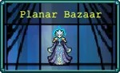 | |||||||||||||||||||
과거와 미래의 동맹국들이 기억에서 사라진 시간 사이를 오가며 이 혼란스러운 상업 공간에 모입니다. 각기 다른 지역에서 가져온 아이템을 거래하려고요. | |||||||||||||||||||
Coiling betwixt the seconds of forgotten times, allies from the past and future gather in this confusing commercial space to trade items from other realms. | |||||||||||||||||||
BGM | |||||||||||||||||||
Dust Elemental | |||||||||||||||||||
스테이지 구성 | |||||||||||||||||||
| |||||||||||||||||||
어떤 캐릭터든 간에 레벨 80을 달성하면[5] 해금되는 어드벤처 전용 상점. 각 캐릭터마다 판매하는 아이템이 다르다. 상술했듯이 여기서 노란 자물쇠로 잠겨있는 아이템을 구매한다면 해당 어드벤처 모드의 다음 게임부터 해당 아이템들이 선택창에 등장하기 시작한다. 잠겨있지 않은 아이템을 구매하면 완전히 돈낭비다.
(상인 목록)
포 : 마늘 (800), 사탕상자 (1600)
포 : 마늘 (800), 사탕상자 (1600)
안토니오 : 시금치, 갑옷, 매혹구 (3개 전부 40), 티라미수 (400)
이멜다 : 촛대, 주문속박기 (2개 전부 200), 빈 책, 복제 반지 (2개 전부 400)
파스콸리나 : 클로버 (7), 왕관, 돌가면 (40), 미치광이의 두개골 (200)
젠나로 : 검은 심장 + 붉은 심장 + 날개 (3개 전부 40), 팔 보호대 (200)
지아순타 : 채찍, 마법 지팡이, 단검 (3개 전부 10), 룬 트레이서 (200), 성스러운 바람 (400)
이멜다 : 촛대, 주문속박기 (2개 전부 200), 빈 책, 복제 반지 (2개 전부 400)
파스콸리나 : 클로버 (7), 왕관, 돌가면 (40), 미치광이의 두개골 (200)
젠나로 : 검은 심장 + 붉은 심장 + 날개 (3개 전부 40), 팔 보호대 (200)
지아순타 : 채찍, 마법 지팡이, 단검 (3개 전부 10), 룬 트레이서 (200), 성스러운 바람 (400)
아바타 : 잘못된 주문의 불꽃 (1600), 위대한 기념제 (1600), 토로나의 상자 (3200)
산타 : 성수 (800), 십자가 (200), 성경 (400), 팔찌 (800), 시곗바늘 (400), 유리 판당고 (800), 산타 재블린(400), 아르마 디오(1000)
산타 : 성수 (800), 십자가 (200), 성경 (400), 팔찌 (800), 시곗바늘 (400), 유리 판당고 (800), 산타 재블린(400), 아르마 디오(1000)
지오반나 : 마녀의 고양이, 번개 반지, 파코 바틸리아 (3개 전부 400), 오망성 (800), 불의 지팡이 (100)
푸냘라 : 도끼 (10), 검은 드릴 (400), 피에라 데 투펠로, 에잇 더 스패로우 (2개 전부 400)
포페아 : 마나의 노래 (800), 하얀 비둘기, 검은 비둘기 (2개 전부 40), 월계수 (10)
푸냘라 : 도끼 (10), 검은 드릴 (400), 피에라 데 투펠로, 에잇 더 스패로우 (2개 전부 400)
포페아 : 마나의 노래 (800), 하얀 비둘기, 검은 비둘기 (2개 전부 40), 월계수 (10)
암브로조 경 : 뼈, 체리폭탄, 광산수레, 천상의 꽃, 라 로바 (전부 1)
맥코이 오니(문스펠의 유산 레벨 80 도전과제 달성 시) : 은색 바람, 사계절, 밤 소환, 신기루 로브, 밤의 검(5개 전부 800원), 밀레 볼레 블루 (1)
새미 (본편 Tides of Foscari의 도전과제 전부 달성 시) : 마법주문 두루마리, 마법주문 유창본, 마법주문 전능본(3개 전부 300원), 섬광의 화살(400), 에스키치버, 프리즈마틱 미사일, 그림자 시종(3개 전부 800원), 파티 폭죽(1)
말 : 미니 크루원, 미니 기술자, 미니 유령, 미니 형상 변환자, 미니 보호자, 미니 임포스터 (전부 10)
본편 Emergency Meeting의 도전과제 전부 달성 시 : 신고! 행운의 카드긁기, 오락가락 환풍구, 파편 파괴, 샤프 메롱(5개 전부 400원), 생명 징후 스캔(200), 과학 암석(400), 모자(1), 미니 말(100)
시몬도 벨몬트 : 무기 파워업 (40)
작전 총기 어드벤처 도전과제 전부 달성 시 : 장총(400), 단총(10), 스프레드 샷(1000), C-U-레이저(200), 총기(1600), 소닉 블룸(200), 블레이드 석궁(200), 프리즘 라스(10), 귀소 실패(400), 다이버 광산(1000), 메탈 클로(800)
바자회 중앙 상인 : 승리의 검 (10800), Phas3r (800)
맥코이 오니(문스펠의 유산 레벨 80 도전과제 달성 시) : 은색 바람, 사계절, 밤 소환, 신기루 로브, 밤의 검(5개 전부 800원), 밀레 볼레 블루 (1)
새미 (본편 Tides of Foscari의 도전과제 전부 달성 시) : 마법주문 두루마리, 마법주문 유창본, 마법주문 전능본(3개 전부 300원), 섬광의 화살(400), 에스키치버, 프리즈마틱 미사일, 그림자 시종(3개 전부 800원), 파티 폭죽(1)
말 : 미니 크루원, 미니 기술자, 미니 유령, 미니 형상 변환자, 미니 보호자, 미니 임포스터 (전부 10)
본편 Emergency Meeting의 도전과제 전부 달성 시 : 신고! 행운의 카드긁기, 오락가락 환풍구, 파편 파괴, 샤프 메롱(5개 전부 400원), 생명 징후 스캔(200), 과학 암석(400), 모자(1), 미니 말(100)
시몬도 벨몬트 : 무기 파워업 (40)
작전 총기 어드벤처 도전과제 전부 달성 시 : 장총(400), 단총(10), 스프레드 샷(1000), C-U-레이저(200), 총기(1600), 소닉 블룸(200), 블레이드 석궁(200), 프리즘 라스(10), 귀소 실패(400), 다이버 광산(1000), 메탈 클로(800)
바자회 중앙 상인 : 승리의 검 (10800), Phas3r (800)
Ode To Castlevania 관련 도전과제 전부 달성 시 아래 상인들이 등장
마스터 사서: 발만웨이, 빙검, 고스의 화살, 오라블라스트, 스바로크 동상, 트롤 폭탄, 하이드로 스톰, 그랜드 크로스, 정령 소환, 다크 리프트, 소울 스틸, 소드 브라더스, 레드 크리스탈(전부 2800)
마스터 사서: 발만웨이, 빙검, 고스의 화살, 오라블라스트, 스바로크 동상, 트롤 폭탄, 하이드로 스톰, 그랜드 크로스, 정령 소환, 다크 리프트, 소울 스틸, 소드 브라더스, 레드 크리스탈(전부 2800)
소니아 벨몬드 : 연금술 채찍(1000), 소닉 채찍(10), 드래곤 워터 채찍(1000), 윈드 채찍(1000), 제트 블랙 채찍(10), 비부티 채찍(100), 플래티넘 채찍(1000), 색즉시공 채찍(10)
해머 : 곡선 단검(10), 수리검(10), 투창(1000), 원반(10), 아이언 볼(1000), 은색 리볼버(10), 손 수류탄(1000), 와인 잔(10)
줄리아 라포레즈 : 레이징 파이어(10), 아이스 팡(10), 게일 포스(10), 록 라이엇(10), 풀구르(200), 케레멧 버블(200), 헥스(200), 레펙시오(200)
알버스 : 콘포데레(50), 옵티컬 샷(1000), 루미나시오(1000), 움브라(1000), 글로버스(10), 소닉 질주(100), 덱스트로 쿠스토스(1000), 시니스트로 쿠스토스(1000), 센트럴리스 쿠스토스(1000), 도미누스의 분노(1665), 도미누스의 증오(1665), 도미누스의 고뇌(1665)
빈센트 도린 : 알루카트 스워브(10), 튀르핑(100), 철퇴(1000), 별 도리깨(10), 알루카드 창(1000), 트라이던트(1000), 아이언 실드(10), 수호 방패(10)
엘리자베스 바토리 : 엔도 기어, 페리 진자, 에피 헤드, 마이오 리프트(전부 1000)
헥터 : 모닝 스타, 벨나데스의 주문서, 에보니 디아볼로그, 스펙트랄 소드, 문장, 사역마 대장간(전부 1000)
해머 : 곡선 단검(10), 수리검(10), 투창(1000), 원반(10), 아이언 볼(1000), 은색 리볼버(10), 손 수류탄(1000), 와인 잔(10)
줄리아 라포레즈 : 레이징 파이어(10), 아이스 팡(10), 게일 포스(10), 록 라이엇(10), 풀구르(200), 케레멧 버블(200), 헥스(200), 레펙시오(200)
알버스 : 콘포데레(50), 옵티컬 샷(1000), 루미나시오(1000), 움브라(1000), 글로버스(10), 소닉 질주(100), 덱스트로 쿠스토스(1000), 시니스트로 쿠스토스(1000), 센트럴리스 쿠스토스(1000), 도미누스의 분노(1665), 도미누스의 증오(1665), 도미누스의 고뇌(1665)
빈센트 도린 : 알루카트 스워브(10), 튀르핑(100), 철퇴(1000), 별 도리깨(10), 알루카드 창(1000), 트라이던트(1000), 아이언 실드(10), 수호 방패(10)
엘리자베스 바토리 : 엔도 기어, 페리 진자, 에피 헤드, 마이오 리프트(전부 1000)
헥터 : 모닝 스타, 벨나데스의 주문서, 에보니 디아볼로그, 스펙트랄 소드, 문장, 사역마 대장간(전부 1000)
3. 마늘 천국 (A Garlic Paradise)
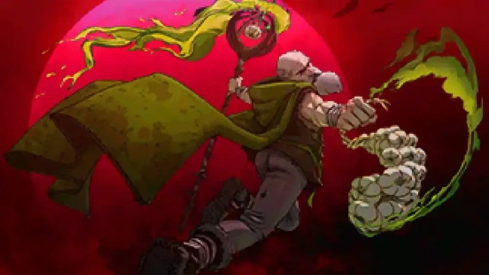
구도를 보면 알겠지만 타이틀 화면에도 존재하는 이멜다의 일러스트를 재활용한 것이다...
* 시작 골드 : 5000
* 도전 과제 : 14개
* 컬렉션 : 13
사용 가능한 캐릭터 : 포, 안토니오, 이멜다, 파스콸리나, 젠나로, 오 솔레미오, 푸냘라, 돔마리오, 지아순타, 페피노
해금된 무기 : 마늘, 검은 비둘기, 하얀 비둘기, 마녀의 고양이, 월계수, 사탕상자, 영혼 포식자, 파괴자, 흉포한 굶주림
해금된 장신구 : 빈 책, 촛대, 날개, 매력구
암상인은 이전 광기의 숲, 거친 각성, 은퇴에서 등장한다.
포 랏초가 주인공인 어드벤처. 단순해서인지 1시간 공략 루트가 따로 있다. ##
아르카나 및 은퇴한 포 랏초만 있으면, 이 어드벤처를 빨리 끝낼 수 있다. 승천 포인트를 탐욕에 투자하고, 거친 각성 및 썩은 과수원에서 광기의 그루브 아르카나로 업적에 필요한 무기를 획득한다. 위험한 숲에서 발 빠른 푸냘라로 관까지 달린다. 마늘 낙원 스테이지에서 승천 수치를 성장에 투자하고, 달빛 볼레로나 미래에서 온 우박 다르카소로 레벨 80까지 올린다. 마지막 스테이지 은퇴에서 게임 킬러 아르카나로 마무리한다.
- 해금 요소
설명에는 없지만, 어드벤처 클리어 시 포 랏초의 스킨 '은퇴'가 해금된다.
- 마늘을 진화시키세요.
보상: 페피노 해금
- 레벨 80에 도달하세요.
보상: 평면 바자회 스테이지 해금
3.1. 이전 광기의 숲
Old Mad Forest | |||||||||||||||||||
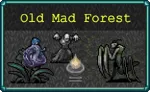 | |||||||||||||||||||
포는 더 단순했던 시절을 회상합니다. 광란의 숲에서 살아남아 마늘을 대량으로 비축하는 것만이 중요했죠. | |||||||||||||||||||
Poe recalls a simpler time, when surviving the madness of the forest and hoarding masses of garlic was all that mattered | |||||||||||||||||||
BGM | |||||||||||||||||||
The Beginning | |||||||||||||||||||
스테이지 구성 | |||||||||||||||||||
| |||||||||||||||||||
- 스테이지 구성
기본 스테이지. 스테이지 설명처럼 0.2.10 버전 이전의 광기의 숲을 따르고 있어 아무것도 없는 허허벌판이며 BGM도 구버전 시절의 음악을 쓴다. 웨이브도 본편 광기의 숲과 완전히 똑같다.
- 해금 요소
- 이전 광기의 숲에서 10분 동안 생존하세요.보상: 거친 각성 스테이지 해금
3.2. 거친 각성
Rough Awakening | |||||||||||||||||||
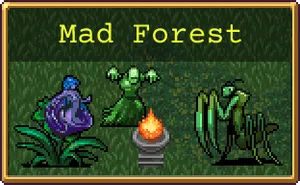 | |||||||||||||||||||
괴물 떼가 포를 깨워 현대의 삶이 여전히 악취가 난다는 것을 일깨워줍니다! 충성심 강하고 네 발 달린 친구가 길을 안내해 줄지도 모르죠... | |||||||||||||||||||
A wave of monsters awakens Poe, reminding him that modern life still stinks! Perhaps a loyal four-legged friend can show him the way... | |||||||||||||||||||
BGM | |||||||||||||||||||
Needs More Fighting | |||||||||||||||||||
스테이지 구성 | |||||||||||||||||||
| |||||||||||||||||||
- 스테이지 구성
이전 광기의 숲 스테이지에서 10분을 버티면 해금. 이름만 다른 본편 게임의 광기의 숲이다. 1시 방향의 관에서 푸냘라를 해금하는 것도 동일. 웨이브도 동일하다. 유일한 차이점은 11시 안토니오, 1시 이멜다, 12시 지아순타, 6시 산타, 5시 젠나로, 7시 파스콸리나 npc들이 배치되어 있고 그 옆엔 각 캐릭터의 일반 무기들이 배치되어 있으며[6] 상인이라 골드를 주고 추가 무기, 장신구 해금도 가능하다. 상인의 판매 품목에 대한건 아래 평면 바자회 스테이지 참조.
- 해금 요소
- 거친 각성에서 15분 동안 생존하세요.
보상: 위험한 숲 스테이지 해금
- 채찍을 찾으세요.
보상: 안토니오 벨파에제 해금
- 마법 지팡이를 찾으세요. [7]
보상: 이멜다 벨파에제 해금
- 룬트레이서를 찾으세요.
보상: 파스콸리나 벨파에제 해금
- 칼을 찾으세요.
보상: 젠나로 벨파에제 해금
- 거친 각성에서 관을 찾으세요.
보상: 푸냘라 프로볼라 해금
3.3. 위험한 숲
Risky Woods | |||||||||||||||||||
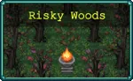 | |||||||||||||||||||
오솔레미오가 포를 이끌고 숲속 깊은 곳으로 들어가 은퇴 계획을 세운 성인을 구출합니다. 이 사제는 냄새나는 구세주에게 약속의 땅으로 인도하는 보상을 줄까요? | |||||||||||||||||||
O'Sole leads Poe deep into the forest to rescue a holy man with a retirement plan. Perhaps this priest will reward their stinky savior with guidance to the promised land? | |||||||||||||||||||
BGM | |||||||||||||||||||
Needs More Fighting | |||||||||||||||||||
스테이지 구성 | |||||||||||||||||||
| |||||||||||||||||||
- 스테이지 구성
이전 거친 각성 스테이지에서 15분을 버티면 해금. 시작 지점에서 5초만 위쪽로 이동하면 지오반나, 푸냘라, 포페아 상인 NPC가 있다.
단순하게 아래쪽 방향 길을 계속해서 따라가주면 마지막 부분엔 골드 동전과 골드 주머니가 길을 따라 이어져있고 관과 돌가면, 묵주가 보이는 목표 지점에 도달한다. 물론 관 주변에 접근 시 해골 천사 10마리가 튀어나와 관을 지키므로 묵주를 먹어 이들을 처치하고 관을 열면 관을 열 수 있다. 오솔레미오나 지아순타 같은 이동 속도가 빠른 캐릭터로 잘 전진했다면 대략 3~4분 내로 도착할 수 있는 짧은 거리이며 하이퍼를 키면 최소 1~2분, 최대 3분이다.
이 맵은 기본적으로 광기의 숲의 웨이브를 그대로 사용하지만, 광기의 숲에 등장하던 피피스트렐로(일반 박쥐)가 먼지 정령으로 바뀐 것 외엔 다른 게 없다.[8] 즉 0분~3분대와 7분대는 박쥐 대신 먼지 정령이 등장하는 차이점이 있다. 물론 나머지는 그냥 광기의 숲 복붙이다.
- 해금 요소
- 위험한 숲에서 관을 여세요.
보상: 썩은 과수원 스테이지 + 돔마리오 해금
3.4. 썩은 과수원
Rotten Orchard | ||||||||||||||||||||
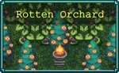 | ||||||||||||||||||||
마늘 낙원으로 가는 길은 포를 수목의 악몽이 가득한 과수원으로 안내합니다. 이 해로운 식물들을 베어내고 꿈꾸는 듯한 푸른 들판을 찾아보세요. | ||||||||||||||||||||
The path to the Garlic Paradise leads Poe into an orchard of arboreal nightmares. Cut down these pernicious plants to find the verdant fields of dreams. | ||||||||||||||||||||
BGM | ||||||||||||||||||||
Barely Staying Alive | ||||||||||||||||||||
스테이지 구성 | ||||||||||||||||||||
| ||||||||||||||||||||
- 스테이지 구성
이전 위험한 숲 스테이지에서 관을 열면 해금. 목표는 귀여운 몰리사노(페피노의 외형)의 외형을 한 Jiva Tree(지바 나무) 보스를 1마리 이상 처치하는 것이다.[9] 맵은 아주 좁은 네모 형태의 식물원에서 플레이하며, 특이하게도 적들은 일 몰리제의 등장 적군인 몰리사노와 그 외 식물계열 적군들이 다수 등장하는데, 일 몰리제와는 달리 여기서 등장하는 몰리사노 식물들은 다른 잡몹들처럼 플레이어를 죽이려고 쫒아온다. 보스인 지바 나무는 매우 느려터진 데다 공격력도 매우 약하다. 그런 주제에 처치 시 항상 진화 가능 보물 상자를 떨구므로 혜자스러운 보스. 단 얼마 정도 피격되면 일정 시간 동안 피격 판정과 공격 판정이 사라지는 특성이 있다.
다르게 말하면 이전 스테이지 3개와는 달리 이쪽은 플레이 타임은 짧지만 웨이브 자체를 아예 새로 만들어낸 수준이므로 어느 정도 즐길 거리가 있긴 있다.페피노로 동족상잔을 즐길 수 있다
또한 시작 지점 바로 위쪽에 클로버 5개, 천상의 꽃 5개, 시금치 5개, 월계수 5개가 배치되어 있어 시작하자마자 클로버+시금치 풀업 및 천상의 꽃 + 월계수 레벨 5를 들고 시작할 수도 있다. 또한 지도를 보면 정상적으로는 갈 수 없는 곳에 붉은 장미 덩쿨이 있는데, 광기의 그루브 아르카나를 사용하면 이걸 획득할 수 있다. 지아순타를 쉽게 해금할 수 있는 이유는 이것 때문이다.
- 해금 요소
- 썩은 과수원에서 지바 나무를 처치하세요.
보상: 마늘 낙원 스테이지 해금
- 성스러운 바람을 진화시키거나 붉은 장미 덩쿨을 찾으세요.
보상: 지아순타 벨파에제 해금
웨이브 목록 (펼치기 · 접기)
- 0분: 슬픈 몰리사노, 지바 나무(보스)
- 1분: 푸른 비너스(갈색 변종), 슬픈 몰리사노
- 2분: 푸른 비너스(갈색 변종), 슬픈 몰리사노
- 3분: 지바 나무(보스), 마늘
- 4분: 슬픈 몰리사노, 마늘
- 5분: 푸른 비너스(갈색 변종), 행복한 몰리사노
- 6분: 푸른 비너스(갈색 변종), 행복한 몰리사노
- 7분: 행복한 몰리사노, 마늘
- 8분: 행복한 몰리사노, 마늘
- 9분: 행복한 몰리사노, 지바 나무(보스)
- 10분: 귀여운 몰리사노, 푸른 비너스(갈색 변종)
- 11분: 귀여운 몰리사노, 푸른 비너스(갈색 변종)
- 12분: 귀여운 몰리사노, 마늘
- 13분: 귀여운 몰리사노, 마늘, 지바 나무(보스)
- 14분: 귀여운 몰리사노, 마늘
3.5. 마늘 낙원
Garlic Paradise | ||||||||||||||||||||
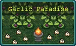 | ||||||||||||||||||||
무시무시한 나무를 정의롭게 처단한 포는 마침내 목표를 달성할 수 있게 되었습니다. 마늘 천국의 힘으로 은퇴할 수 있을 만큼의 부를 모을 수 있게 된 거죠! | ||||||||||||||||||||
With the terrifying tree righteously slain, Poe can finally achieve his goal: with the power of the Garlic Paradise, he can amass enough riches to retire!. | ||||||||||||||||||||
BGM | ||||||||||||||||||||
Song of Mana | ||||||||||||||||||||
스테이지 구성 | ||||||||||||||||||||
| ||||||||||||||||||||
- 스테이지 구성
이전 썩은 과수원 스테이지에서 지바 나무를 1마리 이상 처치하면 해금. 목표는 레벨 50 이상 달성이다.
웨이브는 또다시 광기의 숲의 웨이브를 재활용하고 있다...
난이도는 매우 쉽다. 썩은 과수원과 동일한 맵에서 플레이하게 되는데, 스테이지 이름답게 시작하자마자 앞쪽에 마늘 10개와 붉은 심장 10개가 배치되어 있어서 시작 10초 만에 마늘 레벨 8과 붉은 심장 레벨 5를 찍게 된다. 즉 초반 웨이브를 껌 씹듯이 그냥 프리패스를 해버릴 수가 있다. 무슨 캐릭을 하든 난이도는 매우 낮다. 노 왕관 기준으로 대략 8~10분쯤에 레벨 50을 달성될 것이므로 그때 종료해 주면 된다.
웨이브는 또다시 광기의 숲의 웨이브를 재활용하고 있다...
난이도는 매우 쉽다. 썩은 과수원과 동일한 맵에서 플레이하게 되는데, 스테이지 이름답게 시작하자마자 앞쪽에 마늘 10개와 붉은 심장 10개가 배치되어 있어서 시작 10초 만에 마늘 레벨 8과 붉은 심장 레벨 5를 찍게 된다. 즉 초반 웨이브를 껌 씹듯이 그냥 프리패스를 해버릴 수가 있다. 무슨 캐릭을 하든 난이도는 매우 낮다. 노 왕관 기준으로 대략 8~10분쯤에 레벨 50을 달성될 것이므로 그때 종료해 주면 된다.
- 해금 요소
- 마늘 낙원에서 레벨 50에 도달하세요.
보상: 은퇴 스테이지 해금
3.6. 은퇴
Retirement | ||||||||||||||||||||
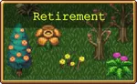 | ||||||||||||||||||||
마침내 포는 은퇴를 선언하고 항상 꿈꿔왔던 대로 영원히 아무것도 하지 않고 편히 쉴 수 있게 되었죠. 하지만 우리의 악취나는 영웅이 미동도 하지 않고 앉아서 생활하는 것으로 만족할 수 있을까요? | ||||||||||||||||||||
At last, Poe can retire, and simply stand still forever as he has always dreamed. But will a perfectly sedentary lifestyle be enough for our malodorous hero? | ||||||||||||||||||||
BGM | ||||||||||||||||||||
Vempair Survaivors | ||||||||||||||||||||
스테이지 구성 | ||||||||||||||||||||
| ||||||||||||||||||||
- 스테이지 구성
이전 마늘 낙원 스테이지에서 레벨 50 이상을 달성하면 해금되며 마지막 스테이지이다.
본편의 일 몰리제 스테이지와 완전히 동일하다. 플레이타임은 5분을 못 넘긴다. 대략 킬 수가 3000킬 이상일시 종료해 주면 되는 너무나도 쉬운 스테이지.
본편의 일 몰리제 스테이지와 완전히 동일하다. 플레이타임은 5분을 못 넘긴다. 대략 킬 수가 3000킬 이상일시 종료해 주면 되는 너무나도 쉬운 스테이지.
- 해금 요소
- 은퇴에서 몰리사노 3000마리를 처치하세요. [10]
보상: 10000 골드
4. 빛과 어둠의 세계 (World of Light and Dark)
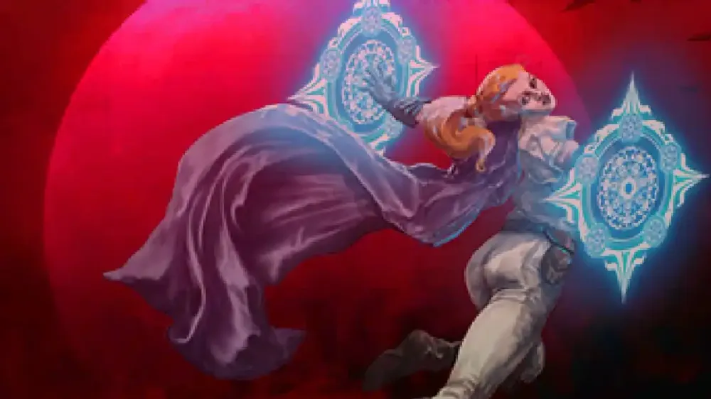
타이틀 화면에도 존재하는 이멜다의 일러스트만 빼온 것이다.
* 시작 골드 : 5000
* 도전 과제 : 17
* 컬렉션 : 13
사용 가능한 캐릭터 : 이멜다, 클레리씨, 푸냘라, 크로치, 포페아, 콘체타, 야타, 지아순타, 지오반나
처음부터 해금되어 있는 무기 : 마법 지팡이, 신성한 지팡이, 단검, 천 개의 칼날, 불의 지팡이, 헬파이어, 성수, 정화자, 번개 반지, 번개 고리, 시곗바늘, 팔찌, 이중 팔찌, 삼중 팔찌
처음부터 해금되어 있는 장신구 : 시금치, 촛대, 팔 보호대, 주문속박기
이멜다 벨파에제가 주인공인 어드벤처. 다만 그나마 창의적인 요소라도 있던 마늘 천국 어드벤처와는 달리 이 어드벤처는 기본 스테이지인 심오한 전통을 제외하면 전부 본편 게임에 있던 스테이지를 그대로 가져온 것이다.
- 해금 요소
설명에는 없지만, 어드벤처 클리어 시 이멜다 벨파에제의 스킨 '블라인드 해제'가 해금된다.
- 레벨 80에 도달하세요.
보상: 평면 바자회 스테이지 해금
4.1. 심오한 전통
Deep Lore | ||||||||||||||||||||
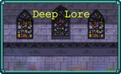 | ||||||||||||||||||||
이멜다는 교회에서 새로운 삶을 얻었지만, 어느 날 밤 괴물의 공격으로 평화는 산산이 조각나 버립니다. 궁지에 몰린 이몰다는 가족의 힘을 요청해야만 살아남을 수 있습니다! | ||||||||||||||||||||
Imelda has sought a new life in the church - until one night the peace is shattered by a monstrous attack. Backed into a corner, Imelda must call upon her family's power to survive! | ||||||||||||||||||||
BGM | ||||||||||||||||||||
Before Concession | ||||||||||||||||||||
스테이지 구성 | ||||||||||||||||||||
| ||||||||||||||||||||
- 스테이지 구성
기본 스테이지. 동시에 본편에는 없는 이 어드벤처만의 전용 맵이다.
목표는 마늘 천국의 썩은 과수원 스테이지처럼 좁은 네모 형태의 맵에서 10분을 버티는 것이 목표이다.
부가 목표인 성경은 그냥 시작하자마자 촛대와 함께 눈 앞에 있으며(...) 시스터 클레리씨의 관은 왼쪽 아래로 2초만 가면 바로 보인다. 단 관에 조금이라도 접근하려 하면 블라인더들이 등장해 관을 지키므로 처음부터 꽁으로 얻을순 없고 성장을 한 뒤에 블라인더들을 처리해 줘야 한다. 상세 문단에 있는 노 아르카나+한계돌파 컨셉 플레이에 하이퍼를 킨 상태에서도 대략 4~5분쯤에 성장을 잘 했다면 블라인더를 처리할 수 있다. 또한 비록 첫 맵에서 진화가 불의 지팡이, 단검, 성경 외엔 진화가 되는 게 없더라도 성경, 성수, 마법 지팡이가 체급이 좋아서 레벨 80이 될 때까지도 잘 버틴다. 물론 28분부터는 진화와 강화를 전부 마쳤더라도 압사를 피할 수 없으므로 28분이 한계이다. 아르카나를 쓴다면 30분도 버틸 수 있다.
각각 왼쪽 위와 오른쪽 위에 묵주가 하나씩 배치되어 있어 힘든 초반은 어느 정도 커버할 수 있다. 전투하다 적이 쌓여서 위험한 것 같으면 바로 묵주를 먹자.
웨이브는 마그나 예배당의 웨이브를 사용하고 있으며, 엔더 처치 이전의 이벤트 형식으로 등장하는 4사신 팀은 나오지 않는다.
목표는 마늘 천국의 썩은 과수원 스테이지처럼 좁은 네모 형태의 맵에서 10분을 버티는 것이 목표이다.
부가 목표인 성경은 그냥 시작하자마자 촛대와 함께 눈 앞에 있으며(...) 시스터 클레리씨의 관은 왼쪽 아래로 2초만 가면 바로 보인다. 단 관에 조금이라도 접근하려 하면 블라인더들이 등장해 관을 지키므로 처음부터 꽁으로 얻을순 없고 성장을 한 뒤에 블라인더들을 처리해 줘야 한다. 상세 문단에 있는 노 아르카나+한계돌파 컨셉 플레이에 하이퍼를 킨 상태에서도 대략 4~5분쯤에 성장을 잘 했다면 블라인더를 처리할 수 있다. 또한 비록 첫 맵에서 진화가 불의 지팡이, 단검, 성경 외엔 진화가 되는 게 없더라도 성경, 성수, 마법 지팡이가 체급이 좋아서 레벨 80이 될 때까지도 잘 버틴다. 물론 28분부터는 진화와 강화를 전부 마쳤더라도 압사를 피할 수 없으므로 28분이 한계이다. 아르카나를 쓴다면 30분도 버틸 수 있다.
각각 왼쪽 위와 오른쪽 위에 묵주가 하나씩 배치되어 있어 힘든 초반은 어느 정도 커버할 수 있다. 전투하다 적이 쌓여서 위험한 것 같으면 바로 묵주를 먹자.
웨이브는 마그나 예배당의 웨이브를 사용하고 있으며, 엔더 처치 이전의 이벤트 형식으로 등장하는 4사신 팀은 나오지 않는다.
- 해금 요소
- 심오한 전통에서 10분 동안 생존하세요.보상: 화려한 도서관 스테이지 해금
- 심오한 전통에서 시스터 클레리씨의 관을 여세요.
보상: 시스터 클레리씨 해금
- 심오한 전통에서 성경을 찾으세요.
보상: 성경 해금
4.2. 화려한 도서관
Inlaid Library | |||||||||||||||||||
이멜다는 천국과 지옥의 가해자들에게 복수를 맹세하며 폐허가 된 예배당을 탈출합니다. 이멜다는 내용이 없는 별난 책을 찾아 끝이 보이지 않을 듯 무한한 도서관을 향해 떠납니다. 책을 찾으면 반격할 힘을 얻을 수 있습니다. | |||||||||||||||||||
Imelda escapes the razed chapel, swearing vengence against the assailants from both heaven and hell. She journeys to a seemingly infinite library in search of a curious book without words that can give her the power to strike back. | |||||||||||||||||||
BGM | |||||||||||||||||||
Reincarnated Echoes | |||||||||||||||||||
스테이지 구성 | |||||||||||||||||||
| |||||||||||||||||||
- 스테이지 구성
심오한 전통에서 10분 이상 버티면 해금. 본편 게임의 화려한 도서관과 완전히 동일하다. 차이점이라면 시작 지점 바로 오른쪽에 안토니오 상인 NPC, 그리고 왼쪽으로 쭉 가면 파스콸리나, 젠나로 상인 NPC가 있다는 점이고 하이퍼 모드일시 적 체력이 10% 증가하고 행운 보너스 +10%가 삭제되었다는 점.
심오한 전통에서 레벨 80을 찍었다면, 빈 책을 구매해서 스테이지 해금을 준비할 수도 있으며 광기의 그루브 아르카나를 쓴다면 시작하자마자 빈 책을 집을 수도 있으니 취향껏 고르자.
시뇨라 롯시 12마리가 자폭하기 전에 처치해야 하는 해금 요소 때문에 좀 진득하게 플레이해야 한다. 초반에 시뇨라 12마리를 처리하는 건 아무리 미래에서 온 우박이라도 불가능이고, 우박 효과로 깨려면 중후반에 묵주가 엄청나게 쌓였을 때나 가능하다. 노 아르카나+한계돌파의 경우 시곗바늘 7렙+빈 책 5렙은 필수이다. 시뇨라는 본편처럼 0분, 7분, 10분, 17분, 20분, 22분, 29분대에 등장하므로 컨셉 플레이를 한다면 시뇨라를 멀리서 얼릴 수 있는 무기나 아르카나 등을 준비해야 한다. 아니면 먼 곳에서 시뇨라가 오는 게 보이면 정화자+절멸 등으로 양념을 치고 불경한 기도문같은 걸로 잽싸게 갈아버리거나 아예 기폭 자체를 못 하게 도주하면서 때리는 것도 방법이다.
- 해금 요소
- 빈 책을 찾아 마법 지팡이를 진화시키세요.
보상: 광기의 숲 스테이지 해금
- 화려한 도서관에서 지오반나 그라나의 관을 여세요.
보상: 지오반나 그라나 해금
- 시뇨라 로시 12명이 폭발하기 전에 처치하세요.
보상: 잘못된 주문의 불꽃 해금
4.3. 광기의 숲
Mad Forest | |||||||||||||||||||
이멜다가 자신의 단호한 영혼을 비추자 빈 고서가 비밀을 드러냅니다. 그리고 지옥과 천국을 모두 해체하는 불경스러운 기술을 가진 배신자 수녀의 안식처로 이멜다를 안내하죠. 총잡이 자매를 찾는 수색이 시작됩니다... | |||||||||||||||||||
Illuminated by her resolute spirit, the Empty Tome reveals its secrets, guiding Imelda to the resting place of a renegade nun with the blasphemous skills to dismantle both hell and heaven. The search for the gunslinging sister begins... | |||||||||||||||||||
BGM | |||||||||||||||||||
Red & Blue | |||||||||||||||||||
스테이지 구성 | |||||||||||||||||||
| |||||||||||||||||||
- 스테이지 구성
화려한 도서관에서 마법 지팡이와 빈 책을 조합해 신성한 지팡이로 진화시키면 해금.
이번에도 본편 게임의 광기의 숲과 완전히 동일하다. 차이점이라면 스테이지 스탯 보너스 구성이 위의 화려한 도서관과 동일하며 스테이지 설명에 적힌 대로 푸냘라를 찾는 게 목표라서인지 BGM이 푸냘라의 전용 테마인 Red & Blue이다. 그리고 푸냘라의 관 주변엔 지오반나 상인 NPC가 있다.
목표는 푸냘라 프로폴라의 관을 여는 것이다. 그 외에는 별다른 보너스 해금 요소가 없으므로, 빠르게 클리어하려면 시작하자마자 1시로 달려서 관으로 이동한 뒤 해골 천사들을 불러낸후 지오반나에게 접촉한 뒤 오망성을 구입하면 오망성이 발동되면서 해골 천사들이 전멸한다. 하이퍼 모드 기준 고작 1분 30초 만에 클리어할 수 있는 허무한 스테이지.
- 해금 요소
- 광기의 숲에서 푸냘라 프로볼라의 관을 여세요.
보상: 갈로의 탑 스테이지 + 푸냘라 프로볼라 해금
4.4. 갈로의 탑
Gallo Tower | |||||||||||||||||||
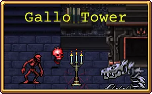 | |||||||||||||||||||
푸냘라는 이멜다의 대의에 동참하여 균형이 신과 악마를 물리칠 수 있는 열쇠임을 잔인한 벨파에제에게 알립니다. 이들은 소란스러운 탑으로 떠나 무시무시한 적과 싸우고, 크로마 무기로 훈련하고, 타락한 천사를 풀어주어 천상의 반란을 돕습니다. | |||||||||||||||||||
Pugnala joins Imelda's cause, informing the relentless Belpaese that balance is the key to defeat the divine and the demonic. They journey to a tumultuous tower to fight terrifying foes, train with chromatic weaponry, and free a fallen angel to aid their celestial rebellion. | |||||||||||||||||||
BGM | |||||||||||||||||||
Castle People | |||||||||||||||||||
스테이지 구성 | |||||||||||||||||||
| |||||||||||||||||||
- 스테이지 구성
광기의 숲에서 푸냘라 프로볼라의 관을 열면 해금. 본편 게임의 갈로의 탑과 완전히 동일하다. 차이점이라면 크로치 프리토의 관과 마나의 노래 아이템이 새로 배치되어 있다는 점.
주 목표는 크로치 프리토의 관을 여는 것이며, 추가 해금 요소로 마나의 노래 아이템 획득과 콘체타의 관을 여는 것이다.
크로치 프리토의 관은 아래쪽으로 쭉 내려가면[11] 중앙에 십자가 3개와 함께 배치되어 있으며, 마나의 노래는 맨 아래쪽에 있고 콘체타의 관은 본편 게임과 동일하게 왼쪽의 빛나는 거울로 진입해야 관을 찾을 수 있다. 여러 요소들을 해금한 채로 어드벤처를 진행한다면 우 메탈리오 위치 아래칸만 수색하면 되므로 더 쉽다. 물론 관들은 여전히 주변 수호병들을 제거해야 한다. 크로치의 관은 블라인더, 콘체타의 관은 아콘 스페이타가 지키므로 주의.
크로치 프리토의 관은 아래쪽으로 쭉 내려가면[11] 중앙에 십자가 3개와 함께 배치되어 있으며, 마나의 노래는 맨 아래쪽에 있고 콘체타의 관은 본편 게임과 동일하게 왼쪽의 빛나는 거울로 진입해야 관을 찾을 수 있다. 여러 요소들을 해금한 채로 어드벤처를 진행한다면 우 메탈리오 위치 아래칸만 수색하면 되므로 더 쉽다. 물론 관들은 여전히 주변 수호병들을 제거해야 한다. 크로치의 관은 블라인더, 콘체타의 관은 아콘 스페이타가 지키므로 주의.
마나의 노래의 경우 위치가 양심이 없기 때문에[12] 차라리 광기의 그루브 아르카나로 얻는 게 편하다. 다른 요소들은 어떻게든 노 아르카나 컨셉 플레이로 첫 플레이에 전부 해낼 수 있으나 마나의 노래만큼은 그게 안 된다.
- 해금 요소
- 갈로의 탑에서 크로치 프리토의 관을 여세요.
보상: 아스트랄 계단 스테이지 + 크로치 프리토 해금
- 갈로의 탑에서 마나의 노래를 찾으세요.
보상: 포페아 페코리나 해금
- 갈로의 탑에서 마법의 거울로 들어가 콘체타의 관을 여세요.
보상: 콘체타 카치오타 해금
4.5. 아스트랄 계단
Astral Stair | ||||||||||||||||||||||
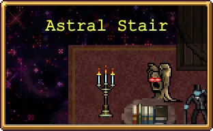 | ||||||||||||||||||||||
훈련을 마친 이멜다는 이제 아스트랄 계단으로 올라가야 합니다. 이멜다의 힘은 마치 맛있는 디저트 같습니다. 겹겹이 층으로 이루고 있으니까요. 여기에 푸냘라의 권총이 뿜어내는 불경스러운 일을 결합하면 운명에 맞서 싸울 수 있습니다. | ||||||||||||||||||||||
Her training complete, Imelda must now ascend the Astral Stair. Like a delectable dessert, there are layers to her strength, and by combining the profane power of Pugnala's pistols she can rise to face her destiny. | ||||||||||||||||||||||
BGM | ||||||||||||||||||||||
Libro Inferno | ||||||||||||||||||||||
스테이지 구성 | ||||||||||||||||||||||
| ||||||||||||||||||||||
- 스테이지 구성
갈로의 탑에서 크로치 프리토의 관을 열면 해금. 웨이브는 19분 웨이브를 제외하면 본편 게임과 완전히 동일하다. 이 맵의 19분 웨이브는 특이하게도 우주 알만 수백 마리가 스폰되던 본편 게임의 아스트랄 계단과는 달리 여기 어드벤처에선 고작 2마리만 스폰되고 끝이다.
주 목표는 피에라 데 투펠로와 에잇 더 스패로우를 진화시키는 것이다. 친절하게도 시작 지점 바로 위에 티라미수가 배치되어 있고 시작하자마자 바로 눈 앞에 잘못된 주문의 불꽃, 불의 지팡이가 배치되어 있으며 아스트랄 계단 스테이지 특성상 골드 핑거가 맵에 하나씩 총 5개가 있으므로 경험치를 시작하자마자 배터져 죽을 때까지 폭식할 수 있다. 일반적으론 게임 킬러 아니면 9분의 고스트경 보스부터 진화 상자를 드랍하는데, 골든 핑거 덕분에 9분까지 충분히 버틸 수 있다.
부가 목표로 맵에 배치된 피에라 데 투펠로와 에잇 더 스패로우를 획득하는 것과 야타 카발로의 관을 여는 것이다. 피에라 데 투펠로와 에잇 더 스패로우는 원본 스테이지와 동일한 위치에 있으며, 야타 카발로의 관은 중앙의 워프게이트를 타고 가야 하면 나오는 아스트랄 의자만 등장하는 구역에 위치해 있다. 물론 여기도 접근 시 블라인더들이 등장해 관을 지키므로 어느 정도 성장해야 한다.
즉 전체적으로 보면 적 강화 기믹까지 붙어 있어서 뭔가 어려워 보이지만 난이도는 쉬운 편이다. 특히 푸냘라를 고르면 손쉽게 목적을 달성할 수 있다.
즉 전체적으로 보면 적 강화 기믹까지 붙어 있어서 뭔가 어려워 보이지만 난이도는 쉬운 편이다. 특히 푸냘라를 고르면 손쉽게 목적을 달성할 수 있다.
- 해금 요소
- 피에라 데 투펠로와 에잇 더 스패로우를 진화시키세요.
보상: 마그나 예배당 스테이지 해금
- 아스트랄 계단에서 피에라 데 투펠로를 찾으세요.
보상: 피에라 데 투펠로 해금
- 아스트랄 계단에서 에잇 더 스패로우를 찾으세요.
보상: 에잇 더 스패로우 해금
- 아스트랄 계단에서 야타 카발로의 관을 여세요.
보상: 야타 카발로 해금
4.6. 마그나 예배당
Cappella Magna | |||||||||||||||||||
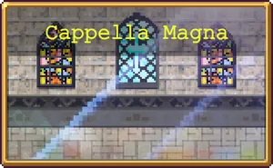 | |||||||||||||||||||
이멜다는 필멸의 종족을 위해 광기 어린 전쟁에 참여합니다. 목적은 복수입니다. 그렇지만 진정한 적은 누구일까요? | |||||||||||||||||||
Imelda fights for mortal kind in a maddening battle for vengeance - but who is the true foe? | |||||||||||||||||||
BGM | |||||||||||||||||||
I'm Every Reaper | |||||||||||||||||||
스테이지 구성 | |||||||||||||||||||
| |||||||||||||||||||
- 스테이지 구성
아스트랄 계단에서 피에라 데 투펠로와 에잇 더 스패로우를 진화시키면 해금.
본편의 마그나 예배당과 완전히 동일하며 주 목표는 종말의 사신 엔더를 처치하는 것. 그 때문에 웨이브는 종말의 사신 이벤트 이전처럼 4사신(0분 매드너, 5분 드라우너, 10분 스토커, 15분 트릭스터)이 웨이브에 끼어서 등장하므로, 무조건 4사신을 처치해야만 한다.
더불어 이 어드벤처의 경우 종말의 사신 엔더 보스를 처치하더라도 4사신 기믹은 계속해서 유지된다. 즉 마그나 예배당의 엔더 기믹 및 4사신 이벤트 기믹이 그립다면 이 곳의 스테이지로 어느 정도 체험해 볼 수 있다.
- 해금 요소
- 마그나 예배당에서 엔더를 처치하세요.
보상: 10000 골드
- 마그나 예배당에서 지아순타의 관을 여세요.
보상: 지아순타 벨파에제 해금
5. 빙하기의 종말 (To end an Ice age)
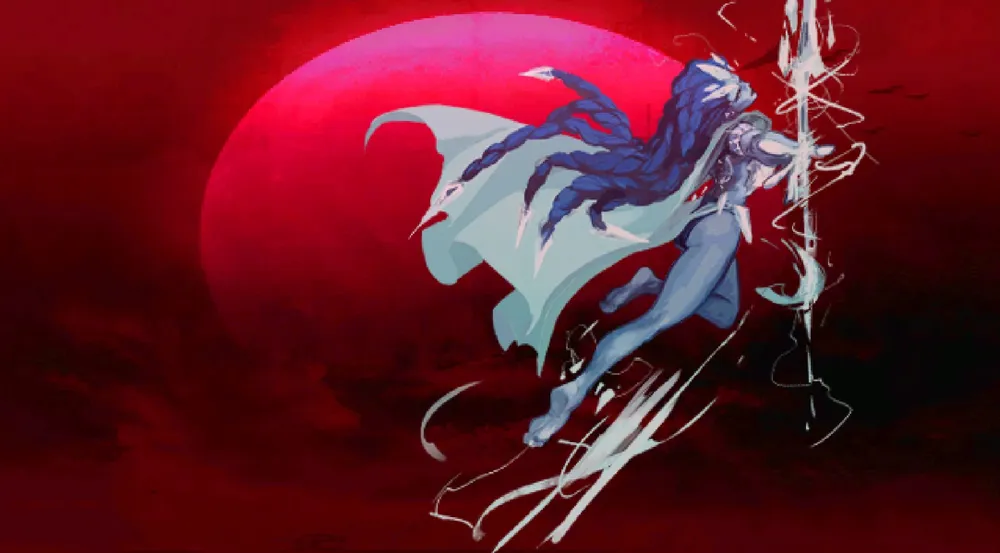
구도를 보면 알겠지만 타이틀 화면에도 존재하는 이멜다의 일러스트를 재활용한 것이다...
* 시작 골드 : 5000
* 도전 과제 : 15개
* 컬렉션 : 20
사용 가능한 캐릭터 : 쉬문 에타, 모르타치오, 비앙카 람바, 코스모, 크리스틴, 엑스대시, 토스티, 스미스, 가제보
해금된 무기 : 채찍, 마법 지팡이, 십자가, 오망성, 시곗바늘, 성스러운 바람, 월계수, 유리 판당고
처음부터 사용 가능한 장신구 : 시금치, 갑옷, 검은 심장, 날개, 클로버, 왕관
쉬문 에타가 주인공인 어드벤처. 온기가 사라진 세계라는 설정이라 마지막 스테이지 전까지 치킨이 일절 나오지 않으므로 다른 회복수단을 마련하는 것이 좋다.
- 해금 요소
설명에는 없지만, 어드벤처 클리어 시 쉬문 에타의 스킨 '재탄생 쉬문 에타'가 해금된다.
- 쉬문 에타로 레벨 40에 도달하세요.
보상: 가제보 해금
- 레벨 80에 도달하세요.
보상: 평면 바자회 스테이지 해금
5.1. 빙하기
Ice age | |||||||||||||||||||
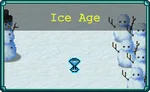 | |||||||||||||||||||
모든 것이 영원한 얼음으로 둘러싸인 혹한의 시대, 예상치 못한 영웅이 생명의 불꽃을 되살리고 얼어붙은 세상의 차가운 유골을 되살리기로 결심합니다. | |||||||||||||||||||
Amidst a frigid era where all is encased in eternal ice, an unlikely hero decides to rekindle the flame of life and revive the cold bones of this frozen world. | |||||||||||||||||||
BGM | |||||||||||||||||||
Remedy in the Snow | |||||||||||||||||||
스테이지 구성 | |||||||||||||||||||
| |||||||||||||||||||
- 스테이지 구성
기본 스테이지. 맵은 본편 게임의 화이트아웃 스테이지와 완전히 동일하며 웨이브도 똑같은 걸 쓴다. 차이점이라면 소르베토가 화로에 있단 것과 시작지점 바로 아래편에 이멜다 상인 NPC가 있다는 점이다.
목표는 남쪽으로 멀리 가야 나오는 관 열기이다. 관에 접근 시 블라인더 3마리가 나와 관을 수호하지만, 근처에 소르베토가 있으므로 이걸 먹고 죽이면 된다.
이 스테이지에서 40레벨을 찍으려 할 경우 아르카나는 거의 필수이다. 안 그래도 진화 기회가 4번뿐인 데다 특히 15~16분대의 보스인 키츠네를 처리할 방법이 은두자 프라타와 소르베토를 엄청나게 쌓아두는 것 외엔 사실상 없기 때문에 고통이다. 경험치 폭식 구간도 11분 유령 웨이브 외엔 그냥 없다. 물론 아르카나를 쓸 경우 희대의 사기 다르카나인 미래에서 온 우박을 쓰면 만사 해결이지만 이래도 키츠네를 처리 못 할 가능성이 높으므로 주의.
목표는 남쪽으로 멀리 가야 나오는 관 열기이다. 관에 접근 시 블라인더 3마리가 나와 관을 수호하지만, 근처에 소르베토가 있으므로 이걸 먹고 죽이면 된다.
이 스테이지에서 40레벨을 찍으려 할 경우 아르카나는 거의 필수이다. 안 그래도 진화 기회가 4번뿐인 데다 특히 15~16분대의 보스인 키츠네를 처리할 방법이 은두자 프라타와 소르베토를 엄청나게 쌓아두는 것 외엔 사실상 없기 때문에 고통이다. 경험치 폭식 구간도 11분 유령 웨이브 외엔 그냥 없다. 물론 아르카나를 쓸 경우 희대의 사기 다르카나인 미래에서 온 우박을 쓰면 만사 해결이지만 이래도 키츠네를 처리 못 할 가능성이 높으므로 주의.
- 해금 요소
- 빙하기에서 관을 여세요.보상: 아이스크림 스테이지 + 모르타치오 캐릭터 해금
5.2. 아이스크림
Ice Cream | |||||||||||||||||||
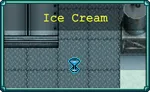 | |||||||||||||||||||
모르타치오의 덜그럭거리는 뼈들은 그가 걸을 때마다 우스꽝스러운 소리를 내지만, 그는 불멸의 결의를 갖고, 버려진 공장의 폐허로 쉬문을 이끌고 있습니다. 이 해골은 오래전 잃어버린 사랑의 불꽃으로 움직이는 것일까요? | |||||||||||||||||||
Mortaccio’s rattling bones make funny noises as he walks with immortal determination, leading She-Moon towards the ruins of a forsaken factory. Is this skeleton moved by the flame of a long lost love? | |||||||||||||||||||
BGM | |||||||||||||||||||
It's Raining Minotaurs | |||||||||||||||||||
스테이지 구성 | |||||||||||||||||||
| |||||||||||||||||||
- 스테이지 구성
빙하기에서 모르타치오의 관을 열면 해금. 목표는 비앙카 람바의 관을 찾아서 여는 것이며, 관의 위치는 친절하게도 매우 많이 배치된 소르베토만 쭉 따라가면 관을 찾을 수 있다. 다만 접근 시 엄청난 양의 소드 가디언이 나오므로 어느 정도 성장하고 나서 가야 한다. 소드 가디언이 25분대 이후부터 나오는 적이기 때문에 초반에 달려봤자 잡을 방법도 없고 관으로 향하는 거리도 좀 멀어서 아무리 빨리 달려도 최소 2분, 최대 3분대에 도착한다. 불안하면 그냥 성장을 전부 하고 나서 11시로 달리는 게 좋다. 채찍 진화와 유리 판당고 업글을 하면 어느 정도 숨통이 트인다.
이 맵은 본편 게임의 유제품 공장 스테이지를 그대로 사용하며 웨이브도 그와 똑같은 걸 사용한다. 차이점이라면 오른쪽 위로 가면 포페아 상인 NPC가 있고 관이 주 목표라는 점. 촛대를 해금할 거라면 5시 방향으로 가서 촛대를 집어야 한다.
이 맵은 본편 게임의 유제품 공장 스테이지를 그대로 사용하며 웨이브도 그와 똑같은 걸 사용한다. 차이점이라면 오른쪽 위로 가면 포페아 상인 NPC가 있고 관이 주 목표라는 점. 촛대를 해금할 거라면 5시 방향으로 가서 촛대를 집어야 한다.
- 해금 요소
- 아이스크림에서 관을 여세요.보상: 불타는 환영 스테이지 + 비앙카 람바 캐릭터 해금
5.3. 불타는 환영
A Fiery Apparition | |||||||||||||||||||
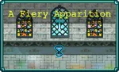 | |||||||||||||||||||
아닙니다. 람바는 불같은 욕설을 내뱉으며 모르타치오를 향한 분노에 불타고 있지만, 해골은 아랑곳하지 않아요. 람바는 이제 엎질러진 (그리고 이제는 얼어붙은) 우유를 두고 (비유적으로) 울기 바쁘기 때문이죠. 하지만 람바의 호통 속에서 쉬문의 귀를 사로잡은 것은 바로 불새의 전설이었습니다. | |||||||||||||||||||
No. Ramba spits fiery insults at Mortaccio, her broken heart still burning with rage - but the skeleton ignores her, too busy crying (figuratively) over spilt (and now frozen) milk. But something catches She-Moon’s ear in Ramba’s scathing rant: the legend of the firebird. | |||||||||||||||||||
BGM | |||||||||||||||||||
I'm Every Reaper | |||||||||||||||||||
스테이지 구성 | |||||||||||||||||||
| |||||||||||||||||||
- 스테이지 구성
아이스크림에서 비앙카 람바의 관을 열면 해금. 목표는 코스모 파보네의 관을 찾아서 여는 것이다. 관은 6시 방향에 있으며 접근 시 해골 천사 다수가 튀어나와 관을 수호한다.
이 맵은 본편 게임의 마그나 예배당 스테이지를 그대로 사용하며 웨이브도 그와 똑같은 걸 사용하며 엔더 이벤트 이전처럼 4사신 팀이 웨이브에 합류한다. 단 4사신을 전부 죽인다고 해서 엔더랑 싸우지는 않는다.
이 맵은 본편 게임의 마그나 예배당 스테이지를 그대로 사용하며 웨이브도 그와 똑같은 걸 사용하며 엔더 이벤트 이전처럼 4사신 팀이 웨이브에 합류한다. 단 4사신을 전부 죽인다고 해서 엔더랑 싸우지는 않는다.
- 해금 요소
- 불타는 환영에서 관을 여세요.보상: 순수한 마음 스테이지 + 코스모 파보네 캐릭터 해금
- 검은 드릴을 찾으세요.
보상: 검은 드릴 무기 해금
5.4. 순수한 마음
A Pure Heart | ||||||||||||||||||||||
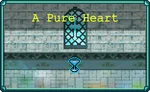 | ||||||||||||||||||||||
불새 코스모 파보네는 현재 영웅들을 무시한 채 구운 씨앗을 먹고 있습니다. 분명 이들 중 누구도 진정으로 선한 의도를 가진 것은 아닙니다. 코스모는 오직 순수한 마음을 가진 자만을 돕기 때문이죠. 쉬문은 사랑과 정의를 위해 싸워줄 진정한 영웅, 수호자를 찾습니다. | ||||||||||||||||||||||
The firebird, Cosmo Pavone, is currently ignoring our heroes and eating toasted seeds. Clearly none of them have truly good intentions, as Cosmo will only aid those of pure heart. She-Moon searches for a real hero, a guardian who will fight for love and justice. | ||||||||||||||||||||||
BGM | ||||||||||||||||||||||
Before Concession | ||||||||||||||||||||||
스테이지 구성 | ||||||||||||||||||||||
| ||||||||||||||||||||||
- 스테이지 구성
불타는 환영에서 코스모 파보네의 관을 열면 해금. 목표는 크리스틴 다베인의 관을 찾아서 여는 것이다. 관은 5시 방향에 있으며 접근 시 해골 천사 다수가 튀어나와 관을 수호한다.
이 맵은 본편 게임의 마그나 예배당 스테이지를 살짝 개조한 것이지만 웨이브는 위의 불타는 환영 스테이지와 마찬가지로 4사신 팀이 합류하는 마그나 예배당 웨이브를 쓰며 관 외엔 아무런 스테이지 아이템도 없다. 또한 시간이 지날수록 점점 적들의 이동 속도가 엄청나게 빨라지며 10분부터는 순식간에 플레이어 옆으로 쫒아와서 몸박을 해댈 정도로 빨라진다. 쉽게 말하면 10분부터는 사신을 포함한 모든 적이 사악한 아르카나의 저주 2배 상태일 때의 이동 속도를 가진 채로 쫒아온다고 생각해야 한다. 경험치 보너스 +100%라는 보정이 걸려있어 성장은 이전 스테이지보다 더 빠른 편이지만, 일반적으로는 20분대에 확실하게 죽는다.
코스모 파보네 30분 생존 도전과제를 여기서 클리어할 거라면 비추천. 차라리 이전 스테이지를 가자. 안 그래도 물몸인 코스모인데 적 이속 강화라는 스테이지 기믹까지 합쳐서 잘못하면 순식간에 부활 스택이 날아간다.
이 맵은 본편 게임의 마그나 예배당 스테이지를 살짝 개조한 것이지만 웨이브는 위의 불타는 환영 스테이지와 마찬가지로 4사신 팀이 합류하는 마그나 예배당 웨이브를 쓰며 관 외엔 아무런 스테이지 아이템도 없다. 또한 시간이 지날수록 점점 적들의 이동 속도가 엄청나게 빨라지며 10분부터는 순식간에 플레이어 옆으로 쫒아와서 몸박을 해댈 정도로 빨라진다. 쉽게 말하면 10분부터는 사신을 포함한 모든 적이 사악한 아르카나의 저주 2배 상태일 때의 이동 속도를 가진 채로 쫒아온다고 생각해야 한다. 경험치 보너스 +100%라는 보정이 걸려있어 성장은 이전 스테이지보다 더 빠른 편이지만, 일반적으로는 20분대에 확실하게 죽는다.
코스모 파보네 30분 생존 도전과제를 여기서 클리어할 거라면 비추천. 차라리 이전 스테이지를 가자. 안 그래도 물몸인 코스모인데 적 이속 강화라는 스테이지 기믹까지 합쳐서 잘못하면 순식간에 부활 스택이 날아간다.
- 해금 요소
- 순수한 마음에서 관을 여세요.보상: 부활, 귀환 스테이지 + 크리스틴 다베인 캐릭터 해금
5.5. 부활, 귀환
The Rebirth, The Return | ||||||||||||||||||||||
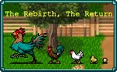 | ||||||||||||||||||||||
불의 힘을 얻은 쉬문은 마침내 프로메테우스적 영웅의 꿈을 실현할 수 있게 되었습니다. 로스트 치킨을 다시 식탁에 올릴수 있게 된거죠. 조리된 음식이 있기를. | ||||||||||||||||||||||
After obtaining the power of fire, She-Moon can finally make her dreams of Promethean heroism come true: bring Roast Chicken back to the table. Let there be cooked food. | ||||||||||||||||||||||
BGM | ||||||||||||||||||||||
Martes de poncle | ||||||||||||||||||||||
스테이지 구성 | ||||||||||||||||||||||
| ||||||||||||||||||||||
- 스테이지 구성
순수한 마음에서 크리스틴 다베인의 관을 열면 해금. 마지막 스테이지이며 목표는 적 30000마리 처치이다. 부 목표로 팔찌, 불의 지팡이, 성수, 파마산 보호구를 얻는 것이 있다. 다만 아무리 잘해도 30000마리 처치가 힘든 편이라 클리어를 2번 해야 할 수도 있다.
이번 맵은 원본 게임의 협동 농장 스테이지를 복사+붙여넣기한 것이다.
가제보 접대 맵 그 자체로 시작하자마자 보이는 팔찌를 들고 닭들을 구워준 뒤 나오는 치킨을 폭식하면 무럭무럭 성장하며 약 10~12분대에 가제보 패시브 능력의 최대 성장 한도까지 도달할 수 있다. 하지만 경험치 -75% 보정 때문에 레벨업이 정말 엄청나게 힘들다.
하이퍼 모드는 안 그래도 성장도 안 되고 5분과 7분대에 열리는 성수를 먹으러 가는 일 외에는 움직일 필요가 없는 스테이지인데 굳이 적 체력을 2배씩이나 늘릴 이유가 없어서 안 키는 게 낫다.
이번 맵은 원본 게임의 협동 농장 스테이지를 복사+붙여넣기한 것이다.
가제보 접대 맵 그 자체로 시작하자마자 보이는 팔찌를 들고 닭들을 구워준 뒤 나오는 치킨을 폭식하면 무럭무럭 성장하며 약 10~12분대에 가제보 패시브 능력의 최대 성장 한도까지 도달할 수 있다. 하지만 경험치 -75% 보정 때문에 레벨업이 정말 엄청나게 힘들다.
하이퍼 모드는 안 그래도 성장도 안 되고 5분과 7분대에 열리는 성수를 먹으러 가는 일 외에는 움직일 필요가 없는 스테이지인데 굳이 적 체력을 2배씩이나 늘릴 이유가 없어서 안 키는 게 낫다.
- 해금 요소
- 닭 30000마리를 굽습니다.보상: 10000 골드
- 불의 지팡이를 찾으세요.
보상: 불의 지팡이 해금 - 팔찌를 찾으세요.
보상: 팔찌 해금 - 성수를 찾으세요.
보상: 성수 해금
6. 문스펠의 유산 (Legacy of the Moonspell)
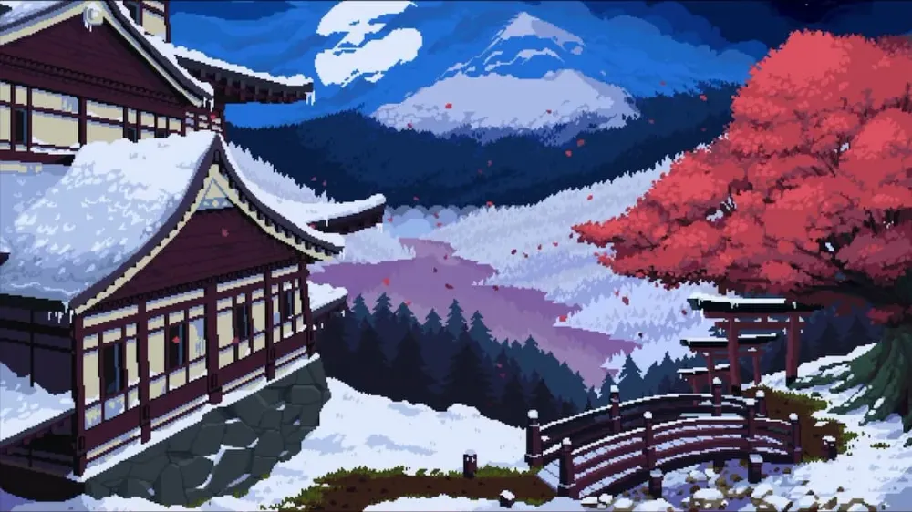
인게임에선 움직이는 일러스트이다.
* 시작 골드 : 10000
* 도전 과제 : 14
* 컬렉션 : 29
사용 가능한 캐릭터 : 미앙, 멘야, 슈토, 바비 온나, 맥코이 오니, 강력한 멘야, 강력한 슈토, 가베트 오니
해금된 무기 : 십자가, 천상의 검, 마나의 노래, 마력의 결정체, 월계수, 유리 판당고, 천상의 장창, 은색 바람, 축제의 바람, 사계절, 고다이 셔플, 밤 소환, 밤 메아리, 신기루 로브, 조도르, 밤의 검, 무라마사, 밀레 볼레 블루, 부 루 볼레, 108 보체
해금된 장신구 : 매혹구, 시금치, 클로버, 촛대, 저주받은 두개골, 주문속박기, 붉은 심장, 복제 반지, 날개
상인에게서 구매 가능한 장신구[15] : 갑옷, 검은 심장, 빈 책, 팔 보호대, 왕관, 돌가면, 티라미수
첫 번째 DLC인 Legacy of the Moonspell 구매 시 해금되는 어드벤처. 위의 두 기본 어드벤처와는 달리 이쪽은 새로 만들어진 웨이브나 맵 등이 꽤 많다.
- 해금 요소
은색 바람을 진화시키세요.
보상: 5000 골드
은색 바람을 진화시키세요.
보상: 5000 골드
- 사계절을 진화시키세요.
보상: 5000 골드
- 밤 소환을 진화시키세요.
보상: 5000 골드
- 신기루 로브를 진화시키세요.
보상: 5000 골드
- 멘야 문스펠로 30분간 생존하세요.
보상: 강력한 멘야 문스펠 해금
- 레벨 80에 도달하세요.
보상: 평면 바자회 스테이지 해금
6.1. 캐슬 그라운드
Castle Grounds | ||||||||||||||||||||
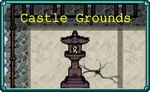 | ||||||||||||||||||||
결정적인 전투가 시작됩니다! 미앙 대 오로치마리오! 일본 만화의 여주인공이 악마 같은 드래곤과 싸우며 1분 넘게 버틸 수 있을까요? | ||||||||||||||||||||
Decisive Battle Begn! Miang vs Orochimario! Can our Shounen heroine muster the mettle to battle the diabolical dragon for more than a minute? | ||||||||||||||||||||
BGM | ||||||||||||||||||||
Legacy of the Moonspell | ||||||||||||||||||||
스테이지 구성 | ||||||||||||||||||||
| ||||||||||||||||||||
- 스테이지 구성
기본 스테이지. 목표는 1분간 생존하는 것이라 매우 간단하다. 노 아르카나로도 그냥 도망만 다니면 1분은 그냥 버틴다.
단 1분 이상부터는 빨리 죽으라는 듯이 대량의 빨간 작은 유령 스웜[16]이 화면을 미친 듯이 휩쓸고 지나가므로 사실상 버틸 수 없다. 게다가 0분대에 등장하는 작은 유령은 정말 찔끔찔끔 나오기 때문에 경험치를 얻는 것조차 힘들고, 1분부터 4분까지 나오는 빨간 작은 유령 스웜은 경험치조차 떨구지 않으므로 성장 자체가 안 된다. 그리고 오로치마리오는 5분이 지나도 즉사하지 않는 데다 첫 플레이 시엔 처치도 불가능하다.
단 1분 이상부터는 빨리 죽으라는 듯이 대량의 빨간 작은 유령 스웜[16]이 화면을 미친 듯이 휩쓸고 지나가므로 사실상 버틸 수 없다. 게다가 0분대에 등장하는 작은 유령은 정말 찔끔찔끔 나오기 때문에 경험치를 얻는 것조차 힘들고, 1분부터 4분까지 나오는 빨간 작은 유령 스웜은 경험치조차 떨구지 않으므로 성장 자체가 안 된다. 그리고 오로치마리오는 5분이 지나도 즉사하지 않는 데다 첫 플레이 시엔 처치도 불가능하다.
- 해금 요소
- 캐슬 그라운드에서 1분간 생존하세요.보상: 신전의 계곡 스테이지 해금
웨이브 목록 (펼치기 · 접기)
- 0분: 작은 유령, 오로치마리오 (보스)
- 1분 ~ 4분: 작은 유령 스웜(빨간 변종)
6.2. 신전의 계곡
Shrine Valley | ||||||||||||||||||||
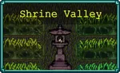 | ||||||||||||||||||||
미앙은 오로치마리오가 성을 정복한 후 간신히 살아남습니다. 복수의 여정은 첫 걸음을 내디디며 시작됩니다. 미앙은 동녘 들판에서 원로 멘야 문스펠의 지도를 구합니다. | ||||||||||||||||||||
Miang barely survives after Orochimario conquers the castle. The trail of vengeance begins with a single step. Miang seeks the guidance of the elder Menya Moonspell in the eastern fields. | ||||||||||||||||||||
BGM | ||||||||||||||||||||
Festive Breeze | ||||||||||||||||||||
스테이지 구성 | ||||||||||||||||||||
| ||||||||||||||||||||
- 스테이지 구성
캐슬 그라운드에서 1분간 생존하면 해금.
주 목표는 4시 방향에 있는 멘야 문스펠의 관을 여는 것이다. 보조 목표로는 밀레 볼레 블루를 찾아서 획득하는 것.
다만 주 목표나 보조 목표나 둘 다 별거 없이 화살표 방향따라 전진하다 보면 금방 찾아낸다. 특히 보조 목표인 밀레 볼레 블루는 그냥 대놓고 길바닥에 떨어져있다. 물론 멘야가 있는 관 근처에 접근하는 순간 고샤도쿠로 1마리가 튀어나와 관을 수호하니 적당한 성장은 해둬야 한다.
특이사항으론 시작하자마자 바로 앞에 가베트 오니 상인 NPC가 있는데, 이 상인은 시금치(40), 검은 심장(40), 갑옷(40), 빈 책(400), 촛대(200), 붉은 심장(40)을 판매한다.
또한 가베트 오니가 있는 곳 바로 위쪽의 붉은 심장을 기준으로, 우측 방향을 향해 일렬로 붉은 심장이 총 5개가 긴 틈을 두고 배치되어 있다. 다만 필드에 배치된 붉은 심장에 접근하면 고샤도쿠로 1마리가 튀어나온다.
기본적으로 모든 문스펠의 유산 DLC 무기들이 처음부터 사용 가능한 상태이기 때문에 이 스테이지에서 은색 바람, 사계절, 밤 소환, 신기루 로브를 장비하고 전부 진화시켜서 도전과제도 달성하고 골드도 빠르게 땡길 수 있으며, 아르카나를 쓰는 플레이라면 치유의 사라반드를 고를 경우 30분 끝날 때까지 놀고 먹을 수 있다.[17] 노 아르카나 플레이라도 DLC 진화 무기들이 밀레 볼레 블루를 제외하면 많이 강력해서 레벨 80 달성은 거뜬하다.
적 웨이브는 문스펠 산 스테이지의 웨이브를 그대로 쓰지만, 극히 일부의 차이점이 있다. 0분대는 작은 유령 대신 히토츠메코즈가 등장하며, 25분에는 오로치마리오가 아닌 거대 츠치구모가 보스로 등장하는데, 오로치마리오 처치 도전과제 때문에 25분에 등장하는 보스를 일부러 바꾼듯하다.
주 목표는 4시 방향에 있는 멘야 문스펠의 관을 여는 것이다. 보조 목표로는 밀레 볼레 블루를 찾아서 획득하는 것.
다만 주 목표나 보조 목표나 둘 다 별거 없이 화살표 방향따라 전진하다 보면 금방 찾아낸다. 특히 보조 목표인 밀레 볼레 블루는 그냥 대놓고 길바닥에 떨어져있다. 물론 멘야가 있는 관 근처에 접근하는 순간 고샤도쿠로 1마리가 튀어나와 관을 수호하니 적당한 성장은 해둬야 한다.
특이사항으론 시작하자마자 바로 앞에 가베트 오니 상인 NPC가 있는데, 이 상인은 시금치(40), 검은 심장(40), 갑옷(40), 빈 책(400), 촛대(200), 붉은 심장(40)을 판매한다.
또한 가베트 오니가 있는 곳 바로 위쪽의 붉은 심장을 기준으로, 우측 방향을 향해 일렬로 붉은 심장이 총 5개가 긴 틈을 두고 배치되어 있다. 다만 필드에 배치된 붉은 심장에 접근하면 고샤도쿠로 1마리가 튀어나온다.
기본적으로 모든 문스펠의 유산 DLC 무기들이 처음부터 사용 가능한 상태이기 때문에 이 스테이지에서 은색 바람, 사계절, 밤 소환, 신기루 로브를 장비하고 전부 진화시켜서 도전과제도 달성하고 골드도 빠르게 땡길 수 있으며, 아르카나를 쓰는 플레이라면 치유의 사라반드를 고를 경우 30분 끝날 때까지 놀고 먹을 수 있다.[17] 노 아르카나 플레이라도 DLC 진화 무기들이 밀레 볼레 블루를 제외하면 많이 강력해서 레벨 80 달성은 거뜬하다.
적 웨이브는 문스펠 산 스테이지의 웨이브를 그대로 쓰지만, 극히 일부의 차이점이 있다. 0분대는 작은 유령 대신 히토츠메코즈가 등장하며, 25분에는 오로치마리오가 아닌 거대 츠치구모가 보스로 등장하는데, 오로치마리오 처치 도전과제 때문에 25분에 등장하는 보스를 일부러 바꾼듯하다.
- 해금 요소
- 신전의 계곡에서 멘야의 관을 찾으세요.보상: 금지된 봉우리 스테이지 + 멘야 문스펠 해금
- 밀레 볼레 블루를 찾으세요.
보상: 가베트 오니 해금
6.3. 금지된 봉우리
Forbidden Peaks | ||||||||||||||||||||
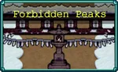 | ||||||||||||||||||||
미앙은 벼룩에 물린 쌍둥이 동생을 찾기 위해 엄청난 역경과 싸워야합니다. 금지된 봉우리에서 후각에 의지해 구불구불한 터널을 따라가며 냄새나는 늑대인간 슈토를 찾아보세요! | ||||||||||||||||||||
To fight such formidable odds, Miang must search for her flea-bitten twin brother. Follow your nose through the twisting tunnels of the Forbidden Peaks to find the stinky wolfman, Syuuto! | ||||||||||||||||||||
BGM | ||||||||||||||||||||
Haze of Night | ||||||||||||||||||||
스테이지 구성 | ||||||||||||||||||||
| ||||||||||||||||||||
* 스테이지 구성
신전의 계곡에서 멘야의 관을 열면 해금.
주 목표는 동굴 안에 있는 슈토의 관을 찾아 여는 것이다. 부가 목표도 딱히 없으며 길도 매우 단순하다. 시작하자마자 왼쪽으로 간 뒤 돌탑 조형물이 보이면 위쪽으로 가서 동굴로 들어간 뒤 갈림길에서 오른쪽 이후 위쪽으로만 쭉 가면 바로 관이 보인다. 관에 접근하자마자 고샤도쿠로 1마리가 튀어나오지만 역시 별거 없다. 하이퍼 모드를 안 키고 이동 속도가 느린 슈토로도 고작 40초 만에 도착할 수 있는 거리에 고샤도쿠로 처리도 얼마 안 걸리므로 실질적인 플레이 타임은 1~2분이다.
동굴 지형이나 촛대, 밤의 검이 있는 위치도 그렇고[18] 본편 게임 문스펠 산 스테이지의 동굴 지형만 똑 떼어놓은 듯한 모양새다.
여전히 적 웨이브는 문스펠 산 스테이지의 웨이브를 그대로 재활용하지만, 신전의 계곡 스테이지와 동일하게 25분 때는 오로치마리오가 보스로 나오지 않는다. 뭣하면 여기서 멘야를 골라서 멘야 30분 생존 도전과제를 미리 달성하는 것도 가능하다. 마침 공짜로 얻을 수 있는 사계절의 진화 요구 장신구인 촛대도 맵에 배치되어 있고 밤의 검도 있기 때문에 이 맵에선 시작 지점에서 6꽉으로 성장을 마친 뒤 7무기+7장신구 체제로 갈 수도 있다.[19] 지옥의 29분 압사 패턴은 주변에 떨어져있는 회중시계들을 일부러 먹지 말고 잔뜩 모아놓은 뒤 29분 때 버티는 게 좋다. 회중시계가 10초간 적을 멈추므로 대략 5~6개 정도면 29분을 안전하게 넘기고 30분에 도달해 멘야 30분 생존 도전과제를 깰 수 있다. 안정성을 원하면 월계수를 들어도 괜찮다.
- 해금 요소
- 금지된 봉우리에서 슈토의 관을 찾으세요.보상: 숨겨진 동굴 스테이지 + 슈토 문스펠 해금
6.4. 숨겨진 동굴
Hidden Cave | ||||||||||||||||||||
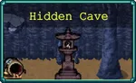 | ||||||||||||||||||||
재앙이 닥쳐옵니다. 동굴 바닥이 무너지고 약간의 불편함을 극복하고 나온 슈토는 오니의 모습으로 변신합니다! 이 숨겨진 공간에 갇힌 여러분은 가공할 괴력을 가진 슈토를 길들여야만 살아남을 수 있습니다. | ||||||||||||||||||||
Catastrophe strikes- the cave floor crumbles and Syuuto is overcome by the slight inconvenience, metamorphosing into his Oni form! Trapped in this hidden chamber, you must tame Megalo Syuuto's unleashed power to survive. | ||||||||||||||||||||
BGM | ||||||||||||||||||||
Hell Night | ||||||||||||||||||||
스테이지 구성 | ||||||||||||||||||||
| ||||||||||||||||||||
* 스테이지 구성
금지된 봉우리에서 슈토의 관을 열면 해금.
주 목표는 시작하자마자 등장하는 보스인 강력한 슈토 문스펠[20]을 처치하는 것이다. 좁은 네모 형태의 지형이며 곳곳에 밤 소환, 뼈 무기와[21] 은두자 프라타 아이템이 배치되어 있다. 부가 목표는 없다.
지형이 나름 단순하고 이동 속도가 엄청나게 빠른 탓에 보스에게 따라잡힐 일이 없다. 계속 도망다니면서 딜을 넣어주면 쉽게 처치한다.[22] 특히 은두자 프라타가 많아 계속해서 빡딜을 넣을 수 있고 시작부터 뼈 풀강, 밤 소환 6업을 달성할 수 있어서 화력 면에서 꿀리지 않아 체력 20000이란 스탯이 무색하게 녹아내린다. 마침 뼈 무기가 활약하기 좋은 스테이지이기도 하다.
이 곳의 적 웨이브는 살짝 다른 편인데 0분대에는 히토츠메코즈만 등장하지만, 그 이후 시간대부터는 거대 오니만 계속 등장한다. 시간을 오래 끈다고 거대 오니가 많이 나오거나 하진 않는다. 1분마다 거대 오니 중 1마리는 진화 상자를 드랍한다.
- 해금 요소
- 숨겨진 동굴에서 강력한 슈토를 처치하세요.보상: 얼어붙은 호수 스테이지 + 강력한 슈토 문스펠 해금
6.5. 얼어붙은 호수
Frozen Lake | ||||||||||||||||||||
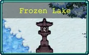 | ||||||||||||||||||||
얼어붙은 호수를 가로질러 길을 만들던 문스펠 일족이 오니가 소환한 클론들의 공격을 받습니다! 문스펠 일족은 얼어붙을만큼 차가운 삼천마리를 물리치고, 바비온나를 차가운 감옥에서 풀어줄 수 있을까요? | ||||||||||||||||||||
Forging a path across a frozen lake, the reunited Moonspell Clan are assailed by Oni-summoned clones! Can the Moonspell Clan defeat the Frozen Three-thousand, and free Babi-Onna from her chilly prison? | ||||||||||||||||||||
BGM | ||||||||||||||||||||
Crystal Allure | ||||||||||||||||||||
스테이지 구성 | ||||||||||||||||||||
| ||||||||||||||||||||
* 스테이지 구성
숨겨진 동굴에서 강력한 슈토를 처치하면 해금.
주 목표는 매드온나 3000마리를 처치하는 것이다. 부가 목표는 없다.
시작 지점에서 아래로 내려가다 오른쪽 아래로 가면 신기루 로브와 매혹구가 배치되어 있고, 거기서 오른쪽으로 조금만 가면 저주받은 두개골 5개가 모여 배치된 곳이 있으며 각 맵의 모서리마다 붉은 심장이 하나씩 총 5개가 배치되어 있다.
적 웨이브는 처음부터 끝까지 매드온나만 등장하며 진화 상자는 4분, 7분, 9분에 하나씩 나온다. 노 아르카나로도 꽤 쉬운 스테이지. 굳이 저주받은 두개골이 없더라도 3000킬은 얼마 안 걸리므로 두개골을 집는 건 선택이다.
- 해금 요소
- 얼어붙은 호수에서 매드 온나 총 3000마리를 처치하세요.보상: 타누키의 숲 스테이지 + 바비 온나 해금
6.6. 타누키의 숲
Tanuki Forest | ||||||||||||||||||||
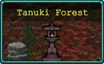 | ||||||||||||||||||||
바비온나는 얼어붙었다가 풀려난뒤, 고향을 되찾으러 가는 여정에서 문스펠 일족에 합류합니다. 숲속을 지나는 문스펠 일족과 바비온나를 까탈스러운 타누키 무리가 시험 삼아 공격합니다. 저건 꼬리로 공격하는 걸까요? 아니면 그냥 반가워서 꼬리를 흔드는 걸까요? | ||||||||||||||||||||
Babi-Onna is freed from the freeze, and joins the Moonspell Clan as they journey to retake their homeland. Their path takes them through the forest, where a team of tricksy Tanuki assail them with a testing trail - is that a tail, or are you just pleased to see me? | ||||||||||||||||||||
BGM | ||||||||||||||||||||
Rumble Kachara | ||||||||||||||||||||
스테이지 구성 | ||||||||||||||||||||
| ||||||||||||||||||||
* 스테이지 구성
얼어붙은 호수에서 매드온나 3000마리를 처치하면 해금.
주 목표는 10분 동안 버티는 것이다. 부가 목표는 없다.
맵이 특이하게 되어있는데 숲속이라는 맵 설명 때문인지 미로 같은 구성의 풀숲 지형이 가득하다. 시작하자마자 양쪽에 클로버, 저주받은 두개골이 하나씩 대놓고 배치되어 있으며, 시작 지점을 기준으로 원형으로 작은 클로버가 하나씩 총 9개가 곳곳에 떨어져있어서 행운 수치를 잔뜩 올릴 수 있으며, 5시 방향으로 약 30초만 이동하면 108 보체 무기가 배치되어 있다. 단 여기에 접근하면 고샤도쿠로 1마리가 튀어나온다.
적 웨이브는 오로지 타누키만 등장하지만, 처음 0분대에는 느리고 체력, 공격력이 약한 타누키만 등장하다가 1분부터 중형 타누키 변종, 2분부터 대형 타누키 변종이 등장하기 시작한다. 진화 상자는 3분, 5분, 8분, 9분에 대형 타누키 중 하나가 떨군다.[23] 또한 어차피 10분간 버티기만 하면 되기 때문에 두개골이나 강화 등에서 저주를 올리는 건 그다지 좋지 않을 수도 있다.
- 해금 요소
- 타누키의 숲에서 10분 동안 생존하세요.보상: 문스펠 산 스테이지 + 맥코이 오니 해금
6.7. 문스펠 산
Mt.Moonspell | ||||||||||||||||
선조의 재대결이 시작됩니다! 마침내 요괴와 오니가 점령한 고향을 되찾기 위해 문스펠 일족이 반격에 나섭니다. 마치 다른 세계에 속한 것 같은 적들로부터 살아남아 여덟 배로 위험한 오로치마리오를 쓰러뜨리세요! | ||||||||||||||||
Ancestral Rematch Begin! At last, the Moonspell Clan strike back to reclaim their home, now overrun by Yokai and Oni. Survive against these otherworldly foes, and strike down the eightfold menace, Orochimario! | ||||||||||||||||
BGM | ||||||||||||||||
Legacy of the Moonspell | ||||||||||||||||
스테이지 구성 | ||||||||||||||||
| ||||||||||||||||
- 스테이지 구성
[맵 지도] {펼치기 * 접기}
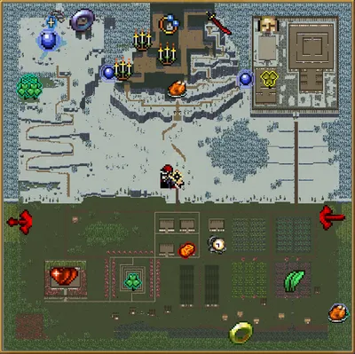
타누키 숲에서 10분간 버티면 해금. 본편 게임의 문스펠 산 스테이지와 완전히 동일하며 일부 스테이지 아이템이 확률에 따라 여러 개가 배치되거나 25분에 오로치마리오가 나오는 것도 그대로 가져왔다.
주 목표는 문스펠 일족의 복수가 스토리인 만큼 25분에 등장하는 오로치마리오를 처치하는 것이다. 부가 목표는 없다. 원본 맵과 똑같은 만큼 똑같이 플레이하다가 오로치가 죽으면 종료하면 된다. 아직 멘야 문스펠 30분 생존 도전과제를 안 깼다면 여기서 달성해도 된다. 다른 30분 제한시간 맵들과는 달리 여기선 메탈리오가 있어서 월계수를 진홍빛 망토로 진화시킬 수 있으므로 29분 지옥의 압사 패턴을 좀 더 버티기 편해진다.
7. 포스카리의 물결 (Tides of Foscari)
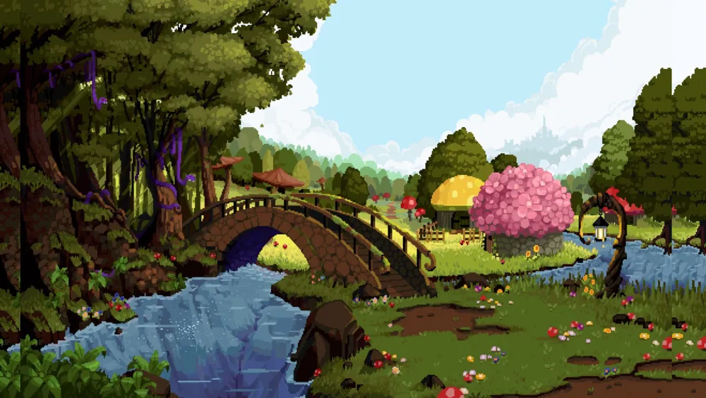
인게임에선 움직이는 일러스트이다.
* 시작 골드 : 15000
* 도전 과제 : 14
* 컬렉션 : 34
사용 가능한 캐릭터 : 썩어가는 구울, 루미네어, 케이타, 마루토, 엘리노어, 새미, 쥬느비에브, 제네비
해금된 무기 : 오망성, 산타 재블린, 마녀의 고양이, 팔찌, 가에야의 시선, 월계수, 마법주문 두루마리, 마법주문 유창본, 마법주문 전능본, 에스키치버, 섬광의 화살, 프리즈마틱 미사일, 그림자 시종, 파티 폭죽
해금된 장신구 : 갑옷, 팔 보호대, 클로버, 왕관, 돌가면, 미치광이의 두개골, 파마산 보호구
상인에게서 구매 가능한 장신구[24] : 시금치, 검은 심장, 붉은 심장, 빈 책, 촛대, 주문속박기, 복제 반지, 티라미수
2번째 DLC인 Tides of Foscari 구매 시 해금되는 어드벤처.
- 해금 요소
- 마법주문 두루마리, 마법주문 유창본, 마법주문 전능본을 통합하세요.
보상: 3000 골드
- 에스키치버를 진화시키세요.
보상: 3000 골드
- 섬광의 화살을 진화시키세요.
보상: 3000 골드
- 가에야의 아바타가 내리는 심판에서 살아남으세요.[25]
보상: 3000 골드
- 레벨 80에 도달하세요.
보상: 평면 바자회 스테이지 해금
7.1. 세계를 먹는 자
The World Eater | ||||||||||||||||||||
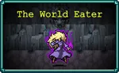 | ||||||||||||||||||||
아득한 기억의 안개 속, 한때 끝없는 의지를 지닌 야망 가득한 마녀가 괴물같은 힘을 추구했습니다. 그 의식을 지켜본 유일한 존재는 썩어가는 하수인들이었으며, 그들은 침입자를 모두 막아섰죠. | ||||||||||||||||||||
Once upon a time, in the mists of time, an ambitious witch of great will seeks to claim a monstrous power. The only witnesses to this rite were her mouldering minions who held back all interlopers. | ||||||||||||||||||||
BGM | ||||||||||||||||||||
Ashes of the Banished | ||||||||||||||||||||
| ||||||||||||||||||||
- 스테이지 구성
기본 스테이지. 목표는 중앙에 있는 아군 NPC 쥬느비에브가 보유한 그림자 시종을 진화시켜야 한다.
쥬느비에브가 죽어도 게임 오버되지 않고 관이 생기는데, 이 관은 시간이 지날수록 관에 그려진 십자가가 점점 주황색으로 색이 채워지고 전부 다 채워지면 부활한다. 하지만 적이 관에 접촉하면 몸집이 점점 커지고 능력치가 상승한다.
시작 캐릭터가 쓰기 힘든 썩어가는 구울인 데다 적이 시작부터 매우 많이 몰려오는 편으로, 처음 또는 초반에는 쥬느비에브의 패시브 능력을 한 번 터뜨리고 시작하는 게 낫다.
악마성 시리즈 콜라보 DLC 이후에 등장한 어드벤처라 그런지 코옵 멀티플레이와 악마성 DLC의 비밀 캐릭터처럼 플레이어와 컴퓨터 소유의 쥬느비에브 둘 다 자기 자신만의 무기와 장신구를 선택할 수 있으며, 진화는 다른 캐릭터가 해당 캐릭터에게 필요한 보유하고 있더라도 조건만 맞으면 진화가 가능하다.[26] 그 때문에 플레이어는 시작하자마자 위에 배치된 미치광이의 두개골을 집은 뒤 두개골 업글에 집중하면 되고, 쥬느비에브쪽은 그림자 시종 풀업에만 신경 쓰면 된다. 하지만 둘 다 기본 무기가 나쁘기 때문에 초반부터 이러긴 힘들고 성장해서 다른 무기들을 장비하고 난 뒤에 시종에 신경 쓰는 게 좋다.
쥬느비에브가 죽어도 게임 오버되지 않고 관이 생기는데, 이 관은 시간이 지날수록 관에 그려진 십자가가 점점 주황색으로 색이 채워지고 전부 다 채워지면 부활한다. 하지만 적이 관에 접촉하면 몸집이 점점 커지고 능력치가 상승한다.
시작 캐릭터가 쓰기 힘든 썩어가는 구울인 데다 적이 시작부터 매우 많이 몰려오는 편으로, 처음 또는 초반에는 쥬느비에브의 패시브 능력을 한 번 터뜨리고 시작하는 게 낫다.
악마성 시리즈 콜라보 DLC 이후에 등장한 어드벤처라 그런지 코옵 멀티플레이와 악마성 DLC의 비밀 캐릭터처럼 플레이어와 컴퓨터 소유의 쥬느비에브 둘 다 자기 자신만의 무기와 장신구를 선택할 수 있으며, 진화는 다른 캐릭터가 해당 캐릭터에게 필요한 보유하고 있더라도 조건만 맞으면 진화가 가능하다.[26] 그 때문에 플레이어는 시작하자마자 위에 배치된 미치광이의 두개골을 집은 뒤 두개골 업글에 집중하면 되고, 쥬느비에브쪽은 그림자 시종 풀업에만 신경 쓰면 된다. 하지만 둘 다 기본 무기가 나쁘기 때문에 초반부터 이러긴 힘들고 성장해서 다른 무기들을 장비하고 난 뒤에 시종에 신경 쓰는 게 좋다.
- 해금 요소
- 썩어가는 구울로 쥬느비에브가 "세계를 먹는 자"에서 그림자 시종을 진화시키도록 도와주세요.보상: 호수의 수호자 스테이지 해금
웨이브 목록 (펼치기 · 접기)
- 0분: 컬드
- 1분: 컬드, 피의 이끼, 상실의 머리(이벤트), 부패 구울(보스, 진화 상자)
- 2분: 레두사 머리, 컬드, 피의 이끼(이벤트)
- 3분: 컬드, 피의 이끼, 레두사 머리, 붉은 머리 해파리 스웜(이벤트), 거대 레두사 머리(보스, 진화 상자)
- 4분: 레두사 머리, 컬드, 피의 이끼
- 5분: 피의 이끼, 부패 구울, 거대 레두사 머리(보스, 진화 상자)
- 6분: 컬드, 부패 구울, 피의 이끼(이벤트)
- 7분: 컬드, 레두사 머리, 불타는 해골, 붉은 머리 해파리 스웜(이벤트), 거대 불타는 해골(보스, 진화 상자)
- 8분: 흐린 기억 속의 신앙충, 스넉
- 9분: 해골 미트볼, 피의 이끼, 부패 구울 스웜(이벤트), 거대 레두사 머리(보스, 진화 상자)
- 10분: 해골 미트볼, 피의 이끼, 상실의 머리, 부패 구울 스웜(이벤트), 거대 해골 미트볼(보스, 진화 상자)
- 11분: 흐린 기억 속의 신앙충, 스넉, 피의 이끼(이벤트)
- 12분: 흐린 기억 속의 신앙충, 상실의 머리, 부패 구울 스웜(이벤트), 블라인더(이벤트), 거대 해골 미트볼(보스, 진화 상자)
- 13분: 팔로와, 레두사 머리, 부패 구울
- 14분: 냉혹한 컬드, 팔로와
7.2. 호수의 수호자
The Guardian of the Lake | |||||||||||||||||||||||
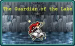 | |||||||||||||||||||||||
옛날 옛적, 다가오는 위기를 감지한 고귀한 마녀 루미네어는 세상을 종말의 호수처럼 덮치려는 악의 물결을 봉인하기 위해 서둘렀습니다. 서둘러라, 선한 마녀여. 그렇지 않으면 우리는 멸망할 지어다. | |||||||||||||||||||||||
Once upon a time, sensing an oncoming event of great import and consequence, the noble witch Luminaire rushes to seal the tide of evil poised to roll over the world like an apocalyptic flood. Make haste, good witch, or we perish. | |||||||||||||||||||||||
BGM | |||||||||||||||||||||||
The Heart of the World | |||||||||||||||||||||||
| |||||||||||||||||||||||
- 스테이지 구성
세상을 먹는 자에서 쥬느비에브의 그림자 시종을 진화시키면 해금. 목표는 프리즈마틱 미사일을 진화시키는 것이다.
이 맵은 카를로 카트 같은 스테이지처럼 모든 아이템이 자동으로 왼쪽으로 강제 스크롤되는데, 카를로 카트와는 달리 지나간 아이템은 일정 시간이 지나면 다시 우측을 통해 되돌아온다.
시작하자마자 여러 번 레벨업을 하고 시작하는데 그만큼 적이 초반부터 엄청나게 튼튼한 적들이 나온다. 그래도 못 버틸 정도는 아니며 루미네어 캐릭터 특성상 부활하면 묵주를 터뜨리면서 일시적으로 강해지므로 충분히 버티면서 성장할 수 있다. 이전 스테이지보단 여유가 있어서 에스키치버나 섬광의 화살 진화 도전과제를 미리 달성하는 것도 가능하다.
이 맵은 카를로 카트 같은 스테이지처럼 모든 아이템이 자동으로 왼쪽으로 강제 스크롤되는데, 카를로 카트와는 달리 지나간 아이템은 일정 시간이 지나면 다시 우측을 통해 되돌아온다.
시작하자마자 여러 번 레벨업을 하고 시작하는데 그만큼 적이 초반부터 엄청나게 튼튼한 적들이 나온다. 그래도 못 버틸 정도는 아니며 루미네어 캐릭터 특성상 부활하면 묵주를 터뜨리면서 일시적으로 강해지므로 충분히 버티면서 성장할 수 있다. 이전 스테이지보단 여유가 있어서 에스키치버나 섬광의 화살 진화 도전과제를 미리 달성하는 것도 가능하다.
- 해금 요소
- 루미네어로 제한 시간 내에 "호수의 수호자"에서 프리즈마틱 미사일을 진화시키세요.보상: 교활한 검객 스테이지 해금
웨이브 목록 (펼치기 · 접기)
- 0분: 불타는 해골
- 1분: 우물의 지배자, 거대 냉혹한 컬드(보스, 진화 상자)
- 2분: 우물의 지배자, 축축한 뉴글스
- 3분: 축축한 뉴글스, 붉은 머리 해파리 스웜(이벤트), 거대 에드나(보스, 진화 상자)
- 4분: 우물의 지배자, 팔로와, 붉은 머리 해파리(이벤트)
- 5분: 팔로와, 거대 우물의 지배자(보스, 진화 상자)
- 6분: 흐린 기억 속의 신앙충
- 7분: 냉혹한 컬트, 거대 냉혹한 컬드(보스, 진화 상자)
- 8분: 해골 미트볼, 축축한 뉴글스, 거대 해골 미트볼(보스, 진화 상자)
- 9분: 에드나, 우물의 지배자, 냉혹한 컬트(이벤트), 거대 마론나 메아(보스, 진화 상자)
- 10분: 포모리안, 포모리안(Elatha) (보스, 진화 상자)
- 11분: 축축한 뉴글스, 영광의 장갑
- 12분: 마론나 메아, 영광의 장갑, 거대 마론나 메아(보스, 진화 상자)
- 13분: 거대 레두사 머리, 거대 불타는 해골
- 14분: 거대 해골 미트볼, 거대 팔로와
The Sly Swashbuckler | ||||||||||||||||||||
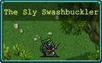 | ||||||||||||||||||||
옛날 옛적에 케이타가 졸고 있었습니다. 학우들이 화려하게 차려입고 졸업장을 받는 동안, 케이타는 격식을 거부하고 호수의 장난기 넘치는 임프, 정령들과 어울리며 시간을 보냈습니다. | ||||||||||||||||||||
BGM | ||||||||||||||||||||
Hide and Steal | ||||||||||||||||||||
| ||||||||||||||||||||
- 스테이지 구성
호수의 수호자에서 프리즈마틱 미사일을 진화시키면 해금. 목표는 레벨 30 달성이며 시작 시 마늘 효과가 있는 언덕배기 트로우 추종자와 적 어그로 효과가 있는 브라우니 추종자를 데리고 시작한다.
레벨 30 달성은 너무나도 쉬우므로 달성한 뒤에 스테이지를 나오면 된다.
맵 자체는 새로운 걸 쓰지만 적 웨이브는 Foscari 호수 스테이지의 웨이브를 그대로 사용한다. 25분에 오로치마리오가 안 나오게끔 수정되어 있던 문스펠의 유산 어드벤처와는 달리, 여기서는 25분에 가에야의 아바타가 나오는 것도 수정되지 않아서 여기서 가에야의 아바타를 처치하는 도전 과제도 달성할 수 있다.
시작 지점 주변에는 작은 클로버가 하나씩 총 4개가 배치되어 있고, 아래쪽으로 가면 미로가 나오는데 이 미로는 곳곳에 1000 골드가 배치되어 있으며 끝부분엔 골드 핑거 1개가 배치되어 있다.
한편 6시 방향에 새미가 있다는 알림이 계속 뜰텐데, 이 새미는 맵 밖에 있다. 새미에게 접근하려면 먼저 협동 농장 스테이지에서 얻을 수 있는 유물인 "가운데에 시계가 박힌 로스트 치킨"을 얻어서 게임 배속을 건드려야한다. 게임 배속을 최대로 늘린 뒤 그대로 벽을 뚫으면 된다.[28] 단 이 새미는 해금과 관련된 요소가 전혀 없는 그냥 상인 NPC이라 별 의미는 없다.
레벨 30 달성은 너무나도 쉬우므로 달성한 뒤에 스테이지를 나오면 된다.
맵 자체는 새로운 걸 쓰지만 적 웨이브는 Foscari 호수 스테이지의 웨이브를 그대로 사용한다. 25분에 오로치마리오가 안 나오게끔 수정되어 있던 문스펠의 유산 어드벤처와는 달리, 여기서는 25분에 가에야의 아바타가 나오는 것도 수정되지 않아서 여기서 가에야의 아바타를 처치하는 도전 과제도 달성할 수 있다.
시작 지점 주변에는 작은 클로버가 하나씩 총 4개가 배치되어 있고, 아래쪽으로 가면 미로가 나오는데 이 미로는 곳곳에 1000 골드가 배치되어 있으며 끝부분엔 골드 핑거 1개가 배치되어 있다.
한편 6시 방향에 새미가 있다는 알림이 계속 뜰텐데, 이 새미는 맵 밖에 있다. 새미에게 접근하려면 먼저 협동 농장 스테이지에서 얻을 수 있는 유물인 "가운데에 시계가 박힌 로스트 치킨"을 얻어서 게임 배속을 건드려야한다. 게임 배속을 최대로 늘린 뒤 그대로 벽을 뚫으면 된다.[28] 단 이 새미는 해금과 관련된 요소가 전혀 없는 그냥 상인 NPC이라 별 의미는 없다.
- 해금 요소
- 케이타로 "교활한 검객"에서 30레벨을 달성하세요.보상: 백전불패의 챔피언 스테이지 해금
7.4. 백전불패의 챔피언
The Undefeated Champion | ||||||||||||||||||||
옛날 옛적, 한 용맹한 전사가 아카데미 졸업을 앞두고 매일의 훈련을 수행하고 있었습니다. 어차피 호수 주변 나무들은 항상 가지치기가 필요하니까요. 이 모든 것이 붉은 검객, 전설적인 원예 챔피언에게는 하루 일과일 뿐이었습니다. | ||||||||||||||||||||
Once upon a time, a doughty warrior faces his daily training routine just before his graduation from the Academy. The trees in Lake are always up for a pruning anyway. All in a day’s work for the Red Swordsman. | ||||||||||||||||||||
BGM | ||||||||||||||||||||
Slaying Dragons | ||||||||||||||||||||
| ||||||||||||||||||||
- 스테이지 구성
교활한 검객에서 케이타로 레벨 30를 달성하면 해금. 목표는 레벨 30 달성이다.
시작 시 마루토 컷츠 외형을 한 추종자 2명을 얻는데 3레벨 에스키치버를 사용하며 레벨업을 하면 5레벨 에스카치버를 쓰므로 강력하다.
이번 맵도 사각형 형태의 새로운 맵을 쓰지만 맵 구성은 단순하다. 시작 지점 주변에 작은 클로버 2개가 있고 11시와 5시 방향에 흡입기가 하나씩 배치되어 있으며 거리도 멀지 않다.
맵의 적 웨이브 구성은 Foscari 호수 스테이지의 웨이브를 살짝 수정한 것이다. 진화 상자는 7분부터 나온다. 그리고 이 맵은 매 1분마다 보스가 나오게 되어 있으며 다수의 보스가 한꺼번에 등장한다. 하지만 모든 보스가 상자를 주진 않고 일부 개체만 상자를 떨구게 되어 있다. 주로 매 1분 지나자마자 즉시 등장하는 개체만 상자를 떨구며 웨이브 중간에 뒤늦게 튀어나오는 거대 변종들은 아무것도 주지 않는다.
20분을 전부 버틸 경우 사신이 공격으로 죽지 않는 추종자만을 따라다니는 문제가 있다.
시작 시 마루토 컷츠 외형을 한 추종자 2명을 얻는데 3레벨 에스키치버를 사용하며 레벨업을 하면 5레벨 에스카치버를 쓰므로 강력하다.
이번 맵도 사각형 형태의 새로운 맵을 쓰지만 맵 구성은 단순하다. 시작 지점 주변에 작은 클로버 2개가 있고 11시와 5시 방향에 흡입기가 하나씩 배치되어 있으며 거리도 멀지 않다.
맵의 적 웨이브 구성은 Foscari 호수 스테이지의 웨이브를 살짝 수정한 것이다. 진화 상자는 7분부터 나온다. 그리고 이 맵은 매 1분마다 보스가 나오게 되어 있으며 다수의 보스가 한꺼번에 등장한다. 하지만 모든 보스가 상자를 주진 않고 일부 개체만 상자를 떨구게 되어 있다. 주로 매 1분 지나자마자 즉시 등장하는 개체만 상자를 떨구며 웨이브 중간에 뒤늦게 튀어나오는 거대 변종들은 아무것도 주지 않는다.
20분을 전부 버틸 경우 사신이 공격으로 죽지 않는 추종자만을 따라다니는 문제가 있다.
- 해금 요소
- 마루토로 "백전불패의 챔피언"에서 30레벨을 달성하세요.보상: 스타 제자 스테이지 해금
웨이브 목록 (펼치기 · 접기)
- 0분: 촘포
- 1분: 촘포, 브라우니, 갈로트리스(이벤트)
- 2분: 촘포, 세푸스, 새미(이벤트), 갈로트리스(보스, 일반 상자)
- 3분: 촘포, 브라우니, 세푸스, 갈로트리스(이벤트, 총 3마리)
- 4분: 언덕배기 트로우, 바다 트로우, 브라우니, 갈로트리스(보스, 일반 상자), 거대 넛멕(보스, 상자 X) 거대 갈로트리스(보스, 상자 X)
- 5분: 세푸스, 거대 갈로트리스(보스, 일반 상자), 거대 갈로트리스 2(보스, 아르카나 상자)
- 6분: 세푸스, 언덕배기 트로우, 와이즈파케 스웜, 갈로트리스(보스, 일반 상자), 거대 갈로트리스(이벤트), 거대 넛멕(이벤트)
- 7분: 세푸스, 와이즈파케, 거대 넛멕(보스, 진화 상자), 거대 넛멕(보스, 상자 X)
- 8분: 램무가, 와이즈파케, 갈로트리스(보스, 진화 상자), 거대 넛멕(보스, 상자 X), 거대 갈로트리스(상자 X)
- 9분 : 넛멕, 불비오, 황혼의 광대 샘(보스, 진화 상자), 광대 스웜(이벤트)
- 10분 : 불비오, 램무가, 거대 갈로트리스(보스, 진화 상자){총 3마리지만 하나만 상자를 드랍}
- 11분 : 넛멕, 불비오, 갈로트리스(보스, 진화 상자), 거대 황혼의 광대 샘(이벤트), 거대 갈로트리스(이벤트), 거대 넛멕(이벤트)
- 12분 : 황혼의 광대 샘, 뉴글스, 거대 황혼의 광대 샘(보스, 진화 상자), 거대 불비오(이벤트)
- 13분 : 황혼의 광대 샘, 램무가, 거대 불비오(보스, 진화 상자), 거대 황혼의 광대 샘(이벤트), 거대 넛멕(이벤트)
- 14분 : 브라우니, 크로시프리지토르, 노아담, 거대 램무가(보스, 진화 상자), 거대 황혼의 광대 샘(이벤트)
- 15분 : 흐린 기억속의 신앙충, 거대 흐린 기억속의 신앙충(보스, 진화 상자), 스넉 스웜(이벤트)
- 16분 : 붉은 촘포, 거대 녹색 기사(보스, 진화 상자)
- 17분 : 녹색 기사, 거대 녹색 기사(보스, 진화 상자), 거대 불비오(이벤트), 거대 황혼의 광대 샘(이벤트)
- 18분 : 평범한 노파, 녹색 기사, 거대 녹색 기사(보스, 진화 상자), 거대 램무가(이벤트)
- 19분: 거대 녹색 기사
7.5. 스타 제자
The Star Pupil | ||||||||||||||||||||
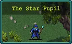 | ||||||||||||||||||||
옛날 옛적, 평범한 여름날 아침. 한 총명한 젊은 마법사가 Foscari 아카데미를 우수한 성적으로 졸업했습니다. 공식 졸업장을 품에 안고 호수 속으로 들어가 노움, 요정들과 함께 마법 장난을 즐기기로 했습니다. | ||||||||||||||||||||
Once upon a time, on a normal summer morning, a bright young mage graduated from Foscari Academy with flying colours. With an official diploma tucked under her arm, she ventures into Lake to play magic tricks with the gnomes and fairies. | ||||||||||||||||||||
BGM | ||||||||||||||||||||
An Introduction to Sorcery | ||||||||||||||||||||
| ||||||||||||||||||||
- 스테이지 구성
백전불패의 챔피언에서 마루토로 레벨 30를 달성하면 해금. 목표는 레벨 30 달성이다.
맵은 완전히 새로운 걸 쓰며 맵에는 장신구가 배치되어있는데, 주로 시작 지점 바로 좌측에 왕관 하나가 고정으로 배치되고, 시작 지점에서 아래로 쭉 내려간 뒤 서쪽으로 가면 나오는 서쪽 지역[29]에 날개 하나, 시작 지점에서 바로 오른쪽 아래의 왕관은 확률적으로 배치된다. 시작 지역의 왕관들은 접근 시 버섯맨이 5마리가 튀어나오며, 날개는 버섯맨 15마리가 튀어나온다.
단 맵은 새로운 걸 쓰지만 웨이브 자체는 교활한 검객 스테이지처럼 기존 Foscari 호수의 웨이브를 그대로 사용한다.
맵은 완전히 새로운 걸 쓰며 맵에는 장신구가 배치되어있는데, 주로 시작 지점 바로 좌측에 왕관 하나가 고정으로 배치되고, 시작 지점에서 아래로 쭉 내려간 뒤 서쪽으로 가면 나오는 서쪽 지역[29]에 날개 하나, 시작 지점에서 바로 오른쪽 아래의 왕관은 확률적으로 배치된다. 시작 지역의 왕관들은 접근 시 버섯맨이 5마리가 튀어나오며, 날개는 버섯맨 15마리가 튀어나온다.
단 맵은 새로운 걸 쓰지만 웨이브 자체는 교활한 검객 스테이지처럼 기존 Foscari 호수의 웨이브를 그대로 사용한다.
- 해금 요소
- 엘리노어로 "스타 제자"에서 30레벨을 달성하세요.보상: Tides of the Foscari 스테이지 해금
7.6. Foscari의 물결
Tides of the Foscari | ||||||||||||||||||||
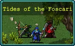 | ||||||||||||||||||||
오래전 어느 날, Foscari의 각 기숙사에서 한 명씩, 학생 세 명이 신화적 상상력으로 빚어낸 생명체가 득실대는 숲(호수라고 부르는)으로 용감하게 여행을 떠납니다. 모두 철딱서니 없게 아무런 방해도 받지 않고 환상적인 모험을 즐기고 싶었죠. | ||||||||||||||||||||
Once upon a time, three students, one from each of the houses of Foscari, brave a journey into a forest (called Lake) stuffed with mythological creatures, all to have a jolly adventure, with absolutely nothing interrupting the whimsy. | ||||||||||||||||||||
BGM | ||||||||||||||||||||
Tides of the Foscari | ||||||||||||||||||||
| ||||||||||||||||||||
- 스테이지 구성
스타 제자에서 엘리노어로 레벨 30를 달성하면 해금. 목표는 30분 생존이다.
문스펠의 유산 어드벤처처럼 기존 Foscari 호수의 맵과 웨이브를 그대로 사용한다. 대신 이 맵에선 엘리노어, 마루토, 케이타 추종자가 따라다니며 도와준다.[30] 첫 번째 맵의 추종자 방식을 사용하므로, 추종자들도 적의 공격을 받는다. 대신 초반을 넘길경우 성장이 오히려 더 가속되니 기존 맵보다 훨씬 더 쉽다. 노 상점 플레이라면 오히려 세 캐릭터에게 끼워줄 무기와 장신구 종류가 부족하다. 위대한 기념제는 물론 일반적으론 등장 확률이 1%라 보기도 힘든 파티 폭죽까지 얻을 수 있게 된다.
기존 Foscari 호수 맵에서 엘리노어를 해금할 수 있었던 11시 방향 마을 구역의 관에서는 새미를 해금할 수 있는데, 다음 스테이지의 해금 요소를 클리어하려면 무조건 해야 한다.
문스펠의 유산 어드벤처처럼 기존 Foscari 호수의 맵과 웨이브를 그대로 사용한다. 대신 이 맵에선 엘리노어, 마루토, 케이타 추종자가 따라다니며 도와준다.[30] 첫 번째 맵의 추종자 방식을 사용하므로, 추종자들도 적의 공격을 받는다. 대신 초반을 넘길경우 성장이 오히려 더 가속되니 기존 맵보다 훨씬 더 쉽다. 노 상점 플레이라면 오히려 세 캐릭터에게 끼워줄 무기와 장신구 종류가 부족하다. 위대한 기념제는 물론 일반적으론 등장 확률이 1%라 보기도 힘든 파티 폭죽까지 얻을 수 있게 된다.
기존 Foscari 호수 맵에서 엘리노어를 해금할 수 있었던 11시 방향 마을 구역의 관에서는 새미를 해금할 수 있는데, 다음 스테이지의 해금 요소를 클리어하려면 무조건 해야 한다.
- 해금 요소
- 엘리노어, 마루토, 케이타로 구성된 파티원과 함께 "Foscari의 물결"에서 30분 동안 살아남으세요.보상: 진정한 공포 스테이지 해금
- "Foscari의 물결"에서 금지된 관을 찾으세요.보상: 새미 캐릭터 해금
7.7. 진정한 공포
The True Horror | ||||||||||||||||||||
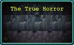 | ||||||||||||||||||||
그리고 그들은 모두 살았습니다. 행복하게. 오래도록. 영원히. | ||||||||||||||||||||
And they all lived. Happily. Ever. After. | ||||||||||||||||||||
BGM | ||||||||||||||||||||
The World Eater | ||||||||||||||||||||
| ||||||||||||||||||||
- 스테이지 구성
Foscari의 물결에서 30분 동안 생존하면 해금. 목표는 30분 생존...인데 해금 요소에 따라 목적이 살짝 다르다.
첫 해금 요소인 진정한 공포로 "진정한 공포"에서 모든 것을 집어삼키세요가 애매할 텐데, 정답은 스테이지 썸네일의 왼쪽 아래 부분에 살짝 얼굴만 내밀고 있는 새미로, 이전 스테이지에서 새미를 해금한 뒤, 새미 캐릭터로 이곳에 들어와서 약 5초간 대기한 뒤 나오면 바로 달성된다.새미가 제네비보다 더한 진정한 공포였다는 소리가 된다
그 후 마지막 해금 요소인 쥬느비에브로 30분 생존은 제한 시간이 30분이라면 어떤 어드벤처 맵이든 상관없다.
첫 해금 요소가 살짝 특이한 것 외에는 나머지 요소는 기존 포스카리 심연 스테이지와 완전히 동일하다.
한편 문스펠의 유산 어드벤처와 더불어 스테이지가 총 7개인 어드벤처인데, 어째 문스펠의 유산과는 달리 챕터 7(Chapter 7)로 표시되지 않고 그냥 ???으로 표시된다.
첫 해금 요소인 진정한 공포로 "진정한 공포"에서 모든 것을 집어삼키세요가 애매할 텐데, 정답은 스테이지 썸네일의 왼쪽 아래 부분에 살짝 얼굴만 내밀고 있는 새미로, 이전 스테이지에서 새미를 해금한 뒤, 새미 캐릭터로 이곳에 들어와서 약 5초간 대기한 뒤 나오면 바로 달성된다.
그 후 마지막 해금 요소인 쥬느비에브로 30분 생존은 제한 시간이 30분이라면 어떤 어드벤처 맵이든 상관없다.
첫 해금 요소가 살짝 특이한 것 외에는 나머지 요소는 기존 포스카리 심연 스테이지와 완전히 동일하다.
한편 문스펠의 유산 어드벤처와 더불어 스테이지가 총 7개인 어드벤처인데, 어째 문스펠의 유산과는 달리 챕터 7(Chapter 7)로 표시되지 않고 그냥 ???으로 표시된다.
- 해금 요소
- 진정한 공포로 "진정한 공포"에서 모든 것을 집어삼키세요.보상: 쥬느비에브 캐릭터 해금
- 쥬느비에브로 30분간 생존하세요.보상: 제네비 캐릭터 해금
8. 긴급 회의 (Emergency Meeting)
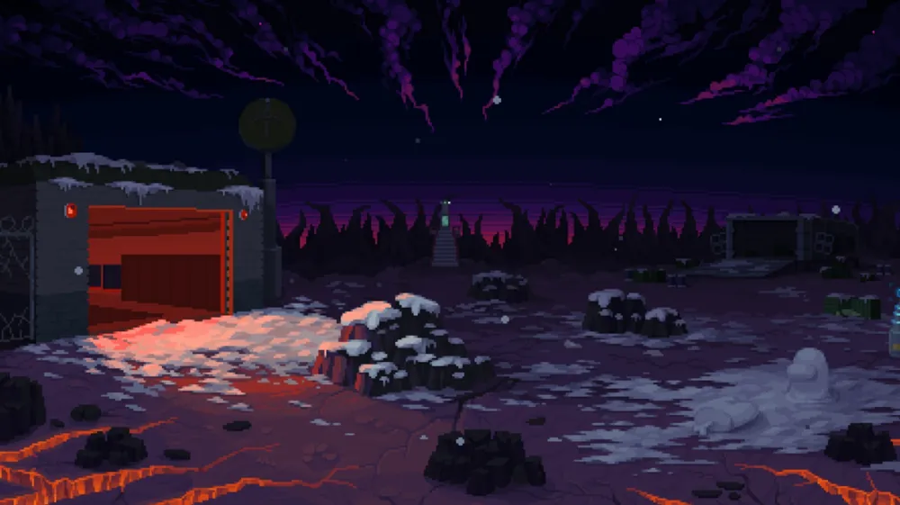
인게임에선 움직이는 일러스트이다.
* 시작 골드 : 15000
* 도전 과제 : 19
* 컬렉션 : 34
사용 가능한 캐릭터 : 크루원 디노, 기술자 지노, 유령 리노, 형상 변환자 니노, 보호자 피나, 임포스터 리나, 과학자 미나, 말, 강력한 임포스터 리나, 젠나로 벨파에제, 푸냘라 프로볼라, 암브로조 경
해금된 무기 : 단검, 천 개의 칼날, 피에라 데 투펠로, 에잇 더 스패로우, 피에라지, 라 로바, 신고! 긴급 회의, 행운의 카드긁기, 교차된 전선, 생명 징후 스캔, 초자연적 스캔, 오락가락 환풍구, 부당한 방출, 파편 파괴, 소행성 파괴, 샤프 메롱, 임포스메롱, 과학 암석, 로켓 과학, 모자
해금된 장신구 : 미니 크루원, 미니 임포스터, 미니 형상 변환자, 미니 기술자, 미니 유령, 미니 과학자, 미니 보호자, 미니 말, 시금치, 갑옷, 빈 책, 복제 반지, 클로버
상인에게서 구매 가능한 장신구[31] : 날개, 검은 심장, 매혹구, 붉은 심장, 왕관, 촛대, 돌가면, 미치광이의 두개골, 팔 보호대, 주문속박기, 티라미수
3번째 DLC인 Emergency Meeting 구매 시 해금되는 어드벤처. 마지막 스테이지를 제외한 모든 맵이 원본 Polus 레플리카와는 전혀 다른, 각자 새롭게 구성된 적 웨이브가 짜여져있어 재미용으로 30분 버티기를 시도할 경우 그럭저럭 해볼 만하다.
- 해금 요소
- 의심스러워 보이는 적 6000마리를 처치하세요.
보상: 말 해금
- 총 한 쌍을 찾으세요.[32]
보상: 푸냘라 프로볼라 해금
- 행운의 카드긁기를 진화시키세요.
보상: 10000 골드
- 과학 암석을 진화시키세요.
보상: 10000 골드
- 오락가락 환풍구를 진화시키세요.
보상: 10000 골드
- 생명 징후 스캔을 진화시키세요.
보상: 10000 골드
- 레벨 80에 도달하세요.
보상: 평면 바자회 스테이지 해금
8.1. 회의 소집
Meeting Called | ||||||||||||||||||||
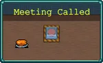 | ||||||||||||||||||||
레드가 긴급 회의에 소집되었지만 아무도 없는데... 무슨 일이죠? 문은 왜 잠겨있는 거고요? 회의실에는 원래 이렇게 쓰레기통이 많았나요? 누군가 이 난장판을 보고해야 해요! | ||||||||||||||||||||
Red has been called to an Emergency Meeting, but nobody else is here... what's going on? Why have the doors locked? And were there always so many bins in the meeting room? Someone needs to report this mess! | ||||||||||||||||||||
BGM | ||||||||||||||||||||
Hide and Survive | ||||||||||||||||||||
스테이지 구성 | ||||||||||||||||||||
| ||||||||||||||||||||
기본 스테이지. 목표는 신고! 무기를 진화시키는 것이며 부가 목표로 20분 동안 생존하는 것이다.
맵 구조는 원본 Polus 레플리카 맵의 지도 유물이 있던 회의실 시설을 살짝 개조한 것이며, 맵 설명처럼 맵 전체에 계속해서 호옥시나가 스폰되기 때문에 적 스폰을 원활하게 하려면 이들을 주기적으로 청소해 줄 필요가 있다. 하지만 호옥시나가 HP x 레벨 스킬을 보유하고 있어서 갈수록 점점 튼튼해지는 게 살짝 짜증날 수 있다.
맵에는 신고! 2개와 샤프 메롱, 그리고 미니 크루원 장신구가 배치되어 있다. 그러므로 시작하자마자 오른쪽 아래 구석에 있는 신고!를 먹고 바로 문 앞에 있는 크루원 장신구를 먹은 뒤, 왼쪽 위의 회의실로 달려서 신고! 레벨 3을 찍고 아래쪽의 샤워실로 가서 샤프 메롱을 얻어주면 기본 세팅을 끝낼 수 있다.
단검, 피에라 데 투펠로, 에잇 더 스패로우 등이 계속해서 선택창에 나올 텐데, 문제는 이걸 진화시킬 방법이 없다는 점이다.[33] 팔 보호대와 티라미수는 상인 NPC에게서 돈 주고 구매해야 되는데 아직 첫 플레이라 상점이고 뭐고 없어서 이것들은 그냥 쓰레기다. 라 로바도 비슷한 이유로 진화도 없고 암브로조 경이 써야 좋은 무기라서 차라리 도전과제 해금도 할 겸 진화 기댓값이라도 있는 어몽어스 팀의 무기들을 집는 게 좋다. 다행히도 고성능 장신구인 복제 반지와 빈 책이 기본 해금 장신구이기 때문에 이 두 장신구는 비교적 쉽게 볼 수 있다.
눈에 띄는 점으로는 30분짜리 기본 스테이지만 적 웨이브 구성이 다르다. 이 어드벤처에서만 볼 수 있는 적인 거대 형상 안변환자와 강력한 임포스터 리나[34]가 나오기도 하고 11분부터 갑자기 적 스폰 수가 많이 증가하며 13분부터 G062T로 구성된 러쉬가 들어오기도 한다. 특히 13분 G062T 러쉬는 만약 아직도 신고! 진화가 안 됐거나 다른 무기 진화 도전과제를 깨기 위해 뛰어다니고 있다면 좋은 경험치 파밍의 기회로, 쳐다도 안 보던 오락가락 환풍구가 G062T를 즉사시키고 빨간 경험치 보석을 뱉어주므로 크게 활약할 수 있다.
어쨌든 보너스 목표인 20분 도전과제도 달성할 겸 진득하게 플레이하면서 나머지 어몽어스 무기들 진화, 레벨 80 달성 도전과제도 달성해 주면 된다.
웨이브 목록 (펼치기 · 접기)
- 0분: 없음
- 1분: 갈라 인베이더
- 2분: 형상 안변환자, G062T(보스, 일반 상자)
- 3분: 갈라 인베이더, G062T(보스, 일반 상자)
- 4분: 형상 안변환자
- 5분: 갈라 인베이더, 형상 안변환자
- 6분: 형상 안변환자, G062T(보스, 진화 상자)
- 7분: 갈라 인베이더, 거대 형상 안변환자(보스, 진화 상자)
- 8분: 형상 안변환자
- 9분: 갈라 인베이더, 강력한 임포스터 리나(진화 상자)
- 10분: 형상 안변환자
- 11분 : 갈라 인베이더, 강력한 임포스터 리나(진화 상자)
- 12분: 형상 안변환자
- 13분: 갈라 인베이더, 형상 안변환자, G062T, 거대 형상 안변환자(보스, 진화 상자)
- 14분: 형상 안변환자, 강력한 임포스터 리나(진화 상자)
- 15분: 형상 안변환자, 강력한 임포스터 리나(진화 상자)
- 16분 : 갈라 인베이더
- 17분 : 갈라 인베이더, 거대 강력한 임포스터 리나(보스, 진화 상자)
- 18분 : 갈라 인베이더, 형상 안변환자, 강력한 임포스터 리나, 거대 강력한 임포스터 리나(보스, 진화 상자)
- 19분 : G062T, 형상 안변환자
- 20분 : 갈라 인베이더, 거대 형상 안변환자(보스, 진화 상자)
- 21분 : 형상 안변환자, 거대 강력한 임포스터 리나(보스, 진화 상자)
- 22분 : 갈라 인베이더, 강력한 임포스터 리나, 거대 형상 안변환자 (보스, 진화 상자)
- 23분 : 형상 안변환자
- 24분 : 강력한 임포스터 리나
- 25분 : 갈라 인베이더, 강력한 임포스터 리나 (보스, 진화 상자)
- 26분 : 형상 안변환자, 거대 형상 안변환자 (보스, 진화 상자)
- 27분 : 갈라 인베이더
- 28분 : 강력한 임포스터 리나
- 29분 : 갈라 인베이더, 형상 안변환자, 강력한 임포스터 리나, 거대 강력한 임포스터 리나 (보스, 진화 상자)
- 해금 요소
- 신고!를 진화시키세요.
보상: 의심스러운 보안 스테이지 해금
- 회의 소집에서 20분 동안 생존하세요.
보상: 형상 변환자 니노 해금
- 샤프 메롱을 진화시키거나 진화한 버전을 획득하세요.
보상: 임포스터 리나 해금
- 파편 파괴를 진화시키거나 진화한 버전을 획득하세요.
보상: 보호자 피나 해금
8.2. 의심스러운 보안
Suspect Security | ||||||||||||||||||||
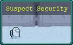 | ||||||||||||||||||||
신고가 본사에 전달되었고, 스테이션은 우리의 안전을 위해 폐쇄 조치되었습니다. 밖에 있지 않을 때 잠겨서 안심이에요. 혹시라도 기술자를 찾으면 환풍구를 통해 몰래 들어갈 수 있을지도 모르죠... | ||||||||||||||||||||
The report got through to HQ, and the station has been placed on lockdown for our safety - which would be very reassuring if we weren't locked outside. Maybe if we can find the Engineer we could sneak back in through the vents. | ||||||||||||||||||||
BGM | ||||||||||||||||||||
No Ducks Among Us | ||||||||||||||||||||
스테이지 구성 | ||||||||||||||||||||
| ||||||||||||||||||||
회의 소집에서 신고! 를 진화시키면 해금. 목표는 11시 방향에 있는 기술자 지노의 관을 찾아서 여는 것이다.
관에 접근하면 강력한 임포스터 리나 4마리가 튀어나와 관을 수호하지만, 오락가락 환풍구 등으로 즉사시킬 수 있기 때문에 난이도는 너무나도 쉽다. 대신 환풍구로 즉사시킨다면 다른 무기들, 특히 신고! 나 샤프 메롱 등으로 갈라 인베이더나 형상 안변환자들이 환풍구에 접근 못 하게끔 치워 줘야 한다.
맵은 본편 게임의 Polus 레플리카 맵을 사용했지만, 맵 설명처럼 시설을 폐쇄해서 그런 탓인지 모든 시설 내부가 음영처리되어 있고 들어가는 것조차 불가능하며 회의 소집 스테이지에서 이어지는 스토리라서인지 맵 중앙의 회의실에서 나온 것처럼 시작 지점이 원본과는 달리 6시로 옮겨졌다. 또한 적 웨이브 구성 역시 판이하게 다르다. 원본 Polus 레플리카에선 볼 수 없고 어드벤처에서만 볼 수 있는 트립 트롭과 스테로이드의 사격형 개체들을 적으로 만나볼 수 있다.
또한 맵에는 행운의 카드 긁기와 파편 파괴, 오락가락 환풍구가 하나씩 배치되어 있으며, 흡입기 2개도 새로 배치되어 있고[35] 시작 지점에서 우측으로 가면 말 아이콘을 쓰고 있는 상인 NPC가 있다.[36] 다만 판매 품목은 시금치, 갑옷, 검은 심장, 붉은 심장, 빈 책, 촛대라서 구매할 이유가 없다. 시금치, 갑옷, 빈 책은 이미 해금되어 있는 상태이고, 심장 2개와 촛대는 평면 바자회에서 여러 가지 다양한 무기들을 해금해서 써먹는 컨셉 플레이가 아니라면 전혀 써먹을 데가 없다.[37]
7시 용암 지대에는 아르카나 상자와 은두자 프라타 하나가 있는 건 여전하므로, 만약 아르카나를 쓰고 있다면 7시로 달려서 아르카나를 먹을 수도 있지만, 맵 자체 난이도가 너무 쉬워서 이걸 먹을 시간에 그냥 관이 있는 쪽으로 뛰어간 뒤 거기서 놀다가 관 수호자들을 처리하고 바로 관을 여는 게 더 낫다.
- 해금 요소
- 보안이 의심되는 기술자를 적발하세요.
보상: 방출됨 스테이지 해금
웨이브 목록 (펼치기 · 접기)
- 0분: 갈라 인베이더
- 1분: 형상 안변환자, G062T(보스, 일반 상자)
- 2분: 갈라 인베이더, G062T(보스, 일반 상자)
- 3분: 형상 안변환자, 갈라 인베이더 스웜
- 4분: 갈라 인베이더, G062T(보스, 상자 X), 거대 트립 트롭(보스, 일반 상자)
- 5분: 형상 안변환자, 거대 트립 트롭(보스, 일반 상자)
- 6분: 갈라 인베이더
- 7분: 형상 안변환자, 거대 스테로이드(보스, 일반 상자)
- 8분: 갈라 인베이더, G062T(보스, 상자 X), 거대 트립 트롭(보스, 일반 상자)
- 9분: 트립 트롭(사격형)
이 개체는 짙은 파란 색상이며 2초마다 공격력이 20이고 상쇄 가능한 탄 1발을 쏜다. - 10분: 형상 안변환자, G062T(보스, 상자 X)
- 11분: 갈라 인베이더, 트립 트롭(사격형)
- 12분: 형상 안변환자, 트립 트롭(사격형), G062T(보스, 진화 상자)
- 13분: 갈라 인베이더, 스테로이드(사격형), G062T(보스, 진화 상자)
이 개체는 짙은 파란 색상이며 2초마다 공격력이 30이고 상쇄 가능한 탄 1발을 쏜다. 또한 묵주(즉사)에 저항이 있다. - 14분: 갈라 인베이더
- 15분: 형상 안변환자, 강력한 임포스터 리나, 거대 형상 안변환자(보스, 일반 상자)
- 16분: 갈라 인베이더, 트립 트롭(사격형)
- 17분: 형상 안변환자
- 18분: 형상 안변환자, 갈라 인베이더, 트립 트롭(사격형), G062T(보스, 진화 상자)
- 19분: 형상 안변환자, 거대 형상 안변환자(보스, 일반 상자)
- 20분: 갈라 인베이더, 트립 트롭(사격형), 스테로이드(사격형)
- 21분: 트립 트롭(사격형),
- 22분: 갈라 인베이더, 스테로이드(사격형)
- 23분: 트립 트롭(사격형), 스테로이드(사격형), 갈라 인베이더 스웜
- 24분: 스테로이드, 거대 붉은 트립 트롭(보스, 진화 상자)
색상이 빨간색이지만 정작 행동 패턴은 일반 트립 트롭과 다른 게 없다. - 25분: 형상 안변환자, 트립 트롭(사격형), 스테로이드(사격형), 갈라 인베이더 스웜
- 26분: 형상 안변환자, 거대 붉은 트립 트롭(보스, 진화 상자), 거대 형상 안변환자(보스, 상자 X)
- 27분: 갈라 인베이더, 스테로이드, 트립 트롭(사격형)
- 28분: 갈라 인베이더, 트립 트롭, 트립 트롭(사격형), 거대 붉은 트립 트롭(보스, 진화 상자)
- 29분: 스테로이드, 거대 붉은 트립 트롭(보스, 진화 상자)
8.3. 방출됨
Ejected | ||||||||||||||||||||
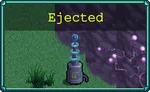 | ||||||||||||||||||||
환풍구를 통해 이상한 생명체들로부터 멀어졌지만 우주 토끼와 오리 우주 비행사들이 사는 곳으로 온 것 같아요. 이번 기회에 이런 신기한 생명체들을 연구해봐야 할 것 같아요. | ||||||||||||||||||||
The vent lead us away from those weird extra-terrestrials, but we seem to have stumbled into a warren of space rabbits and duck astronauts. I suppose we should use this opportunity to research such strange creatures. | ||||||||||||||||||||
BGM | ||||||||||||||||||||
No Vampires Among Us | ||||||||||||||||||||
스테이지 구성 | ||||||||||||||||||||
| ||||||||||||||||||||
의심스러운 보안에서 기술자 지노의 관을 열면 해금. 목표는 달 오리 3000마리를 처치하는 것이다.
맵은 완전히 새로운 맵으로 세로로 매우 긴 횡단보도 같은 맵을 사용하며, 적은 주로 달 오리, 달 토끼가 등장한다. 하지만 19분에 등장하는 거대 트립 트롭부터 시작하여 21분부터 트립 트롭, 스테로이드, 임포스터 등이 적 웨이브로 등장하기 시작하는데, 이전 스테이지와 이번 스테이지의 맵 설명을 생각하면 적대 외계인들을 피해서 겨우 도망친 상황인데, 주인공 일행이 필요한 오리만 챙긴 뒤 빠르게 도주하지 않고 마구 날뛰어대는 탓에 이전 스테이지의 적대 외계인들이 이 상황을 알아채고 겨우 추격해온 모양새다(...)
부가 목표로 6시 방향에 있는 관을 열어 암브로조 경을 구출하는 것으로, 역시나 관에 접근하면 강력한 임포스터 리나 6마리가 튀어나와 관을 수호한다. 또한 6시 방향으로 가는 동안에는 모자 무기와 미니 말 장신구를 하나씩 주울 수 있다.
재미용 30분 버티기를 할 경우, 난이도는 역시 낮은 편이다. 일단 주 적인 오리랑 토끼들이 체력과 공격력이 매우 약해빠져서 별 위협이 되지 않으며 실질적인 위협이 되어야 하는 적들은 21분이 되어서야 나오므로 등장 타이밍이 느리다. 게다가 진화까진 아니더라도 일반 상자를 많이 주는 편이라 무기 레벨업 속도 자체는 쾌적하며 21분쯤 되면 플레이어는 이미 충분히 성장한 상태이다. 그나마 지형이 매우 구려서 벽 바깥에 떨어진 상자나 경험치 보석을 못 먹는 경우가 많다. 위 아래를 헤집고 다니면서 흡입기가 나오길 빌거나 아예 벽을 뚫고 다니는 보호자 피나를 플레이하는 게 좋다.
- 해금 요소
- 방출됨에서 달 오리 3000마리를 처치하세요.
보상: 잠수타지 마 스테이지 해금
- 암브로조 경을 구출하세요.
보상: 암브로조 경 해금
웨이브 목록 (펼치기 · 접기)
돌진이 붙은 달 오리, 달 토끼 개체들은 외형과 능력치는 원본과 동일하지만 원본과는 달리 Polus 레플리카의 특정 구역에서 등장했던 것처럼 플레이어의 위치를 향해 날아온다. 쉽게 말해 일부 사격형 적들이 쏘는 탄환이나 화려한 도서관의 두개골 무리 등을 생각해야 한다. 돌진 오리보단 돌진 토끼의 이동 속도가 훨씬 빠르다.- 0분: 달 오리
- 1분: 달 오리(돌진)
- 2분: 달 오리(돌진), 달 토끼(돌진), G062T(보스, 일반 상자)
- 3분: 달 오리(돌진), 달 토끼(돌진), 거대 달 오리(보스, 일반 상자)
거대 달 오리는 고정 방향 스킬이 없어 다른 일반 잡몹들처럼 플레이어를 계속 추격한다. - 4분: 붉은 달 오리, 소형 달 토끼, 달 토끼(돌진), G062T(보스, 일반 상자)
붉은 달 오리와 소형 달 토끼는 고정 방향 스킬이 없어 다른 일반 잡몹들처럼 플레이어를 계속 추격한다. - 5분: 달 오리, 달 토끼(돌진), 거대 달 오리(보스, 일반 상자)
- 6분: 붉은 달 오리, 달 토끼(돌진)
- 7분: 달 오리(돌진) , 소형 달 토끼, 거대 달 오리(보스, 일반 상자)
- 8분: 달 오리, 붉은 달 오리, 소형 달 토끼, G062T(보스, 일반 상자)
- 9분: 달 오리(돌진), 달 토끼(돌진)
- 10분: 달 오리(돌진), 거대 달 오리(보스, 상자 X)
- 11분: 달 오리(돌진), 소형 달 토끼
- 12분: 달 오리, 붉은 달 오리, 거대 달 오리(보스, 진화 상자)
- 13분: 달 오리(돌진), 달 토끼(돌진), 거대 달 오리(보스, 진화 상자)
- 14분: 달 오리, 달 토끼(돌진)
- 15분: 달 오리(돌진), 붉은 달 오리, 거대 호옥시나(보스, 일반 상자)
- 16분: 달 오리, 소형 달 토끼
- 17분: 달 오리(돌진), 달 토끼(돌진), 붉은 달 오리
- 18분: 달 오리(돌진), 거대 달 오리(보스, 진화 상자)
- 19분: 달 오리, 붉은 달 오리, 거대 트립 트롭(보스, 진화 상자)
- 20분: 달 오리(돌진)
- 21분: 달 오리(돌진), 붉은 달 오리, 트립 트롭(사격형)
- 22분: 달 오리(돌진), 붉은 달 오리, 스테로이드(사격형)
- 23분: 달 오리(돌진), 소형 달 토끼, 스테로이드(사격형)
- 24분: 달 오리, 거대 트립 트롭(보스, 진화 상자)
- 25분: 달 오리(돌진), 트립 트롭(사격형), 강력한 임포스터 리나
- 26분: 달 오리(돌진), 붉은 달 오리, 거대 붉은 트립 트롭(보스, 진화 상자)
- 27분: 달 오리, 강력한 임포스터 리나
- 28분: 달 오리(돌진), 붉은 달 오리, 강력한 임포스터 리나, 거대 달 오리(보스, 진화 상자)
- 29분: 달 오리, 달 오리(돌진), 거대 달 오리(보스, 진화 상자)
8.4. 잠수타지 마
Don't Get Ghosted | ||||||||||||||||||||
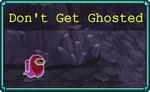 | ||||||||||||||||||||
우주 토끼 무리를 따라 지하 동굴로 들어간 것이 별로 좋은 생각은 아니었네요. 다른 크루원들이 결국 도착한 곳이 지하 미로인지 궁금합니다... | ||||||||||||||||||||
Following a colony of space rabbits into an underground cave might not have been the best idea. I wonder if this creepy cavern is where all the other Crewmates ended up... | ||||||||||||||||||||
BGM | ||||||||||||||||||||
No Ghosts Among Us | ||||||||||||||||||||
스테이지 구성 | ||||||||||||||||||||
| ||||||||||||||||||||
방출됨에서 달 오리 3000마리 이상 처치 시 해금. 목표는 유령 리노의 관을 찾아서 여는 것이다.[38] 관에 접근하면 강력한 임포스터 리나 6마리가 관을 수호한다.
이번 맵도 완전히 새로운 맵으로, 맵 자체는 단순하지만[39] 유제품 공장의 광산 수레 기믹이 있으며 역시나 적 웨이브는 완전히 새롭게 구성되어 있다.
주 목표 자체는 달성하기 쉬우므로, 빠르게 클리어한다면 기존처럼 환풍구나 암석 등을 뽑아서 임포스터들을 빠르게 처리해 주고 관을 열면 된다.
재미용으로 30분을 버틸 경우, 진화 상자와 일반 상자를 매우 짜게 주는 맵이란 걸 유의해야 한다. 20분이 지나서도 진화 상자는 고작 3개밖에 나오지 않아 무기 진화가 매우 느린 편이다.
또한 자폭 스킬을 보유한 빨간 우주 유령 물량 웨이브가 은근히 압박적이며, 10분에 처음 등장하고 22분부터 본격적으로 등장하는 갈색 우주 개미 양파가 은근히 거슬리는 적으로, 이 적은 갈로의 탑 스테이지의 용 새우처럼 피격 시 한 바퀴 회전하며 뒤로 밀려나는 특성이 있지만 이동 속도가 매우 빨라서 순식간에 플레이어에게 접근해오기 때문에 제대로 된 준비가 안 되어 있다면 순식간에 압사당할 수 있다. 특히 저주 풀강 상태라면 노 아르카나 컨셉 플레이 시 꽤 위험한 구간이다. 더불어 4분대 구간도 비슷한 이유로 성장도 제대로 안 된 시기에 우주 유령 스웜이 빠르게 나와서 우주 개미 양파들의 등을 떠밀어 플레이어에게 배달해버려서 순식간에 압사 당할 가능성이 있다.
- 해금 요소
- 잠수타지 마에서 유령을 찾으세요.
보상: 우주 암석 스테이지 해금
웨이브 목록 (펼치기 · 접기)
- 0분: 소형 우주 개미
- 1분: 파란 우주 유령
- 2분: 파란 우주 유령, 우주 개미
- 3분: 파란 우주 유령, 소형 우주 개미, 우주 개미 양파, 화성의 얼굴(보스, 일반 상자)
- 4분: 파란 우주 유령, 우주 개미 양파, 우주 유령 스웜
- 5분: 우주 개미, 우주 개미 양파, 우주 유령 스웜
- 6분: 파란 우주 유령, 우주 개미 양파
- 7분: 빨간 우주 유령, 소형 우주 개미, 화성의 얼굴(보스, 일반 상자)
- 8분: 소형 우주 개미, 우주 개미, 우주 개미 양파, 우주 유령 스웜
- 9분: 파란 우주 유령, 우주 개미 양파
- 10분: 파란 우주 유령, 우주 개미, 거대 갈색 우주 개미 양파(보스, 진화 상자)
갈색 우주 개미 양파는 갈로의 탑 스테이지의 용 새우처럼 피격 시 1바퀴 회전하는 특성이 있으며 이동 속도가 매우 빠르다. - 11분: 우주 개미, 우주 개미 양파, 우주 유령 스웜
- 12분: 파란 우주 유령, 빨간 우주 유령, 화성의 얼굴(보스, 진화 상자)
- 13분: 우주 개미 양파, 우주 유령 스웜
- 14분: 파란 우주 유령, 우주 개미, 우주 개미 양파, 우주 유령 스웜
- 15분: 화성의 얼굴, 파란 우주 유령, 우주 개미, 거대 갈색 우주 개미 양파(보스, 진화 상자)
- 16분: 화성의 얼굴, 우주 개미 양파
- 17분: 파란 우주 유령, 우주 개미, 우주 개미 양파, 우주 유령 스웜
- 18분: 화성의 얼굴, 우주 개미 양파
- 19분: 파란 우주 유령, 우주 개미, 우주 개미 양파, 우주 유령 스웜
- 20분: 빨간 우주 유령, 화성의 얼굴, 우주 개미, 우주 유령 스웜
- 21분: 화성의 얼굴, 거대 갈색 우주 개미 양파(보스, 아르카나 상자{아르카나 OFF시 상자 X})
- 22분: 파란 우주 유령, 화성의 얼굴, 갈색 우주 개미 양파, 우주 유령 스웜
- 23분: 빨간 우주 유령, 화성의 얼굴, 우주 개미 양파
- 24분: 소형 우주 개미, 우주 개미, 갈색 우주 개미 양파, 우주 유령 스웜, 거대 갈색 우주 개미 양파(보스, 진화 상자)
- 25분: 파란 우주 유령, 화성의 얼굴
- 26분: 빨간 우주 유령, 화성의 얼굴, 우주 개미 양파, 거대 갈색 우주 개미 양파(보스, 진화 상자)
- 27분: 화성의 얼굴, 우주 유령 스웜, 갈색 우주 개미 양파, 거대 갈색 우주 개미 양파(보스, 진화 상자)
- 28분: 파란 우주 유령, 화성의 얼굴
- 29분: 화성의 얼굴, 갈색 우주 개미 양파, 우주 유령 스웜, 거대 갈색 우주 개미 양파(보스, 진화 상자)
8.5. 우주 암석
Space Rocks | ||||||||||||||||||||
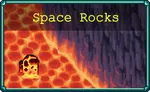 | ||||||||||||||||||||
베이스에서 뭔가 수상쩍은 일들이 일어나고 있습니다. 성난 외계인들이 공격 중이고, 크루원은 실종되었으며, 초자연적인 존재들(물론 유령은 아니지만요)이 구석구석 있네요. 과학의 힘으로 이 모든 것을 알아냅시다! | ||||||||||||||||||||
Something suspicious is going on back at the base. Angry aliens are attacking, Crewmates are missing, and all sort of paranormal creatures (though definitely no ghosts) lurk in every corner. Let's figure out what happened using the power of logic and science! | ||||||||||||||||||||
BGM | ||||||||||||||||||||
No Pirates Among Us | ||||||||||||||||||||
스테이지 구성 | ||||||||||||||||||||
| ||||||||||||||||||||
잠수타지 마에서 유령 리노의 관을 열면 해금. 목표는 과학자 미나의 관을 찾아서 여는 것이다. 관에 접근하면 강력한 임포스터 리나 5마리와 블라인더 3마리가 관을 수호한다.
이번 맵은 원본 스테이지 Polus 레플리카의 7시 용암 지형을 살짝 개조한 것으로, 7시 용암 지형에서 시작하지만 아르카나 상자와 은두자 프라타는 없고 7시 지역에서 나갈 수 있는 길은 전부 막혀있다. 또한 맵 내에는 우주 암석 5개와 관 주변에 단검, 피에라 데 투펠로, 라 로바가 하나씩 배치되어 있다. 그리고 적 웨이브는 당연하다는 듯이 새롭게 구성되어 있다.
주 목표 달성만을 노리면 역시나 매우 쉽다. 시작하자마자 오른쪽 위로 가면서 보이는 우주 암석 무기들을 챙긴 뒤, 관 근처에서 수호병들을 전부 스폰시킨 뒤 암석 몇 번 밟아주면 관 수호병들이 전부 녹아내리므로 대략 최소 1분~최대 3분 내로 클리어할 수 있다.
재미용 버티기 30분을 할 경우 이쪽도 크게 어렵지 않고, 크루원 디노로 플레이하기 정말 좋은 맵이다. 어몽어스 DLC3 무기로 6꽉을 채운뒤 관 주변의 무기 3개를 전부 집으면 9무기 체제가 가능하며 이는 곧 능력치 상승 기회가 3번 더 주어진다는 뜻이다. 대신 그 때문인 건지 진화 상자가 나오는 속도도 매우 느리고 심지어 무기 6개 진화가 불가능하다.
- 해금 요소
- 우주 암석에서 과학자를 찾으세요.
보상: 과학자 미나 해금
웨이브 목록 (펼치기 · 접기)
- 0분: 고추리카
- 1분: 브레이노이드, 고추리카
- 2분: 브레이노이드
- 3분: 고추리카, 거대 빅터 프랑켄슈타인(보스, 일반 상자)
- 4분: 브레이노이드, 갈라 인베이더 스웜
- 5분: 수색꾼, 브레이노이드, 고추리카
- 6분: 수색꾼, 갈라 인베이더 스웜
- 7분: 고추리카, 거대 빅터 프랑켄슈타인(보스, 일반 상자)
- 8분: 브레이노이드, 우주 피클, 우주 유령 스웜
- 9분: 수색꾼, 갈라 인베이더 스웜
- 10분: 브레이노이드, 우주 피클
- 11분: 우주 개미, 브레이노이드, 고추리카
- 12분: 우주 피클, 거대 빅터 프랑켄슈타인(보스, 진화 상자)
- 13분: 우주 피클, 우주 개미, 수색꾼, 갈라 인베이더 스웜
- 14분: 우주 개미, 고추리카
- 15분: 모콜로(분홍), 수색꾼, 브레이노이드, 거대 빅터 프랑켄슈타인(보스, 진화 상자)
- 16분: 모콜로(분홍), 우주 피클
- 17분: 우주 개미 양파, 우주 피클, 브레이노이드, 고추리카, 갈라 인베이더 스웜
- 18분: 우주 개미 양파, 우주 피클, 모콜로(분홍)
- 19분: 모콜로(초록), 우주 피클
- 20분: 우주 개미, 거대 빅터 프랑켄슈타인(보스, 아르카나)
- 21분: 스펑키
- 22분: 우주 개미, 우주 개미 양파, 스펑키, 갈라 인베이더 스웜
- 23분: 모콜로(초록, 분홍), 스펑키, 거대 빅터 프랑켄슈타인(보스, 진화 상자)
- 24분: 스펑키
- 25분: 모콜로(초록), 우주 개미, 우주 개미 양파, 갈라 인베이더 스웜
- 26분: 우주 피클, 빅터 프랑켄슈타인, 거대 빅터 프랑켄슈타인(보스, 진화 상자)
- 27분: 우주 피클, 모콜로(초록), 빅터 프랑켄슈타인
- 28분: 빅터 프랑켄슈타인, 갈라 인베이더 스웜
- 29분: 빅터 프랑켄슈타인, 갈색 우주 개미 양파, 거대 갈색 우주 개미 양파(보스, 진화 상자)
8.6. 시험관의 고난
Emergency Meating | ||||||||||||||||
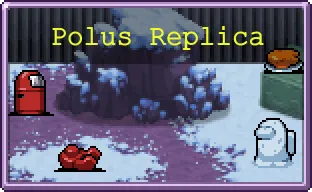 | ||||||||||||||||
과학자는 표본 보관실에서 이상한 실험을 했기 때문에 이 모든 기괴한 일이 발생한 것이라고 합니다. 혁신적인 콩 생물학 프로젝트가 잘못되어 기괴한 살코기 생물이 화난 외계인을 소환하고 있는 것은 확실한 것 같아요. 그것이 무엇이든간에, 우리는 그것을 방출할 거에요! | ||||||||||||||||
The sudden appearance of those three weirdos has interfered with the experiments in the Specimen Room! Some innovative bean-biology project has gone awry, and a bizzare meat creature is summoning swarms of angry aliens. Whatever it is, we're ejecting it! | ||||||||||||||||
BGM | ||||||||||||||||
Emergency Meeting | ||||||||||||||||
스테이지 구성 | ||||||||||||||||
| ||||||||||||||||
원본 Polus 레플리카와 완전히 똑같은 맵이다. 그런데 도대체 뭘 보고 번역을 했는지 스테이지 이름이 시험관의 고난으로 번역되어 있다.
목표는 25분대에 등장하는 보스 확신의 희번득 처치이며, 보조 목표는 레벨 80 달성이다.
이전 DLC 어드벤처 문스펠의 유산에서 강력한 멘야 문스펠로 모든 스테이지를 날먹할 수 있다는 문제를 인식한 건지, 이 스테이지에서만 강력한 임포스터 리나를 해금할 수 있다. 그러므로 진득하게 플레이해야 한다.
- 해금 요소
- 시험관의 고난에서 확신의 희번득을 처치하세요.
보상: 10000 골드
- 시험관의 고난에서 레벨 80을 달성하세요.
보상: 강력한 임포스터 리나
9. 작전 총기(Operation Guns)
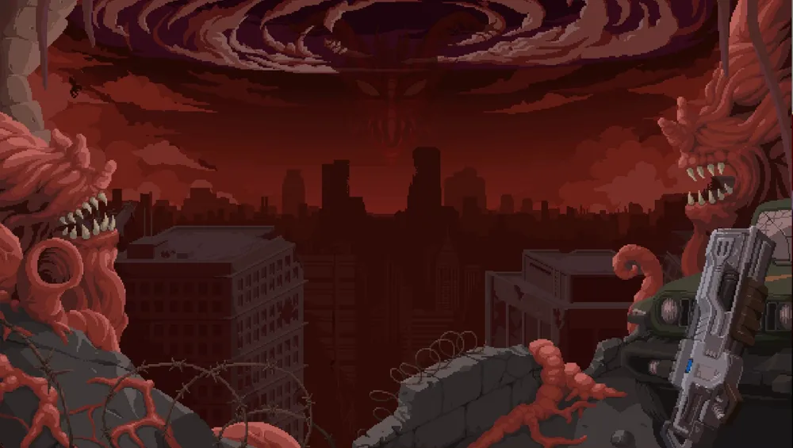
인게임에선 움직이는 일러스트이다.
* 시작 골드 : 10000
* 도전 과제 : 28
* 컬렉션 : 43
사용 가능한 캐릭터 : 빌 라이저, 렌스 빈, 아리아나, 루시아 Zero, 브래드 팡, 브라우니, 시이나 에트란지, 프로보텍터, 스탠리, 뉴트 플리스켄, 대령 바하무트, 시몬도 벨몬트, 돔마리오, 라마 라돈나, 지아순타 벨파에제, 크로치 프리토
해금된 무기 : 도끼, 십자가, 성경, 성스러운 바람, 단총, 스프레드 샷, C-U-레이저, 총기, 소닉 블룸, 귀소 실패, 다이버 광산, 블레이드 석궁, 프리즘 라스, 메탈 클로
해금된 장신구 : 시금치, 갑옷, 검은 심장, 빈 책, 촛대, 팔 보호대, 복제 반지, 날개, 매혹구, 클로버, 티라미수
해금된 특수 아이템 : 무기 파워업
4번째 DLC인 Operation Guns 구매 시 해금되는 어드벤처. 이 어드벤처는 다른 어드벤처들과는 달리 상점인 평면 바자회를 일찍 개방하는 플레이는 불가능하다. 그 때문에 다른 어드벤처에서 일부러 상점 자체를 이용하지 않는 노 상점 플레이를 할 수도 있었으나, 여기선 무조건 제한된 무기와 장신구들로 모든 스테이지를 클리어해야만 한다. 또한 문스펠의 유산과 긴급 회의 어드벤처에 있었던 "상인에게서 구입 가능한 장신구" 항목은 이 어드벤처에서 다시 사라졌다.
그렇다고 해도 노 아르카나 노 한계돌파 노매력 풀저주로 못 버티는 어드벤처도 아니므로 많이 어렵진 않다. 또한 마지막 스테이지를 포함하여 모든 스테이지의 적 웨이브 구성이 원본 스테이지와는 전혀 다르고 새롭게 구성되어 있다. 이전에 출시된 어드벤처들은 항상 마지막 스테이지는 원본 스테이지의 복사+붙여넣기였던 걸 생각하면 특이한 점.
- 해금 요소
- 장총을 진화시키세요.
보상: 루시아 Zero 해금
- 귀소 실패를 진화시키세요.
보상: 스탠리 해금
- 칼날 석궁을 진화시키세요.
보상: 시이나 에트란지 해금
- 소닉 블룸을 진화시키세요.
보상: 브라우니 해금
- 단총을 진화시키세요.
보상: 10000 골드
- 스프레드 샷을 진화시키세요.
보상: 10000 골드
- C-U-레이저를 진화시키세요.
보상: 10000 골드
- 총기를 진화시키세요.
보상: 10000 골드
- 다이버 지뢰를 진화시키세요.
보상: 10000 골드
- 메탈 클로를 진화시키세요.
보상: 10000 골드
9.1. 격렬한 공격
Attack Aggressively | ||||||||||||||||||||
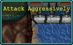 | ||||||||||||||||||||
콘트라 유닛, 새로운 명령이 들어왔습니다. 대통령의 아들이 용병들에게 납치되었고, 그들은 몸값으로 코포사에 첨단 군사 기술들을 요구하고 있지만 우리는 테러리스트와는 협상하지 않습니다. 그들을 상대할 수 있을 만큼 강인한 팀은 여러분 뿐이죠. 갈루가 정글에 공중 낙하하여 적의 기지를 찾아서 폭파하세요! | ||||||||||||||||||||
Contra Unit, your new orders are in. The president's son has been kidnapped by mercenaries, and they're demanding advanced military technology from Corpo Inc. as ransom - but we don't negotiate with terrorists. You're the only team though enough to take them on. Airdrop into Galuga Jungle, find their base, and blow it the heck up! | ||||||||||||||||||||
BGM | ||||||||||||||||||||
Battle in the Jungle - VS version | ||||||||||||||||||||
스테이지 구성 | ||||||||||||||||||||
| ||||||||||||||||||||
기본 스테이지. 목표는 10분에 등장하는 메탈 에일리언을 처치하는 것이다.
부가 목표로 무기 파워업 획득과 아리아나의 관을 찾아서 열기, 20분 동안 생존이 있다. 20분 생존 때문에라도 진득하게 플레이해야 한다.
문제는 첫 플레이 시 플레이 가능한 캐릭터가 빌 라이저 뿐이란 건데, 장총이 많이 구린 무기라 고생할 가능성이 높으므로 최대한 빠르게 성능 무기들을 집어야 한다. 그렇다고 진화를 안 시킬 수도 없는 게 도전과제 때문에라도[40] 이 무기의 진화를 꼭 시켜야만 한다. 어떻게든 다른 무기들을 빨리 합류시켜서 20분 동안 버티며 되도록이면 6무기 올 진화를 목표로 삼는 게 좋다. 그래도 장총을 진화시키면 숨통이 많이 트이며 경험치 문제 때문에 4~5무기만 진화시켜도 잘 한 것이다.
이번 맵은 네오 갈루가 스테이지의 첫 번째 지역인 갈루가 정글 지역을 살짝 손본 것으로, 네오 시티 지역으로 가는 다리가 끊겨있어 오로지 갈루가 정글 지역에서만 돌아다녀야한다. 또한 맵에는 무기 파워업 2개, 장벽 4개, 래피드 파이어 1개, 수류탄 3개, 흡입기 2개가 곳곳에 배치되어 있으며 1시 방향에는 귀소 실패 무기 하나가 배치되어 있고 3시 방향에는 아리아나의 관이 있다.
또한 맵 변경에 따라서 반지들과 메탈리오도 이 지역으로 옮겨졌는데, 문제는 시곗바늘과 월계수가 이 어드벤처에서도 아예 없기 때문에[41] 오히려 아틀란티스인만 불러오는 함정이나 다름없는 기믹이 되었다. 그 때문에 아리아나의 관과 미리 배치된 귀소 실패 무기를 얻으러 갈 때는 주의해야 한다. 특히 귀소 실패는 위쪽으로 가면 귀신같이 달 아틀란티스인이 튀어나와서 쫒아오고, 관을 열 때도 너무 위쪽에 붙으면 화산 아틀란티스인이 튀어나오므로 감당하기 힘들면 충분히 성장한 뒤에 접근하자. 그리고 관에 접근 시 다수의 워로드가 튀어나와 플레이어를 추격한다.
맵의 웨이브는 네오 갈루가 스테이지의 웨이브를 살짝 개조한 채로 사용한다. 그래서 본편 게임의 네오 갈루가 스테이지 웨이브와 차이점이 꽤 있다.
웨이브 목록 (펼치기 · 접기)
- 0분: 레더
- 1분: 레더, 탐욕자, 사격형 레더 스웜(이벤트), 캡슐 드론(이벤트), 워로드(보스, 진화 상자)
- 2분: 레더, 모스키토, 캡슐 드론(이벤트), 워로드(보스, 일반 상자)
- 3분: 사악한 눈사람, 탐욕자, 사격형 레더 스웜(이벤트)
- 4분: 모스키토, 캡슐 드론(이벤트)
- 5분: 탐욕자, 사악한 눈사람, 모스키토, 사격형 레더 스웜(이벤트), 거대 굴칸 탱크(보스, 일반 상자)
- 6분: 레더, 캡슐 드론(이벤트)
- 7분: 가스, 탐욕자, 모스키토, 사격형 레더 스웜(이벤트), 캡슐 드론(이벤트), 거대 굴칸 탱크(보스, 일반 상자)
- 8분: 외계 지네, 사악한 눈사람, 레더, 캡슐 드론(이벤트)
- 9분: 탐욕자, 볼 워커, 모스키토
- 10분: 볼 워커, 사악한 눈사람, 레더, 메탈 에일리언(보스, 진화 상자)
- 11분: 모스키토
- 12분: 사악한 눈사람, 워로드, 탐욕자, 거대 굴칸 탱크(보스, 진화 상자)
- 13분: 외계 지네, 탐욕자, 레더, 거대 굴칸 탱크(보스, 진화 상자)
- 14분: 볼 워커, 워로드
- 15분: 사악한 눈사람, 버거, 레더, 플라이트 자코(보스, 진화 상자)
- 16분: 탐욕자, 기가파리, 돌연변이 크롤러(보스, 진화 상자)
- 17분: 볼 워커, 외계 지네, 모스키토, 플라이트 자코(보스, 진화 상자)
- 18분: 기가파리, 돌연변이 크롤러(보스, 진화 상자)
- 19분: 굴칸 탱크, 돌연변이 크롤러, 사격형 레더 스웜(이벤트)
- 해금 요소
- 격렬한 공격에서 메탈 에일리언을 찾아 파괴하세요.
보상: 총알 바이터 스테이지 해금
- 무기 파워업을 찾으세요.
보상: 렌스 빈 해금
- 격렬한 공격에서 아리아나를 찾으세요.
보상: 아리아나 해금
- 격렬한 공격에서 20분 동안 생존하세요.
보상: 브래드 팡 해금
9.2. 총알 바이터
Bullet Biters | ||||||||||||||||||||
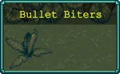 | ||||||||||||||||||||
쥐새끼 같은 놈들! 녀석들은 단순한 용병이 아니라 에일리언 전쟁의 배신자인 레드 팔콘 전사들입니다. 녀석들이 다 소탕된 줄 알았는데, 대통령 조카를 납치하려고 부활한 것 같고, 여러분을 포위하고 있습니다. 구조 헬기를 보낼 수 있을때까지 살아남으세요! | ||||||||||||||||||||
Rats! These are no mere mercenaries, they're Red Falcon fighters, traitors of the Alien Wars. We thought that group was destroyed, but it seems like they're back from the dead to kidnap the president's nephew - and they've got you surrounded. Survive until we can send a rescue chopper! | ||||||||||||||||||||
BGM | ||||||||||||||||||||
Battle in the Jungle - VS version | ||||||||||||||||||||
스테이지 구성 | ||||||||||||||||||||
| ||||||||||||||||||||
격렬한 공격에서 메탈 에일리언을 처치하면 해금. 목표는 15분 동안 생존하는 것이다.
이번 맵은 네오 갈루가 정글 구역을 아예 새롭게 개조한 듯한 널찍한 맵이다. 적 웨이브 구성도 원본 스테이지와 다르다.
북쪽에는 총기, 남쪽에는 스프레드 샷이 배치되어 있고 11시에는 무기 파워업이 있으며 맵 곳곳에는 흡입기(6개), 래피드 파이어(4개), 장벽(3개), 수류탄(3개) 픽업 아이템들이 배치되어 있다.
부가 목표로 1시 방향에 있는 지아순타의 관을 찾아서 여는 것이다. 지아순타의 관이 있는 곳은 나무로 빙 둘러져있어서 못 가는 것처럼 보이지만, 사실 위쪽 한 군데가 뚫려있어 그쪽으로 들어갈 수 있다. 관에 접근 시 워로드 다수가 튀어나와 플레이어를 추격한다.
어차피 15분 동안 생존하는 게 주 목표이기 때문에 이쪽도 진득하게 플레이해야 한다. 이전 스테이지에서 진화시키지 못 했던 무기들만 골라서 진화시켜 과제를 달성하는 것도 괜찮다.
30분을 버틸 경우, 27~29분은 전형적인 압사 패턴인데 정작 플레이어는 근처에 떨어진 픽업 아이템들 외엔 버틸 수 있는 경우가 많지 않다. 특히 노 아르카나 플레이일 경우 정말 힘들다.
- 해금 요소
- 총알 바이터에서 15분 동안 생존하세요.
보상: 네오 시티 카오스 스테이지 해금
- 총알 바이터에서 지아순타를 구출하세요.
보상: 지아순타 벨파에제 해금
웨이브 목록 (펼치기 · 접기)
- 0분: 레더
- 1분: 탐욕자, 사격형 레더 스웜(이벤트), 워로드(보스, 일반 상자)
- 2분: 사악한 눈사람, 탐욕자, 레더, 캡슐 드론(이벤트)
- 3분: 모스키토, 레더, 워로드(보스, 일반 상자)
- 4분: 탐욕자, 레더, 사격형 레더 스웜(이벤트), 거대 굴칸 탱크(보스, 일반 상자)
- 5분: 사악한 눈사람, 모스키토, 탐욕자, 워로드(보스, 일반 상자), 캡슐 드론(이벤트)
- 6분: 사악한 눈사람, 탐욕자, 거대 굴칸 탱크(보스, 일반 상자)
- 7분: 레더, 볼 워커, 모스키토, 워로드(보스, 일반 상자)
- 8분: 가스, 탐욕자, 메탈 에일리언(보스, 일반 상자)
- 9분: 외계 지네, 사악한 눈사람, 레더, 캡슐 드론(이벤트)
- 10분: 볼 워커, 모스키토, 레더, 거대 굴칸 탱크(보스, 진화 상자)
- 11분: 사악한 눈사람, 사격형 레더 스웜(이벤트)
- 12분: 레더, 탐욕자, 워로드, 캡슐 드론(이벤트)
- 13분: 볼 워커, 모스키토, 플라이트 자코(보스, 진화 상자)
- 14분: 사악한 눈사람, 워로드, 사격형 레더 스웜(이벤트), 돌연변이 크롤러(보스, 진화 상자)
- 15분: 굴칸 탱크, 레더, 모스키토, 거대 굴칸 탱크(보스, 진화 상자)
- 16분: 볼 워커
- 17분: 굴칸 탱크, 가스, 사악한 눈사람, 돌연변이 크롤러(보스, 진화 상자)
- 18분: 플라이트 자코, 메탈 에일리언(보스, 진화 상자)
- 19분: 사악한 눈사람, 볼 워커
- 20분: 탐욕자, 모스키토, 돌연변이 크롤러, 메탈 에일리언(보스, 진화 상자)
- 21분: 플라이트 자코, 볼 워커, 캡슐 드론(이벤트)
- 22분: 사악한 눈사람, 가스, 굴칸 탱크
- 23분: 모스키토, 돌연변이 크롤러, 메탈 에일리언(보스, 진화 상자)
- 24분: 플라이트 자코
- 25분: 굴칸 탱크, 사악한 눈사람, 캡슐 드론(이벤트)
- 26분: 돌연변이 크롤러, 캡슐 드론(이벤트)
- 27분~29분: 메탈 에일리언
9.3. 네오 시티 카오스
Neo City Chaos | ||||||||||||||||||||
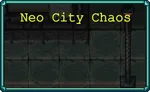 | ||||||||||||||||||||
레드 팔콘의 배신자 봇이 네오 시티를 파괴하고 코포 본사의 방어선을 뚫고 있습니다. 그들이 무엇을 노리는 지는 알 수 없지만, 대통령의, 사촌의 조카를 납치한 것은 단지 주의를 분산시키기 위한 것 같네요. 도심으로 격돌하여 폭파를 시작하세요, 콘트라 유닛. | ||||||||||||||||||||
Red Falcon's betrayer bots are trashing Neo City and breaching the defenses of Corpo Inc.'s head office. We don't know what they're after, but it looks like kidnapping the president's cousin's nephew was just a distraction. Crash into downtown and start blasting, Contra Unit. | ||||||||||||||||||||
BGM | ||||||||||||||||||||
Battle in the Jungle - VS version | ||||||||||||||||||||
스테이지 구성 | ||||||||||||||||||||
| ||||||||||||||||||||
총알 바이터에서 15분 동안 생존하면 해금. 목표는 10분대에 나오는 M78 처치이다.
이번 맵은 네오 갈루가 스테이지의 두 번째 지역인 네오 시티 지역을 살짝 손본 것이며, 역시나 적 웨이브 구성도 원본 스테이지와 다르다.
또한 시작하자마자 바로 앞에 상인 NPC인 지아순타가 있는데 평면 바자회와 동일하게 채찍, 마법 지팡이, 룬 트레이서, 단검, 성스러운 바람을 판매한다. 역시나 컨셉 플레이를 할 게 아니면 기본적으로 해금된 무기와 장신구들로도 충분히 올클리어가 가능하므로 딱히 살 게 없다.[42] 그리고 맵에는 수류탄, 래피드 파이어, 흡입기가 하나씩 배치되어 있고 시작하자마자 북쪽으로 10초만 가면 라마 라돈나의 관을 찾을 수 있다. 관에 접근 시 플라이트 자코 6마리가 튀어나와 추격한다.
부가 목표로 라마 라돈나의 관을 찾아서 열기, 빅 퍼즈 처치, 시몬도 벨몬트 처치가 있다.
라마 라돈나의 관은 상술했듯이 시작하자마자 10초만 위쪽으로 가면 바로 나온다.
빅 퍼즈 처치는 15분부터 원본 맵과 동일한 위치에 알림이 뜨므로 그쪽으로 가면 된다. 여전히 희대의 물보스이므로 어렵지 않게 처치할 수 있다.
시몬도 벨몬트는 본편 게임의 네오 갈루가 맵과 동일하게 빅 퍼즈 보스방으로 진입할 수 있는 발판이 나오는 지역에서 기다리면 나오는데, 20분 이상이어야 등장했었던 원본 게임과는 달리 5분 이상부터 바로 튀어나온다. 물론 빅 퍼즈 보스방이 열렸을 때 뛰어가도 늦지 않는다. 해당 지역에 들어간 뒤에 1분 간격으로 양쪽을 한 번씩 봐주면 어딘가에 끼어있거나 플레이어한테 접근해오고 있을 것이다.
- 해금 요소
- 10분 후 네오 시티에서 M78을 처치하세요.
보상: 작전:건 시티 스테이지 해금
- 네오 시티 북동쪽에서 빅 퍼즈를 처치하세요.
보상: 대령 바하무트 해금
- 시몬도 벨몬트를 처치하세요.
보상: 시몬도 벨몬트 해금
- 라마 라돈나를 구출하세요.
보상: 라마 라돈나 해금
웨이브 목록 (펼치기 · 접기)
- 0분: 레더
- 1분: 탐욕자, 인면견, 폐차장의 자동차(보스, 일반 상자), 캡슐 드론(이벤트)
- 2분: 가스, 레더, 인면견, 헬라이더(이벤트), 캡슐 드론(이벤트), 폐차장의 자동차(보스, 일반 상자)
- 3분: 레더, 사악한 눈사람, 폐차장의 자동차(보스, 일반 상자), 헬라이더 스웜(이벤트)
- 4분: 탐욕자, 인면견, 볼 워커, 헬라이더
- 5분: 가스, 레더, 폐차장의 자동차(보스, 일반 상자)
- 6분: 탐욕자, 사악한 눈사람, 볼 워커
- 7분: 워로드, 플라이트 자코(보스, 일반 상자), 캡슐 드론(이벤트)
- 8분: 외계 지네, 가스, 레더, 폐차장의 자동차(보스, 일반 상자), 캡슐 드론(이벤트)
- 9분: 가스, 볼 워커, 사격형 레더 스웜(이벤트)
- 10분: 사악한 눈사람, 인면견, M78 (보스, 진화 상자)
- 11분: 폐차장의 자동차, 볼 워커
- 12분: 가스, 사격형 레더 스웜(이벤트), 플라이트 자코(보스, 진화 상자), 캡슐 드론(이벤트)
- 13분: 외계 지네, 볼 워커, 인면견
- 14분: 가스, 폐차장의 자동차, 돌연변이 크롤러(보스, 일반 상자)
- 15분: 플라이트 자코, 사악한 눈사람, M78 (보스, 진화 상자), 캡슐 드론(이벤트)
- 16분: 폐차장의 자동차, 돌연변이 크롤러(보스, 진화 상자)
- 17분: 굴칸 탱크, 볼 워커, 인면견
- 18분: 플라이트 자코, 메탈 에일리언(보스, 진화 상자)
- 19분: 굴칸 탱크, 가스, 헬라이더 스웜(이벤트)
9.4. 작전: 건 시티
Operation: Gun City | ||||||||||||||||||||
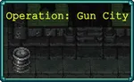 | ||||||||||||||||||||
네오 시티에서 소행성 여러 개가 충돌한 것을 감지했고 통신 교란이 일어나고 있습니다. 레드 팔콘이 에일리언 세포와 코포사의 첨단 비콘 기술을 결합하여 침략군을 소환했습니다! 민간인들은 대피했으니 움직이는 것은 모두 파괴하고, 대통령의 사촌의 조카의 개를 찾을 수 있을지 알아보세요. | ||||||||||||||||||||
Multiple asteroid impacts have been detected in Neo City and are interfering with our comms. Red Falcon have combined Alien Cells with advanced Corpo Inc. beacon technology and have summoned an invasion force! Civilians have been evacuated, so destroy anything that moves, and see if you can find the president's cousin's nephew's dog. | ||||||||||||||||||||
BGM | ||||||||||||||||||||
Battle in the Jungle - VS version | ||||||||||||||||||||
스테이지 구성 | ||||||||||||||||||||
| ||||||||||||||||||||
네오 시티 카오스에서 10분대의 M78를 처치하면 해금. 목표는 10분대에 나오는 빅 봇 골데아 처치이다.
이번 맵은 2스테이지인 총알 바이터와 맵 구조가 약간 유사하다. 적 웨이브 구성은 새롭게 구성되어 있다.
부가 목표로 1시 방향에 있는 돔마리오의 관을 찾아서 여는 것이다. 관에 접근 시 플라이트 자코 6마리가 튀어나오며 총알 바이터의 관과는 달리 숨겨진 길 같은 걸 찾을 필요 없이 그냥 접근할 수 있다.
이 스테이지는 은근히 어려운 편으로, 3분부터 체력이 높은 볼 워커가 웨이브로 튀어나와 비벼대기 시작하고 5분부터 공격력도 체력도 높은 편인 플라이트 자코가 나오는데 플레이어의 성장을 생각하면 너무 일찍 나온다. 특히 플라이트 자코에 비벼지면 그냥 비명횡사하므로 닿을 생각을 말아야 한다. 특히 노 아르카나에 풀강 저주 플레이라면 8~10분대는 잘못하면 부활 스택 하나 날리거나 거기서 끝난다. 상자는 많이 주는 편이지만 문제는 진화 상자를 10분부터 준다... 고성능 캐릭터인 대령 바하무트가 아닌 다른 캐릭터들은 힘들 수도 있다.
- 해금 요소
- 작전: 건 시티에서 빅 봇 골데아를 처치하세요.
보상: 런앤건 스테이지 해금
- 작전 : 건 시티에서 돔마리오를 구출하세요.
보상: 돔마리오 해금
웨이브 목록 (펼치기 · 접기)
- 0분: 레더
- 1분: 인면견, 탐욕자, 워로드, 폐차장의 자동차(보스, 일반 상자)
- 2분: 모스키토, 탐욕자, 폐차장의 자동차(보스, 일반 상자), 헬라이더 스웜(이벤트), 캡슐 드론(이벤트)
- 3분: 볼 워커, 레더
- 4분: 가스, 사악한 눈사람, 레더 폐차장의 자동차(보스, 일반 상자)
- 5분: 탐욕자, 볼 워커, 메탈 에일리언(보스, 일반 상자)
- 6분: 인면견, 워로드, 플라이트 자코, 거대 굴칸 탱크(보스, 일반 상자)
- 7분: 외계 지네, 탐욕자, 사악한 눈사람, M78(보스, 일반 상자)
- 8분: 레더, 볼 워커, 플라이트 자코
- 9분: 탐욕자, 플라이트 자코
- 10분: 사악한 눈사람, 볼 워커, 플라이트 자코, 빅 봇 골데아(보스, 진화 상자)
- 11분: 볼 워커 , 캡슐 드론(이벤트)
- 12분: 굴칸 탱크, 플라이트 자코, 사악한 눈사람, 메탈 에일리언(보스, 진화 상자), 캡슐 드론(이벤트)
- 13분: 볼 워커, 폐차장의 자동차, 사격형 레더 스웜(이벤트), M78(보스, 진화 상자)
- 14분: 플라이트 자코, 헬라이더 스웜(이벤트), 메탈 에일리언(보스, 진화 상자)
- 15분: 외계 지네, 폐차장의 자동차, M78(보스, 진화 상자)
- 16분: 플라이트 자코, 볼 워커
- 17분: 굴칸 탱크, M78(보스, 진화 상자)
- 18분: 메탈 에일리언
- 19분: M78, 헬라이더 스웜(이벤트)
9.5. 런앤건
Run & Gun | ||||||||||||||||||||
콘트라 유닛, 응답하라, 여기는 본부다. 정확한 정찰 없이는 위치를 파악할 수 없고, 무슨 일이 벌어지고 있는지 정확히 알 수 없으니, 우리가 달리 지시할 때까지 계속 외계인을 쏘고 오른쪽으로 달려간다. | ||||||||||||||||||||
Come in, Contra Unit, this is Headquarters. We can't get a read on your position and we aren't exactly sure what's going on without accurate reconnaissance - just keep gunning down aliens and running to the right until we say otherwise. | ||||||||||||||||||||
BGM | ||||||||||||||||||||
Battle in the Jungle - VS version | ||||||||||||||||||||
스테이지 구성 | ||||||||||||||||||||
| ||||||||||||||||||||
작전: 건 시티에서 10분대의 빅 봇 골데아를 처치하면 해금. 목표는 3시 방향으로 쭉 가면 보이는 프로보텍터의 관을 여는 것이다. 관에 접근 시 기가파리 6마리가 튀어나와 플레이어를 추격한다.
스테이지 해금과 프로보텍터 해금이 꼭 마치 개별적으로 해야 되는 것마냥 적혀있는데 실제로는 그냥 프로보텍터 구출이 주 목표다.
이번 맵은 2, 4스테이지와 구조가 조금 비슷하지만 지형이 많이 다르다. 11시에 무기 파워업이 하나 배치되어 있는 건 동일. 16분에 킴코가 하나 나오기 때문에 이 녀석을 잡아서 미리 도전 과제를 깨고 넘어가도 되지만, 다음 스테이지에서 13분에 킴코가 나오므로 빠른 클리어 루트는 관 열고 바로 나가는 것이다.
- 해금 요소
- 런앤건에서 새로운 아군을 찾아보세요.
보상: 에일리언 리벤전스 스테이지 해금
- 런앤건에서 프로보텍터를 찾으세요.
보상: 프로보텍터 해금
- 킴코를 처치하세요.
보상: 뉴트 플리스켄 해금
웨이브 목록 (펼치기 · 접기)
- 0분: 레더, 탐욕자, 버거 스웜 (이벤트)
- 1분: 탐욕자, 독충 젤, 워로드(보스, 일반 상자), 버거 스웜 (이벤트)
- 2분: 모스키토, 워로드(보스, 일반 상자), 캡슐 드론(이벤트)
- 3분: 번들, 메탈 에일리언(보스, 일반 상자)
- 4분: 모스키토, 가스, 독충 젤, 워로드(보스, 일반 상자), 캡슐 드론(이벤트)
- 5분: 모스키토, 자코 에일리언, 탐욕자, 메탈 에일리언(보스, 진화 상자), 캡슐 드론(이벤트)
- 6분: 인면견, 번들
- 7분: 독충 젤, M78(보스, 일반 상자), 캡슐 드론(이벤트)
- 8분: 번들, 모스키토, 가스, 돌연변이 크롤러(보스, 일반 상자)
- 9분: 탐욕자, 자코 에일리언, 독충 젤
- 10분: 버거, 워로드, M78(보스, 진화 상자)
- 11분: 번들, 가스, 캡슐 드론(이벤트)
- 12분: 자코 에일리언, 돌연변이 크롤러(보스, 진화 상자)
- 13분: 메탈 에일리언, 독충 젤, 탐욕자, 버거 스웜(이벤트)
- 14분: 가스, 기가파리, 돌연변이 크롤러(보스, 일반 상자)
- 15분: 자코 에일리언
- 16분: 메탈 에일리언, 탐욕자, 독충 젤, 킴코(보스, 진화 상자)
- 17분: M78, 가스, 인면견
- 18분: 자코 에일리언
- 19분: 번들, 사악한 눈사람, 메탈 에일리언, 사격형 레더 스웜(이벤트)
- 20분: 기가파리, 독충 젤, 워로드, 킴코(보스, 진화 상자)
- 21분: 번들, M78, 폐차장의 자동차, 버거 스웜(이벤트), 캡슐 드론(이벤트)
- 22분: 기가파리, 독충 젤, 킴코(보스, 진화 상자)
- 23분: 메탈 에일리언, 킴코(보스, 진화 상자)
- 24분: 번돌, M78
- 25분: 자코 에일리언, 킴코, 캡슐 드론(이벤트)
- 26분: M78
- 27분: 버거, 킴코, 메탈 에일리언
- 28분: 번들, 킴코, 메탈 에일리언
- 29분: 킴코
9.6. 에일리언 리벤전스
Alien Revengeance | ||||||||||||||||||||
수고하셨습니다, 콘트라 유닛. 외계인 침공의 근원을 찾았군요. 여러분은 이 악취나는 알 산란지에서 살아남을 수 있는 유일한 희망이며, 인류를 위한 전쟁에서 승리할 수 있는 유일한 분대입니다. 사악한 우주 생명체들을 총으로 몰살하고 인류를 위해 승리하세요. | ||||||||||||||||||||
Great work Contra Unit, you've found the source of the alien invasion. You're our only hope, the only squad strong enough to survive in these stinking egg-spawning grounds - shoot those evil space creatures and win the war for humanity. | ||||||||||||||||||||
BGM | ||||||||||||||||||||
Battle in the Jungle - VS version | ||||||||||||||||||||
스테이지 구성 | ||||||||||||||||||||
| ||||||||||||||||||||
런앤건에서 프로보텍터의 관을 열면 해금. 목표는 원본 맵처럼 25분대에 등장하는 타카를 처치하는 것이다.
이번 맵은 네오 갈루가 스테이지의 세 번째 지역인 외계인 둥지 지역을 살짝 손본 것으로, 뒤로 가는 길이 막혀있어 둥지 지역만 돌아다녀야한다. 또한 맵에는 무기 파워업, 장벽, 래피드 파이어, 수류탄, 흡입기가 곳곳에 배치되어 있으며[43] 1시 방향에는 귀소 실패, 스프레드 샷 무기와 크로치 프리토의 관이 있다.
부가 목표로 레벨 80 달성과 크로치의 관을 찾아서 여는 것이 있다. 레벨 80은 정상적인 상황이라면 레벨 80 달성은 껌이고 크로치의 관은 본편에서 빌 라이저의 관을 열었던 곳과 동일한 위치에 있으므로 시작하자마자 오른쪽 위 방향으로 약 30~40초만 달리면 바로 찾을 수 있다. 대신 관에 접근 시 기가파리 12마리가 튀어나와 플레이어를 추격한다.
맵의 웨이브는 이전의 어드벤처들의 마지막 스테이지들은 항상 원본 스테이지의 웨이브를 복사+붙여넣기 했지만 이 어드벤처에선 마지막 스테이지도 웨이브가 원본과 전혀 다르다.
- 해금 요소
- 에일리언 리벤전스에서 25분대의 타카를 처치하세요.
보상: 에일리언 리벤전스 스테이지 해금
- 에일리언 리벤전스에서 크로치를 구출하세요.
보상: 크로치 프리토 해금
- 에일리언 리벤전스에서 레벨 80을 달성하세요.
보상: 평면 바자회(상점) 해금
웨이브 목록 (펼치기 · 접기)
- 0분: 레더, 탐욕자
- 1분: 독충 젤, 모스키토, 돌연변이 크롤러(보스, 일반 상자)
- 2분: 번들, 레더, 탐욕자, 캡슐 드론(이벤트)
- 3분: 독충 젤, 가스, 돌연변이 크롤러(보스, 일반 상자)
- 4분: 레더, 번들, 자코 에일리언, 돌연변이 크롤러(보스, 일반 상자)
- 5분: 버거, 사악한 눈사람, 메탈 에일리언(보스, 진화 상자)
- 6분: 인면견, 자코 에일리언, 독충 젤
- 7분: 번들, 모스키토, 사격형 레더 스웜(이벤트), 돌연변이 크롤러(보스, 일반 상자), 캡슐 드론(이벤트)
- 8분: 버거, 레더, 외계 지네, 돌연변이 크롤러(보스, 진화 상자), 캡슐 드론(이벤트)
- 9분: 모스키토, 독충 젤
- 10분: 자코 에일리언, 돌연변이 크롤러(보스, 진화 상자)
- 11분: 번들, 버거, 사악한 눈사람, M78(보스, 일반 상자)
- 12분: 자코 에일리언, 기가파리, 독충 젤
- 13분: 버거, 킴코(보스, 진화 상자)
- 14분: 모스키토, 기가파리, 탐욕자
- 15분: 자코 에일리언, 기가파리 스웜(이벤트), 킴코(보스, 진화 상자), 캡슐 드론(이벤트)
- 16분: 독충 젤, 번들, 돌연변이 크롤러
- 17분: 기가파리, 플라이트 자코, 모스키토, 킴코(보스, 진화 상자)
- 18분: 독충 젤, 돌연변이 크롤러, 버거, 킴코(보스, 진화 상자), 캡슐 드론(이벤트)
- 19분: 외계 지네, 기가파리, 번들
- 20분: 자코 에일리언, 버거 스웜(이벤트), 킴코(보스, 진화 상자)
- 21분: 버거, 돌연변이 크롤러, 캡슐 드론(이벤트)
- 22분: 기가파리, 돌연변이 크롤러, 킴코(보스, 진화 상자)
- 23분: 기가파리, 킴코(보스, 진화 상자), 캡슐 드론(이벤트)
- 24분: 돌연변이 크롤러, 독충 젤, 기가파리 스웜(이벤트)
- 25분: 버거, 자코 에일리언, 타카(보스, 진화 상자)
- 26분: 기가파리, 돌연변이 크롤러
- 27분: 메탈 에일리언, 킴코
- 28분: M78, 킴코
- 29분: 킴코
10. 캐슬바니아에 바치는 송가
* 시작 골드 : 10000
* 도전 과제 : 81
* 컬렉션 : 12
사용 가능한 캐릭터 : 랄프 C, 사이파, 그랜트, 알루카드, 존, 에릭, 조나단, 살럿, 소마, 요코, 줄리어스, 소니아, 시몬, 크리스토퍼, 마리아, 리히터, 쥬스트, 헥터, 레온, 샤노아, 안토니오, 이멜다, 포르타, 드라큘라
해금된 무기 : 단검, 도끼, 십자가, 성경, 성수, 월계수, 드래곤 워터 채찍, 스피릿 토네이도 소환
해금된 장신구 : 시금치, 갑옷, 매혹구, 클로버
- 해금 요소
어드벤처 클리어 시 소마 쿠루스의 스킨 '어둠의 군주'가 해금된다.
어드벤처 클리어 시 소마 쿠루스의 스킨 '어둠의 군주'가 해금된다.
- 레벨 5에 도달하세요.
보상: 날개 해금
- 레벨 10에 도달하세요.
보상: 왕관 해금
- 레벨 15에 도달하세요.
보상: 주문 속박기 해금
- 레벨 100에 도달하세요.
보상: 평면 바자회 스테이지 해금
- 랄프 C로 2분 동안 생존하세요.
보상: 사이파 해금
- 드래곤 워터 채찍을 진화시키세요.
보상: 드래곤 워터 채찍 해금
- 사이파로 5분 동안 생존하세요.
보상: 룬 트레이서 해금
- 아이스 팡을 진화시키세요.
보상: 아이스 팡 해금
- 그랜트로 5분 동안 생존하세요.
보상: 붉은 심장 해금
- 곡선 단검을 진화시키세요.
보상: 곡선 단검 해금
- 알루카드로 5분 동안 생존하세요.
보상: 팔 보호대 해금
- 알루카트 스워브를 진화시키세요.
보상: 알루카트 스워브 해금
- 존으로 15분 동안 생존하세요.
보상: 촛대 해금
- 아이언볼을 진화시키세요.
보상: 조나단 해금
- 재블린을 진화시키세요.
보상: 에릭 해금
- 알루카드 창을 진화시키세요.
보상: 알루카드 창 해금
- 샬롯으로 15분 동안 생존하세요.
보상: 복제 반지 해금
- 레이징 파이어를 진화시키세요.
보상: 레이징 파이어 해금
- 손 수류탄을 진화시키세요.
보상: 줄리어스 해금
- 색즉시공 채찍을 진화시키세요.
보상: 요코 해금
- 풀구르를 진화시키세요.
보상: 풀구르 해금
- 소니아로 25분 동안 생존하세요.
보상: 원반 해금
- 소닉 채찍을 진화시키세요.
보상: 소닉 채찍 해금
- 시몬으로 20분 동안 생존하세요.
보상: 게일 포스 해금
- 윈드 채찍을 진화시키세요.
보상: 윈드 채찍 해금
- 크리스토퍼로 20분 동안 생존하세요.
보상: 파마산 보호구 해금
- 제트 블랙 채찍을 진화시키세요.
보상: 제트 블랙 채찍 해금
- 마리아로 10분 동안 생존하세요.
보상: 하얀 비둘기 해금
- 수호 방패를 진화시키세요.
보상: 수호 방패 해금
- 쥬스트로 25분 동안 생존하세요.
보상: 수리검 해금
- 비부티 채찍을 진화시키세요.
보상: 비부티 채찍 해금
- 레온으로 10분 동안 생존하세요.
보상: 연금술 채찍 해금
- 플래티넘 채찍을 진화시키세요.
보상: 플래티넘 채찍 해금
- 철퇴를 진화시키세요.
보상: 철퇴 해금
- 수리검을 진화시키세요.
보상: 수리검 해금
- 원반을 진화시키세요.
보상: 원반 해금
- 록 라이엇을 진화시키세요.
보상: 록 라이엇 해금
- 콘포데레를 완전히 진화시키세요.
보상: 콘포데레 해금
- 와인 잔을 진화시키세요.
보상: 와인 잔 해금
- 채찍을 진화시키세요.
보상: 채찍 해금
- 번개 반지를 진화시키세요.
보상: 번개 반지 해금
- 파괴자를 획득하세요.
보상: 5000 골드
- 시곗바늘을 진화시키세요.
보상: 이멜다 해금
- 마법 지팡이를 진화시키세요.
보상: 마법 지팡이 해금
- 월계수를 진화시키세요.
보상: 1000 골드
10.1. 속임수의 숲
속임수의 숲 | ||||||||||||||||||||
드라큘라의 성이 폐허가 된 지 한 세기 만에 부활하여 대지에 사악한 그림자를 드리우고 혼돈을 갈망하는 인간들의 마음을 중독시키고 있습니다. 벨몬드 가문의 용감한 후손들이 채찍을 들고 영원한 적과 맞서기 위해 숲속을 헤쳐나갑니다. | ||||||||||||||||||||
BGM | ||||||||||||||||||||
Vamprie Killer - Vamprie Survivors | ||||||||||||||||||||
스테이지 구성 | ||||||||||||||||||||
| ||||||||||||||||||||
기본 스테이지. 흡입기, 은 반지, 좌 메탈리오, 우 메탈리오, 금 반지, 시금치, 클로버, 미치광이의 두개골, 아르마 디오, 붉은 심장이 배치되어 있다.
- 해금 요소
- 아르마 디오를 찾으세요.
보상: 아르마 디오 해금
- 속임수의 숲에서 레벨 20에 도달하세요.
보상: 캐슬 회랑 해금
- 속임수의 숲에서 500의 적을 처치하세요.
보상: 그랜트 해금
- 속임수의 숲에서 1분 동안 생존하세요.
보상: 검은 심장 해금
- 속임수의 숲에서 25분에 등장하는 베히모스를 처치하세요.
보상: 록 라이엇 해금
- 속임수의 숲에서 관을 찾아 여세요.
보상: 알루카드 해금
- 속임수의 숲에서 트렌트를 처치하세요.[히든_보스]
보상: 시몬 해금
10.2. 캐슬 회랑
캐슬 회랑 | ||||||||||||||||||||
악의 본거지로 들어가는 입구. 끝이 보이지 않습니다. 이 고급스러운 통로를 지나갈 때는 주의하세요. 로스트 치킨보다 더 악취 나는 것들이 벽 사이에 숨어 있으니까요. | ||||||||||||||||||||
BGM | ||||||||||||||||||||
The Beginning - Vamprie Survivors | ||||||||||||||||||||
스테이지 구성 | ||||||||||||||||||||
| ||||||||||||||||||||
속임수의 숲에서 레벨 20에 도달하면 해금.
돌가면, 좌 메탈리오, 우 메탈리오, 은 반지, 금 반지가 배치되어 있다.
돌가면, 좌 메탈리오, 우 메탈리오, 은 반지, 금 반지가 배치되어 있다.
- 해금 요소
- 캐슬 회랑에서 레벨 40에 도달하세요.
보상: 기나긴 서고 해금
- 캐슬 회랑에서 25분에 등장하는 카밀라를 처치하세요.
보상: 미치광이의 두개골 해금
- 캐슬 회랑에서 돌가면을 찾으세요.
보상: 돌가면 해금
- 캐슬 회랑에서 관을 찾아 여세요.
보상: 존 해금
- 캐슬 회랑에서 빅 배트를 처치하세요.[히든_보스]
보상: 크리스토퍼 해금
10.3. 기나긴 서고
기나긴 서고 | ||||||||||||||||||||
드라큘라 폰 테페스의 저주받은 저택. 곳곳에 드라큘라의 뒤틀린 서적 컬렉션이 펼쳐져 있습니다. 열렬한 책벌레들이 드라큘라의 문학 작품을 훌륭한 상태로 보관하고 있습니다. | ||||||||||||||||||||
BGM | ||||||||||||||||||||
After Confession - Vamprie Survivors | ||||||||||||||||||||
스테이지 구성 | ||||||||||||||||||||
| ||||||||||||||||||||
좌 메탈리오, 우 메탈리오, 은 반지, 금 반지, 흡입기, 갑옷, 촛대, 빈 책이 배치되어 있다.
- 해금 요소
- 기나긴 서고에서 레벨 60에 도달하세요.
보상: 시계탑 해금
- 기나긴 서고에서 25분 만에 크리처를 처치하세요.
보상: 풀구르 해금
- 기나긴 서고에서 빈 책을 찾으세요.
보상: 빈 책 해금
- 기나긴 서고에서 관을 찾아 여세요.
보상: 살럿 해금
- 기나긴 서고에서 자이언트 메두사 헤드를 처치하세요.[히든_보스]
보상: 쥬스트 해금
10.4. 시계탑
시계탑 | ||||||||||||||||||||
우뚝 솟은 건물 시계 태엽 속에서 괴물들이 변하지 않는 달을 만나기 위해 미친 듯이 위로 올라갑니다. 성의 심장부에는 드라큘라의 공허한 영혼과 그의 무한한 경멸이 반영된 사악한 계략의 열쇠가 숨겨져 있습니다. | ||||||||||||||||||||
BGM | ||||||||||||||||||||
Bloodlines Bequeathed - Vamprie Survivors | ||||||||||||||||||||
스테이지 구성 | ||||||||||||||||||||
| ||||||||||||||||||||
좌 메탈리오, 우 메탈리오, 주문속박기, 은 반지, 금 반지, 시곗바늘이 배치되어 있다.
- 해금 요소
- 시계탑에서 레벨 80에 도달하세요.
보상: 왕좌의 방 해금
- 25분에 시계탑에서 말파스를 처치하세요.
보상: 검은 비둘기 해금
- 시계탑에서 시곗바늘을 찾으세요.
보상: 시곗바늘 해금
- 시계탑에서 관을 찾아 여세요.
보상: 마리아 해금
- 시계탑에서 게고스를 처치하세요.[히든_보스]
보상: 레온 해금
10.5. 왕좌의 방
왕좌의 방 | ||||||||||||||||||||
뱀파이어는 가장 무서운 추종자들로 장식된 거울의 전당에 보이지 않게 숨어 있습니다. 끔찍한 진실을 밝히기 위해 그의 미친 수수께끼를 풀어보세요. | ||||||||||||||||||||
BGM | ||||||||||||||||||||
Bloody Tears - Vamprie Survivors | ||||||||||||||||||||
스테이지 구성 | ||||||||||||||||||||
| ||||||||||||||||||||
모닝 스타, 좌 메탈리오, 우 메탈리오, 은 반지, 금 반지, 복제 반지, 왕관, 티라미수가 배치되어 있다.
- 해금 요소
- 연금술 채찍을 진화시키세요.
보상: 침몰한 도시 해금
- 25분에 왕좌의 방에서 서큐버스를 처치하세요.
보상: 카로마의 마나 해금
- 타이머가 25분일 때, 왕좌의 방에서 리히터로 뱀파이어 킬러를 휘두르세요.
보상: 드라큘라 해금
- 왕좌의 방에서 티라미수를 찾으세요.
보상: 티라미수 해금
- 왕좌의 방에서 관을 찾아 여세요.
보상: 소마 해금
- 왕좌의 방에서 파라노이아를 처치하세요.[히든_보스]
보상: 안토니오 해금
10.6. 침몰한 도시
침몰한 도시 | ||||||||||||||||||||
수천 개의 고풍스러운 유적의 뼈대 위에 세워진 드라큘라의 성. 그 기초의 어떤 부분은 모두 잊은 신비한 유물로 가득한 전설적인 수중 도시로 구성 되어 있습니다. | ||||||||||||||||||||
BGM | ||||||||||||||||||||
Amber Scenery - Vamprie Survivors | ||||||||||||||||||||
스테이지 구성 | ||||||||||||||||||||
| ||||||||||||||||||||
토로나의 상자를 제외한 Version 1.0의 모든 장신구[49]가 배치되어 있다.
- 해금 요소
- 침몰한 도시에서 브라큐우라를 처치하세요.[히든_보스]
보상: 에클레시아 해금
- 침몰한 도시에서 마리아와 함께 시곗바늘을 진화시키세요.
보상: 진정한 무한 회랑 해금
- 침몰한 도시에서 관을 찾아 여세요.
보상: 소니아 해금
10.7. 에클레시아
에클레시아 | ||||||||||||||||||||
한때 복수하는 조직의 본거지였지만, 이제는 조직이 파괴하고자 했던 하수인들이 괴롭히고 있습니다. 마법이 얼마나 유혹적이었으면 학자들이 부패하고 은총을 받지 못하게 되었을까요? 남아 있고, 누적되어 있고, 감춰진 비밀은 각각 무엇일까요? | ||||||||||||||||||||
BGM | ||||||||||||||||||||
Dance of Pales - Vamprie Survivors | ||||||||||||||||||||
스테이지 구성 | ||||||||||||||||||||
| ||||||||||||||||||||
유일하게 하이퍼 모드가 가능한 스테이지. 록 라이엇, 티라미수, 파마산 보호구, 도끼, 카로마의 마나, 토로나의 상자, 단검이 배치되어 있다.
- 해금 요소
- 15분에 에클레시아에서 강시를 처치하세요.
보상: 토로나의 상자 해금
- 에클레시아에서 관을 찾아 여세요.
보상: 샤노아 해금
- 에클레시아에서 엘리고르를 처치하세요.[히든_보스]
보상: 포르타 해금
10.8. 진정한 무한 회랑
진정한 무한 회랑 | ||||||||||||||||||||
시간도 불멸, 죽음도 불멸. 누가 누구를 플레이하는 걸까요? | ||||||||||||||||||||
BGM | ||||||||||||||||||||
Abandoned Castle - Vamprie Survivors | ||||||||||||||||||||
스테이지 구성 | ||||||||||||||||||||
| ||||||||||||||||||||
배치된 무기나 장신구는 따로 없고, 드롭 아이템인 묵주가 하나 있다.길이 없는 허공의 통로는 벽시계가 방향을 전환할수 있는 분기점 역할을 하니 벽시계를 보고 길을 찾으면 된다. 스테이지 내 진화보물상자가 등장하지 않아 무기진화가 불가능하다.
- 해금 요소
- 진정한 무한 회랑에서 관을 찾아 여세요.
보상: 리히터 해금
- 진정한 무한 회랑에서 제피르를 처치하세요.[히든_보스]
보상: 헥터 해금
[1] 예시로 마늘 천국 어드벤처에서 포 랏초가 황금알을 획득하면, 해당 어드벤처의 포 랏초가 아니라 본편 게임의 포 랏초에게 황금알이 적용된다.[2] 그 때문에 어떤 어드벤처든간에 다르카나를 쓴다면 사탕상자, 아르마 디오는 고정적으로 등장할 수 있으며 아르마 디오로만 얻을 수 있는 장신구인 파마산 보호구, 카로마의 마나도 선택할 수 있다. 또한 골드 핑거의 보상인 뼈, 체리 폭탄, 천상의 꽃, 광산 수레, 라 로마, 승리의 검, 위대한 기념제, 모르타치오의 아니마, 야타 다이카린, 넘치는 애정 등도 얻을 수 있긴 있다.[3] 이건 승천 횟수마다 달라진다. 예시로 마늘 천국 어드벤처는 1회차 클리어 시 35,000 골드를 제공하는데, 회차가 올라갈 때마다 3,500원씩 붙어 10회차에 66,500원이 들어온다.[4] 해당 어드벤처의 전용 컬렉션에는 포함되지 않는다. 즉 어찌보면 해당 어드벤처를 전부 클리어하고 초기화할 때까지 돈 주고 일시적으로 해당 아이템을 해금한다고 생각하면 편하다.[5] 상술했듯이 작전 총기 어드벤처 한정으로 에일리언 리벤전스 스테이지에서 레벨 80을 달성해야 한다.[6] 단 배치된 무기들은 평면 바자회에서 돈 주고 해금한 뒤에 선택창에서 미리 골랐을 경우 배치되어 있던 건 소멸한다.[7] 원문 "Find the Magic Wand."에 진화(evolve)라는 내용이 하나도 없는데 진화하라고 쓰여있다.[8] 물론 일반 박쥐만 바뀌고 박쥐 무리, 오라 박쥐는 그대로이다.[9] 단 보스 판정이긴 해도 잡몹마냥 여러 마리가 등장하며 당연하겠지만 묵주엔 면역이다.[10] 구글 번역기를 돌려놨는지 이상하게 되어 있다.[11] 좌 메탈리오가 있는 칸 기준 위쪽 1칸에 있다.[12] 심지어 여긴 레다가 나오는 지역이다.[13] 특히 야타 카발로는 본편의 해금 요소를 전부 해금해놓았다면 카오스 로잘리아 유물로 인해 레벨 80 이후 야타 다이카린으로 강화되므로 투사체 빌드를 탔다면 노 아르카나로도 푸냘라보다 더 강해질 수 있다.[14] 철창으로 막혀있는 것처럼 보이지만 접근 시 철창이 자동으로 파괴된다.[15] 이 중에서 상술한 "해금된 장신구" 항목에 있는 것들은 이미 처음부터 해금된 상태이지만 여기에도 포함되어 있다. 다만 여기에 적힌 7개의 장신구는 상인 NPC에게 구매하지 않는다면 마지막 스테이지인 문스펠 산까지 해금할 방법은 없다.[16] 본편 게임의 문스펠 산 스테이지에서 고샤도쿠로의 패턴으로 나오던 그 유령 변종들이다.[17] 30분 직전까지 실컷 버틴뒤에 멘야의 관을 열어서 클리어하는 플레이를 할 경우, 각 붉은 심장들 근처의 고샤도쿠로들은 별거 아니므로 빠르게 처리하고 붉은 심장을 전부 얻는 게 좋다.[18] 확률로 2개 이상이 등장할 수 있는 촛대와 1시 방향의 밤의 검도 그대로 있으며 접근 시 고샤도쿠로 1마리가 생성되는 기믹도 그대로다.[19] 만약 사탕상자를 해금했거나 아르카나를 쓰는 플레이라면 달빛 볼레로나 미래에서 온 우박 등으로 장신구와 무기 둘 다 8개 이상을 소유할 수도 있다.[20] 체력 20000, 공격력 20, 이동 속도 180 및 빙결, 묵주(즉사), 디버프, 넉백 면역이다.[21] 여담으로 이 무기를 획득해도 해금된 걸로 처리되어 선택창에 뜬다. 다만 일반 무기 문서에도 적혀있듯이 뼈 같은 건 희귀도가 극도로 낮기 때문에, 지우기 등으로 선택창에 있던 멀쩡한 무기들을 전부 선택창 로테이션에서 치워버린 게 아닌 이상 제대로 등장하지도 않는다.[22] 사망 시 제자리에서 오류가 난것마냥 노이즈가 끼다 소멸한다.[23] 이 개체가 다른 타누키들과 다른 점은 체력이 높고 이동 속도가 조금 더 빠르며 피격 시 뒤로 밀려나는 특성이 있으며 묵주(즉사)에 면역이 있다. 특히 공격했을 때 쓸데없이 뒤로 많이 밀려나는 개체인지 아닌지로 쉽게 파악할 수 있다. 다만 내부적으로 시간대마다 이 개체가 상자를 떨굴지 안 떨굴지는 정해져있다. 즉 3분, 5분, 8분, 9분이 아닌 나머지 시간대에 등장하는 녀석은 상자가 아닌 빨간 경험치 보석만을 떨군다. [24] 이 중에서 상술한 "해금된 장신구" 항목에 있는 것들은 이미 처음부터 해금된 상태이지만 여기에도 포함되어 있다. 다만 여기에 적힌 장신구들은 상인 NPC에게 구매하지 않는다면 마지막 스테이지인 진정한 공포까지 해금할 방법은 없다.[25] 단순히 가에야의 아바타 보스가 등장하는 스테이지에서 가에야의 아바타를 1회 처치하면 된다. [26] 예시로 플레이어가 8레벨 가에야의 시선을 보유하고 있고 쥬느비에브가 파마산 보호구를 보유하고 있다면, 진화 상자를 먹어도 플레이어가 가에야의 시선을 진화시킬 수 있다. 그 반대의 경우도 마찬가지로 왕관 5레벨 플레이어와 프리즈마틱 미사일 8레벨 쥬느비에브인 상황이라면 쥬느비에브의 미사일이 진화된다. 쉽게 말해 이 스테이지에선 장신구와 무기 칸이 12칸으로 증가했습니다라고 생각하면 편하다.[27] 원문인 스워시버클러에서 알 수 있듯이 양아치와 비슷한 뜻이다. 검객이라기엔 케이타는 궁수다.[28] 여담으로 새미가 있는 곳은 분명 맵 밖인데 화로와 적이 정상적으로 스폰된다.[29] 호수 근처로 놀러갔다는 설정 때문인지 이 쪽은 넓은 강이 하나 있다. 강에 접근 시 넛멕과 와이즈파케가 웨이브에 끼어든다.[30] 플레이어가 세 캐릭터 중 하나일 경우 해당 캐릭터를 제외한 나머지 두 캐릭터가 추종자가 된다.[31] 이 중에서 상술한 "해금된 장신구" 항목에 있는 것들은 이미 처음부터 해금된 상태이지만 여기에도 포함되어 있다. 다만 여기에 적힌 장신구들은 상인 NPC에게 구매하지 않는다면 마지막 스테이지인 긴급 회의까지 해금할 방법은 없다.[32] 설명이 애매하게 되어 있지만 실상은 피에라 데 투펠로 또는 에잇 더 스패로우 무기 둘 중 하나라도 무기창에 있다면 바로 해금된다.[33] 만약 미래에서 온 우박 등으로 사탕 상자를 먹은 적이 있다면 어떻게든 운빨로 슈퍼 사탕 상자를 뽑아서 천 개의 칼날을 얻으면 젠나로 해금 도전과제는 클리어할 수 있긴 있다. 문제는 젠나로는 기본 캐릭이라 어몽어스 캐릭들과 비교하면 초라함 그 자체인 게 문제인 데다 고작 이거 하려고 슈퍼 사탕 상자를 천 개의 칼날에 쓰는 건 낭비다. 그나마 보물 상자에서 사탕 상자가 운 좋게 뜬다면, 피에라 데 투펠로 또는 에잇 더 스패로우를 선택하면 푸냘라 프로볼라 캐릭터를 즉시 해금할 수 있게 되긴 한다.[34] 거대 개체의 경우 무려 체력이 1500이며 거대 형상 안변환자는 체력이 3000이다. 당연하지만 둘 다 묵주(즉사)에 면역이다.[35] 이 흡입기들은 주변에 경험치 보석이 하나씩 총 5개가 별 모양으로 배치되어 있다. DLC2의 스테이지인 Foscari 호수에서도 볼 수 있는 배치.[36] 본편 게임의 빅 트라우저(황금알 상인)의 스프라이트를 그대로 쓰는데, 정작 구매창의 대사를 보면 평면 바자회의 말이 구매창에서 하던 대사와 동일하다. 버그인지는 불명.[37] 그나마 기본 장신구 6칸을 꽉 채울거라면 구입해도 좋지만, 아예 상점 사용 금지에 강화만 제대로 눌러줘도 노 아르카나 + 노 한계돌파로도 충분히 올클리어가 가능한 스테이지들이라서 없어도 무관하다.[38] 당연하지만 맵에 배치된 미니 유령 장신구는 해당되지 않는다.[39] 시작 지점에서 우측으로 20초만 달리면 바로 유령 리노의 관이 보이며, 관에서 우측으로 가면 미니 유령 장신구 3개와 광산 수레 3개가 배치된 널찍한 장소가 있다.[40] 상술했듯이 도전과제를 전부 안 깨면 올클리어 인정이 되지 않고 승천도 불가능하다.[41] 마지막 스테이지인 에일리언 리벤전스를 클리어하면 평면 바자회가 열리긴 하지만, 그때 시점에선 승천을 하던지 아니면 그냥 그만두던지 둘 중 하나의 선택 외엔 의미가 없다. 다시 하는 건 순전히 플레이어 취미이다.[42] 성스러운 바람이 진화를 못 하는 게 거슬리면 채찍을 해금해도 상관없지만 문제는 그렇게 둘을 조합해도 성능이 그다지 좋지 않다. 그나마 상점 플레이를 한다면 룬 트레이서와 단검 정도가 고민해 볼 만한 요소이긴 하지만, 그마저도 다른 무기들이나 고성능 캐릭터로도 충분히 커버가 가능하므로 그다지 큰 메리트는 없다. 그리고 어드벤처 자체가 난이도가 높은 편이 아니라서 상점을 아예 안 쓰는 노상점 풀저주 플레이로도 클리어 가능하다.[43] 래피드 파이어만 유일하게 2개다.[히든_보스] 44.1 44.2 44.3 44.4 44.5 44.6 44.7 44.8 지도에 빨간 해골로 표시된 곳에 위치한 붉은 마법진을 밟으면 출현한다.[49] 시금치, 갑옷, 검은 심장, 붉은 심장, 빈 책, 촛대, 팔 보호대, 주문속박기, 복제 반지, 날개, 매혹구, 클로버, 왕관, 돌가면, 미치광이의 두개골, 티라미수, 은 반지, 금 반지, 좌 메탈리오, 우 메탈리오